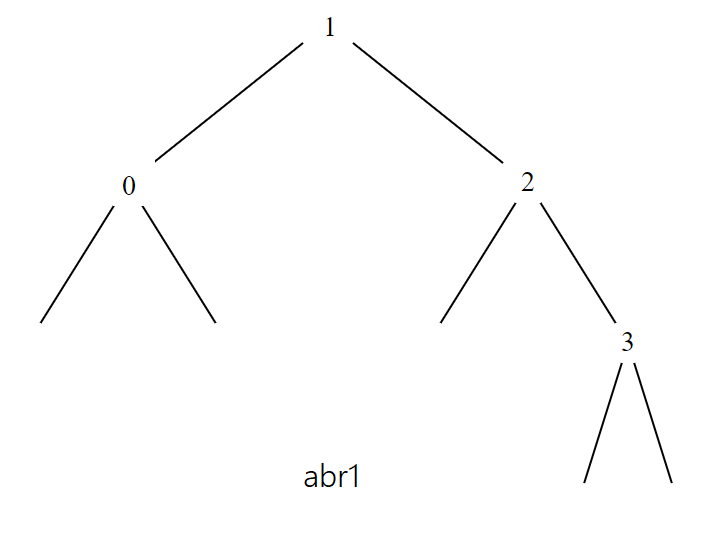
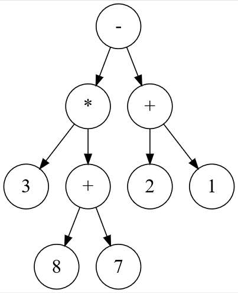
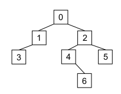

Épreuve Pratique BNS 2023⚓︎
Les sujets ci-dessous correspondent à la dernière version officielle, publiée le 25/01/2023.
Pour signaler des erreurs éventuelles : gilles.lassus@ac-bordeaux.fr
(merci à Rémi Vanicat, Pierre Mouriès, Cyrille Jochault, Vincent Bruneau, Tristan Bringuier, Mireille Coilhac)
 Téléchargements
Téléchargements
- Une archive contenant les 45 dossiers (contenant chacun les deux fichiers
.pdfet.py) : BNS_2023.zip (2,9 Mo) - Un pdf unique de tous les sujets : BNS_2023_pdf_unique.pdf (3,2 Mo)
▶ Sujet 01⚓︎
Version originale du sujet en pdf.
Exercice 01.1⚓︎
Exercice 01.1
Programmer la fonction verifie qui prend en paramètre un tableau de valeurs numériques non
vide et qui renvoie True si ce tableau est trié dans l’ordre croissant, False sinon.
Exemples :
Exemples :
>>> verifie([0, 5, 8, 8, 9])
True
>>> verifie([8, 12, 4])
False
>>> verifie([-1, 4])
True
>>> verifie([5])
True
1 2 3 4 5 | |
Programmer la fonction `verifie` qui prend en paramètre un tableau de valeurs numériques non
vide et qui renvoie `True` si ce tableau est trié dans l’ordre croissant, `False` sinon.
Exemples :
```python
Exemples :
>>> verifie([0, 5, 8, 8, 9])
True
>>> verifie([8, 12, 4])
False
>>> verifie([-1, 4])
True
>>> verifie([5])
True
```

Exercice 01.2⚓︎
Exercice 01.2
Les résultats d'un vote ayant trois issues possibles 'A', 'B' et 'C' sont stockés dans un tableau.
Exemple :
urne = ['A', 'A', 'A', 'B', 'C', 'B', 'C', 'B', 'C', 'B']
La fonction depouille doit permettre de compter le nombre de votes exprimés pour chaque
artiste. Elle prend en paramètre un tableau et renvoie le résultat dans un dictionnaire dont les
clés sont les noms des artistes et les valeurs le nombre de votes en leur faveur.
La fonction vainqueur doit désigner le nom du ou des gagnants. Elle prend en paramètre un
dictionnaire dont la structure est celle du dictionnaire renvoyé par la fonction depouille et
renvoie un tableau. Ce tableau peut donc contenir plusieurs éléments s’il y a des artistes ex-
aequo.
Compléter les fonctions depouille et vainqueur ci-après pour qu’elles renvoient les
résultats attendus.
1 2 3 4 5 6 7 8 9 10 11 12 13 14 15 16 17 18 19 20 | |
Exemples d’utilisation :
>>> election = depouille(urne)
>>> election
{'A': 3, 'B': 4, 'C': 3}
>>> vainqueur(election)
['B']
1 2 3 4 5 6 7 8 9 10 11 12 13 14 15 16 17 18 19 20 | |
- Il est pourtant très déconseillé de nommer une variable avec le même nom que la fonction qui la contient...
- Cette variable
vainqueurest inutile, on ne s'en sert pas dans l'élaboration de la liste finale.
Les résultats d'un vote ayant trois issues possibles 'A', 'B' et 'C' sont stockés dans un tableau.
Exemple :
```python
urne = ['A', 'A', 'A', 'B', 'C', 'B', 'C', 'B', 'C', 'B']
La fonction depouille doit permettre de compter le nombre de votes exprimés pour chaque
artiste. Elle prend en paramètre un tableau et renvoie le résultat dans un dictionnaire dont les
clés sont les noms des artistes et les valeurs le nombre de votes en leur faveur.
La fonction vainqueur doit désigner le nom du ou des gagnants. Elle prend en paramètre un
dictionnaire dont la structure est celle du dictionnaire renvoyé par la fonction depouille et
renvoie un tableau. Ce tableau peut donc contenir plusieurs éléments s’il y a des artistes ex-
aequo.
Compléter les fonctions depouille et vainqueur ci-après pour qu’elles renvoient les
résultats attendus.
1 2 3 4 5 6 7 8 9 10 11 12 13 14 15 16 17 18 19 20 | |
Exemples d’utilisation :
>>> election = depouille(urne)
>>> election
{'A': 3, 'B': 4, 'C': 3}
>>> vainqueur(election)
['B']
```
▶ Sujet 02⚓︎
Version originale du sujet en pdf.
Exercice 02.1⚓︎
Exercice 02.1
Écrire une fonction indices_maxi qui prend en paramètre une liste tab, non vide, de
nombres entiers et renvoie un couple donnant d’une part le plus grand élément de cette
liste et d’autre part la liste des indices de la liste tab où apparaît ce plus grand élément.
Exemple :
>>> indices_maxi([1, 5, 6, 9, 1, 2, 3, 7, 9, 8])
(9, [3, 8])
>>> indices_maxi([7])
(7, [0])
1 2 3 4 5 6 7 8 9 10 | |
Écrire une fonction `indices_maxi` qui prend en paramètre une liste `tab`, non vide, de
nombres entiers et renvoie un couple donnant d’une part le plus grand élément de cette
liste et d’autre part la liste des indices de la liste `tab` où apparaît ce plus grand élément.
Exemple :
```python
>>> indices_maxi([1, 5, 6, 9, 1, 2, 3, 7, 9, 8])
(9, [3, 8])
>>> indices_maxi([7])
(7, [0])
```
Exercice 02.2⚓︎
Exercice 02.2
Cet exercice utilise des piles qui seront représentées en Python par des listes (type list).
On rappelle que l’expression liste_1 = list(liste) fait une copie de listeindépendante de liste, que
l’expression x = liste.pop() enlève le sommet de la pile liste et le place dans la variable x et,
enfin, que l’expression liste.append(v) place la valeur v au sommet de la pile liste.
Compléter le code Python de la fonction positif ci-dessous qui prend une pile liste de
nombres entiers en paramètre et qui renvoie la pile des entiers positifs dans le même
ordre, sans modifier la variable liste.
1 2 3 4 5 6 7 8 9 10 11 | |
Exemple :
>>> positif([-1, 0, 5, -3, 4, -6, 10, 9, -8])
[0, 5, 4, 10, 9]
>>> positif([-2])
[]
1 2 3 4 5 6 7 8 9 10 11 | |
Cet exercice utilise des piles qui seront représentées en Python par des listes (type `list`).
On rappelle que l’expression `liste_1 = list(liste)` fait une copie de `liste `indépendante de `liste`, que
l’expression `x = liste.pop()` enlève le sommet de la pile `liste` et le place dans la variable `x` et,
enfin, que l’expression `liste.append(v)` place la valeur `v` au sommet de la pile `liste`.
Compléter le code Python de la fonction `positif` ci-dessous qui prend une pile `liste` de
nombres entiers en paramètre et qui renvoie la pile des entiers positifs dans le même
ordre, sans modifier la variable `liste`.
```python linenums='1'
def positif(pile):
pile_1 = ...(pile)
pile_2 = ...
while pile_1 != []:
x = ...
if ... >= 0:
pile_2.append(...)
while pile_2 != ...:
x = pile_2.pop()
...
return pile_1
Exemple :
>>> positif([-1, 0, 5, -3, 4, -6, 10, 9, -8])
[0, 5, 4, 10, 9]
>>> positif([-2])
[]
▶ Sujet 03⚓︎
Version originale du sujet en pdf.
Exercice 03.1⚓︎
Exercice 03.1
Dans cet exercice, les nombres sont des entiers ou des flottants.
Écrire une fonction moyenne renvoyant la moyenne pondérée d’une liste non vide,
passée en paramètre, de tuples à deux éléments de la forme (valeur,
coefficient) où valeur et coefficient sont des nombres positifs ou nuls.
Si la somme des coefficients est nulle, la fonction renvoie None, si la somme des
coefficients est non nulle, la fonction renvoie, sous forme de flottant, la moyenne des
valeurs affectées de leur coefficient.
Exemple :
>>> moyenne([(8, 2), (12, 0), (13.5, 1), (5, 0.5)])
9.142857142857142
>>> moyenne([(3, 0), (5, 0)])
None
Dans le premier exemple la moyenne est calculée par la formule :
\(\dfrac{8 \times 2 + 12 \times 0 + 13,5 \times 1 + 5 \times 0,5}{2+0+1+0,5}\)
1 2 3 4 5 6 7 8 9 | |
Dans cet exercice, les nombres sont des entiers ou des flottants.
Écrire une fonction `moyenne` renvoyant la moyenne pondérée d’une liste non vide,
passée en paramètre, de tuples à deux éléments de la forme (`valeur`,
`coefficient`) où `valeur` et `coefficient` sont des nombres positifs ou nuls.
Si la somme des coefficients est nulle, la fonction renvoie `None`, si la somme des
coefficients est non nulle, la fonction renvoie, sous forme de flottant, la moyenne des
valeurs affectées de leur coefficient.
Exemple :
```python
>>> moyenne([(8, 2), (12, 0), (13.5, 1), (5, 0.5)])
9.142857142857142
>>> moyenne([(3, 0), (5, 0)])
None
```
Dans le premier exemple la moyenne est calculée par la formule :
$\dfrac{8 \times 2 + 12 \times 0 + 13,5 \times 1 + 5 \times 0,5}{2+0+1+0,5}$
Exercice 03.2⚓︎
Exercice 03.2
 On travaille sur des dessins en noir et blanc obtenu à partir de pixels noirs et blancs :
La figure « cœur » ci-dessus va servir d’exemple.
On la représente par une grille de nombres, c’est-à-dire par une liste composée de sous-listes de même longueurs.
Chaque sous-liste représentera donc une ligne du dessin.
On travaille sur des dessins en noir et blanc obtenu à partir de pixels noirs et blancs :
La figure « cœur » ci-dessus va servir d’exemple.
On la représente par une grille de nombres, c’est-à-dire par une liste composée de sous-listes de même longueurs.
Chaque sous-liste représentera donc une ligne du dessin.
Dans le code ci-dessous, la fonction affiche permet d’afficher le dessin. Les pixels noirs
(1 dans la grille) seront représentés par le caractère "*" et les blancs (0 dans la grille) par
deux espaces.
La fonction zoomListe prend en argument une liste liste_depart et un entier k. Elle
renvoie une liste où chaque élément de liste_depart est dupliqué k fois.
La fonction zoomDessin prend en argument la grille dessin et renvoie une grille où
toutes les lignes de dessin sont zoomées k fois et répétées k fois.
Soit le code ci-dessous :
1 2 3 4 5 6 7 8 9 10 11 12 13 14 15 16 17 18 19 20 21 22 23 24 25 26 27 28 29 30 31 32 33 34 35 36 37 38 39 40 41 42 43 | |
Résultats à obtenir :
>>> affiche(coeur)
>>> affiche(zoomDessin(coeur,3))
* * * * * * * * * * * *
* * * * * * * * * * * *
* * * * * * * * * * * *
* * * * * * * * * * * *
* * * * * * * * * * * *
* * * * * * * * * * * *
* * * * * * * * *
* * * * * * * * *
* * * * * * * * *
* * * * * *
* * * * * *
* * * * * *
* * * * * *
* * * * * *
* * * * * *
* * * * * *
* * * * * *
* * * * * *
* * * * * *
* * * * * *
* * * * * *
* * * * * *
* * * * * *
* * * * * *
* * * * * *
* * * * * *
* * * * * *
* * *
* * *
* * *
1 2 3 4 5 6 7 8 9 10 11 12 13 14 15 16 17 18 19 20 21 22 23 24 25 26 27 28 29 30 31 32 33 34 35 36 37 38 39 40 41 42 43 | |
{: .center width=30%}
On travaille sur des dessins en noir et blanc obtenu à partir de pixels noirs et blancs :
La figure « cœur » ci-dessus va servir d’exemple.
On la représente par une grille de nombres, c’est-à-dire par une liste composée de sous-listes de même longueurs.
Chaque sous-liste représentera donc une ligne du dessin.
Dans le code ci-dessous, la fonction `affiche` permet d’afficher le dessin. Les pixels noirs
(1 dans la grille) seront représentés par le caractère "*" et les blancs (0 dans la grille) par
deux espaces.
La fonction `zoomListe` prend en argument une liste `liste_depart` et un entier `k`. Elle
renvoie une liste où chaque élément de `liste_depart` est dupliqué `k` fois.
La fonction `zoomDessin` prend en argument la grille `dessin` et renvoie une grille où
toutes les lignes de `dessin` sont zoomées `k` fois et répétées `k` fois.
Soit le code ci-dessous :
```python linenums='1'
coeur = [[0, 0, 0, 0, 0, 0, 0, 0, 0, 0, 0, 0, 0], \
[0, 0, 0, 1, 1, 0, 0, 0, 1, 1, 0, 0, 0], \
[0, 0, 1, 0, 0, 1, 0, 1, 0, 0, 1, 0, 0], \
[0, 1, 0, 0, 0, 0, 1, 0, 0, 0, 0, 1, 0], \
[0, 1, 0, 0, 0, 0, 0, 0, 0, 0, 0, 1, 0], \
[0, 1, 0, 0, 0, 0, 0, 0, 0, 0, 0, 1, 0], \
[0, 0, 1, 0, 0, 0, 0, 0, 0, 0, 1, 0, 0], \
[0, 0, 0, 1, 0, 0, 0, 0, 0, 1, 0, 0, 0], \
[0, 0, 0, 0, 1, 0, 0, 0, 1, 0, 0, 0, 0], \
[0, 0, 0, 0, 0, 1, 0, 1, 0, 0, 0, 0, 0], \
[0, 0, 0, 0, 0, 0, 1, 0, 0, 0, 0, 0, 0], \
[0, 0, 0, 0, 0, 0, 0, 0, 0, 0, 0, 0, 0]]
def affiche(dessin):
''' affichage d'une grille : les 1 sont représentés par
des " *" , les 0 par deux espaces " " '''
for ligne in dessin:
for col in ligne:
if col == 1:
print(" *", end="")
else:
print(" ", end="")
print()
def zoomListe(liste_depart,k):
'''renvoie une liste contenant k fois chaque
élément de liste_depart'''
liste_zoom = ...
for elt in ... :
for i in range(k):
...
return liste_zoom
def zoomDessin(grille,k):
'''renvoie une grille où les lignes sont zoomées k fois
ET répétées k fois'''
grille_zoom=[]
for elt in grille:
liste_zoom = ...
for i in range(k):
... .append(...)
return grille_zoom
Résultats à obtenir :
>>> affiche(coeur)
>>> affiche(zoomDessin(coeur,3))
* * * * * * * * * * * *
* * * * * * * * * * * *
* * * * * * * * * * * *
* * * * * * * * * * * *
* * * * * * * * * * * *
* * * * * * * * * * * *
* * * * * * * * *
* * * * * * * * *
* * * * * * * * *
* * * * * *
* * * * * *
* * * * * *
* * * * * *
* * * * * *
* * * * * *
* * * * * *
* * * * * *
* * * * * *
* * * * * *
* * * * * *
* * * * * *
* * * * * *
* * * * * *
* * * * * *
* * * * * *
* * * * * *
* * * * * *
* * *
* * *
* * *
```
▶ Sujet 04⚓︎
Version originale du sujet en pdf.
Exercice 04.1⚓︎
Exercice 04.1
Écrire une fonction a_doublon qui prend en paramètre une liste triée de nombres et
renvoie True si la liste contient au moins deux nombres identiques, False sinon.
Par exemple :
>>> a_doublon([])
False
>>> a_doublon([1])
False
>>> a_doublon([1, 2, 4, 6, 6])
True
>>> a_doublon([2, 5, 7, 7, 7, 9])
True
>>> a_doublon([0, 2, 3])
False
1 2 3 4 5 | |
Écrire une fonction `a_doublon` qui prend en paramètre une liste **triée** de nombres et
renvoie `True` si la liste contient au moins deux nombres identiques, `False` sinon.
Par exemple :
```python
>>> a_doublon([])
False
>>> a_doublon([1])
False
>>> a_doublon([1, 2, 4, 6, 6])
True
>>> a_doublon([2, 5, 7, 7, 7, 9])
True
>>> a_doublon([0, 2, 3])
False
```
Exercice 04.2⚓︎
Exercice 04.2
On souhaite générer des grilles du jeu de démineur à partir de la position des bombes à
placer.
On se limite à la génération de grilles carrées de taille \(n \times n\) où \(n\) est le nombre de bombes du jeu.
Dans le jeu du démineur, chaque case de la grille contient soit une bombe, soit une valeur qui correspond aux nombres de bombes situées dans le voisinage direct de la case (au- dessus, en dessous, à droite, à gauche ou en diagonale : chaque case a donc 8 voisins si elle n'est pas située au bord de la grille).
Voici un exemple de grille \(5 \times 5\) de démineur dans laquelle la bombe est représentée par une étoile :

On utilise une liste de listes pour représenter la grille et on choisit de coder une bombe par la valeur -1.
L'exemple ci-contre sera donc codé par la liste :
[[1, 1, 1, 0, 0],
[1, -1, 1, 1, 1],
[2, 2, 3, 2, -1],
[1, -1, 2, -1, 3],
[1, 1, 2, 2, -1]]
Compléter le code suivant afin de générer des grilles de démineur, on pourra vérifier que
l’instruction genere_grille([(1, 1), (2, 4), (3, 1), (3, 3), (4, 4)])
produit bien la liste donnée en exemple.
1 2 3 4 5 6 7 8 9 10 11 12 13 14 15 16 17 18 19 20 21 22 23 24 25 26 27 28 29 30 31 32 33 34 | |
1 2 3 4 5 6 7 8 9 10 11 12 13 14 15 16 17 18 19 20 21 22 23 24 25 26 27 28 29 30 31 32 33 34 | |
On souhaite générer des grilles du jeu de démineur à partir de la position des bombes à
placer.
On se limite à la génération de grilles carrées de taille $n \times n$ où $n$ est le nombre de bombes du jeu.
Dans le jeu du démineur, chaque case de la grille contient soit une bombe, soit une valeur
qui correspond aux nombres de bombes situées dans le voisinage direct de la case (au-
dessus, en dessous, à droite, à gauche ou en diagonale : chaque case a donc 8 voisins si
elle n'est pas située au bord de la grille).
Voici un exemple de grille $5 \times 5$ de démineur dans laquelle la bombe est représentée par une étoile :
{: .center}
On utilise une liste de listes pour représenter la grille et on choisit de coder une bombe par la valeur -1.
L'exemple ci-contre sera donc codé par la liste :
```python
[[1, 1, 1, 0, 0],
[1, -1, 1, 1, 1],
[2, 2, 3, 2, -1],
[1, -1, 2, -1, 3],
[1, 1, 2, 2, -1]]
Compléter le code suivant afin de générer des grilles de démineur, on pourra vérifier que
l’instruction genere_grille([(1, 1), (2, 4), (3, 1), (3, 3), (4, 4)])
produit bien la liste donnée en exemple.
1 2 3 4 5 6 7 8 9 10 11 12 13 14 15 16 17 18 19 20 21 22 23 24 25 26 27 28 29 30 31 32 33 34 | |
```
▶ Sujet 05⚓︎
Version originale du sujet en pdf.
Exercice 05.1⚓︎
Exercice 05.1
Écrire en python deux fonctions :
-
lancerde paramètren, un entier positif, qui renvoie un tableau de typelistdenentiers obtenus aléatoirement entre 1 et 6 (1 et 6 inclus) ; -
paire_6de paramètretab, un tableau de typelistdenentiers entre 1 et 6 obtenus aléatoirement, qui renvoie un booléen égal àTruesi le nombre de 6 est supérieur ou égal à 2,Falsesinon.
On pourra utiliser la fonction randint(a,b) du module random pour laquelle la
documentation officielle est la suivante :
Renvoie un entier aléatoire N tel que a <=N <= b.
Exemples :
>>> lancer1 = lancer(5)
[5, 6, 6, 2, 2]
>>> paire_6(lancer1)
True
>>> lancer2 = lancer(5)
[6, 5, 1, 6, 6]
>>> paire_6(lancer2)
True
>>> lancer3 = lancer(3)
[2, 2, 6]
>>> paire_6(lancer3)
False
>>> lancer4 = lancer(0)
[]
>>> paire_6(lancer4)
False
1 2 3 4 5 6 7 8 9 10 11 12 13 14 | |
Écrire en python deux fonctions :
- `lancer` de paramètre `n`, un entier positif, qui renvoie un tableau de type `list` de
`n` entiers obtenus aléatoirement entre 1 et 6 (1 et 6 inclus) ;
- `paire_6` de paramètre `tab`, un tableau de type `list` de `n` entiers entre 1 et
6 obtenus aléatoirement, qui renvoie un booléen égal à `True` si le nombre de 6
est supérieur ou égal à 2, `False` sinon.
On pourra utiliser la fonction `randint(a,b)` du module `random` pour laquelle la
documentation officielle est la suivante :
`Renvoie un entier aléatoire N tel que a <=N <= b.`
Exemples :
```python
>>> lancer1 = lancer(5)
[5, 6, 6, 2, 2]
>>> paire_6(lancer1)
True
>>> lancer2 = lancer(5)
[6, 5, 1, 6, 6]
>>> paire_6(lancer2)
True
>>> lancer3 = lancer(3)
[2, 2, 6]
>>> paire_6(lancer3)
False
>>> lancer4 = lancer(0)
[]
>>> paire_6(lancer4)
False
```
Exercice 05.2⚓︎
Exercice 05.2
On considère une image en 256 niveaux de gris que l’on représente par une grille de nombres, c’est-à-dire une liste composée de sous-listes toutes de longueurs identiques.
La largeur de l’image est donc la longueur d’une sous-liste et la hauteur de l’image est le nombre de sous-listes.
Chaque sous-liste représente une ligne de l’image et chaque élément des sous-listes est un entier compris entre 0 et 255, représentant l’intensité lumineuse du pixel.
Le négatif d’une image est l’image constituée des pixels x_n tels que
x_n + x_i = 255 où x_i est le pixel correspondant de l’image initiale.
Compléter le programme suivant :
1 2 3 4 5 6 7 8 9 10 11 12 13 14 15 16 17 18 19 20 21 22 23 24 25 26 27 28 29 30 31 32 33 34 35 36 | |
Exemples :
>>> img=[[20, 34, 254, 145, 6], [23, 124, 237, 225, 69], [197, 174,
207, 25, 87], [255, 0, 24, 197, 189]]
>>> nbLig(img)
4
>>> nbCol(img)
5
>>> negatif(img)
[[235, 221, 1, 110, 249], [232, 131, 18, 30, 186], [58, 81, 48, 230,
168], [0, 255, 231, 58, 66]]
>>> binaire(img,120)
[[0, 0, 1, 1, 0], [0, 1, 1, 1, 0], [1, 1, 1, 0, 0], [1, 0, 0, 1, 1]]
1 2 3 4 5 6 7 8 9 10 11 12 13 14 15 16 17 18 19 20 21 22 23 24 25 26 27 28 29 30 31 32 33 34 35 36 | |
On considère une image en 256 niveaux de gris que l’on représente par une grille de
nombres, c’est-à-dire une liste composée de sous-listes toutes de longueurs identiques.
La largeur de l’image est donc la longueur d’une sous-liste et la hauteur de l’image est le
nombre de sous-listes.
Chaque sous-liste représente une ligne de l’image et chaque élément des sous-listes est
un entier compris entre 0 et 255, représentant l’intensité lumineuse du pixel.
Le négatif d’une image est l’image constituée des pixels `x_n` tels que
`x_n + x_i = 255` où `x_i` est le pixel correspondant de l’image initiale.
Compléter le programme suivant :
```python linenums='1'
def nbLig(image):
'''renvoie le nombre de lignes de l'image'''
return ...
def nbCol(image):
'''renvoie la largeur de l'image'''
return ...
def negatif(image):
'''renvoie le negatif de l'image sous la forme
d'une liste de listes'''
# on cree une image de 0 aux memes dimensions que le parametre image
L = [[0 for k in range(nbCol(image))] for i in range(nbLig(image))]
for i in range(nbLig(image)):
for j in range(...):
L[i][j] = ...
return L
def binaire(image, seuil):
'''renvoie une image binarisee de l'image sous la forme
d'une liste de listes contenant des 0 si la valeur
du pixel est strictement inferieure au seuil
et 1 sinon'''
# on cree une image de 0 aux memes dimensions que le parametre image
L = [[0 for k in range(nbCol(image))] for i in range(nbLig(image))]
for i in range(nbLig(image)):
for j in range(...):
if image[i][j] < ... :
L[i][j] = ...
else:
L[i][j] = ...
return L
Exemples :
>>> img=[[20, 34, 254, 145, 6], [23, 124, 237, 225, 69], [197, 174,
207, 25, 87], [255, 0, 24, 197, 189]]
>>> nbLig(img)
4
>>> nbCol(img)
5
>>> negatif(img)
[[235, 221, 1, 110, 249], [232, 131, 18, 30, 186], [58, 81, 48, 230,
168], [0, 255, 231, 58, 66]]
>>> binaire(img,120)
[[0, 0, 1, 1, 0], [0, 1, 1, 1, 0], [1, 1, 1, 0, 0], [1, 0, 0, 1, 1]]
```
▶ Sujet 06⚓︎
Version originale du sujet en pdf.
Exercice 06.1⚓︎
Exercice 06.1
Programmer la fonction recherche, prenant en paramètre un tableau non vide tab (type list) d'entiers et un entier n, et qui renvoie l'indice de la dernière occurrence de l'élément cherché. Si l'élément n'est pas présent, la fonction renvoie la longueur du tableau.
Exemples
>>> recherche([5, 3],1)
2
>>> recherche([2,4],2)
0
>>> recherche([2,3,5,2,4],2)
3
1 2 3 4 5 6 | |
Programmer la fonction `recherche`, prenant en paramètre un tableau non vide `tab` (type `list`) d'entiers et un entier `n`, et qui renvoie l'indice de la **dernière** occurrence de l'élément cherché. Si l'élément n'est pas présent, la fonction renvoie la longueur du tableau.
Exemples
```python
>>> recherche([5, 3],1)
2
>>> recherche([2,4],2)
0
>>> recherche([2,3,5,2,4],2)
3
```
Exercice 06.2⚓︎
Exercice 06.2
On souhaite programmer une fonction donnant la distance la plus courte entre un point de départ et une liste de points. Les points sont tous à coordonnées entières. Les points sont donnés sous la forme d'un tuple de deux entiers. La liste des points à traiter est donc un tableau de tuples.
On rappelle que la distance entre deux points du plan de coordonnées \((x;y)\) et \((x';y')\) est donnée par la formule :
On importe pour cela la fonction racine carrée (sqrt) du module math de Python.
Compléter le code des fonctions distance et plus_courte_distance fournies ci-dessous pour qu’elles répondent à leurs spécifications.
1 2 3 4 5 6 7 8 9 10 11 12 13 14 15 | |
Exemples :
>>> distance((1, 0), (5, 3))
5.0
>>> distance((1, 0), (0, 1))
1.4142135623730951
>>> plus_courte_distance([(7, 9), (2, 5), (5, 2)], (0, 0))
(2, 5)
>>> plus_courte_distance([(7, 9), (2, 5), (5, 2)], (5, 2))
(5, 2)
1 2 3 4 5 6 7 8 9 10 11 12 13 14 15 | |
On souhaite programmer une fonction donnant la distance la plus courte entre un point
de départ et une liste de points. Les points sont tous à coordonnées entières.
Les points sont donnés sous la forme d'un tuple de deux entiers.
La liste des points à traiter est donc un tableau de tuples.
On rappelle que la distance entre deux points du plan de coordonnées $(x;y)$ et $(x';y')$
est donnée par la formule :
$$d=\sqrt{(x-x')^2+(y-y')^2}$$
On importe pour cela la fonction racine carrée (`sqrt`) du module `math` de Python.
Compléter le code des fonctions `distance` et `plus_courte_distance` fournies ci-dessous pour qu’elles répondent à leurs spécifications.
```python linenums='1'
from math import sqrt # import de la fonction racine carrée
def distance(point1, point2):
""" Calcule et renvoie la distance entre deux points. """
return sqrt((...)**2 + (...)**2)
def plus_courte_distance(tab, depart):
""" Renvoie le point du tableau tab se trouvant à la plus courte distance du point depart."""
point = tab[0]
min_dist = ...
for i in range (1, ...):
if distance(tab[i], depart)...:
point = ...
min_dist = ...
return point
Exemples :
>>> distance((1, 0), (5, 3))
5.0
>>> distance((1, 0), (0, 1))
1.4142135623730951
>>> plus_courte_distance([(7, 9), (2, 5), (5, 2)], (0, 0))
(2, 5)
>>> plus_courte_distance([(7, 9), (2, 5), (5, 2)], (5, 2))
(5, 2)
▶ Sujet 07⚓︎
Version originale du sujet en pdf.
Exercice 07.1⚓︎
Exercice 07.1
Programmer la fonction fusion prenant en paramètres deux tableaux non vides tab1 et tab2
(type list) d'entiers, chacun dans l’ordre croissant, et renvoyant un tableau trié dans l’ordre
croissant et contenant l’ensemble des valeurs de tab1 et tab2.
Exemples :
>>> fusion([3, 5], [2, 5])
[2, 3, 5, 5]
>>> fusion([-2, 4], [-3, 5, 10])
[-3, -2, 4, 5, 10]
>>> fusion([4], [2, 6])
[2, 4, 6]
1 2 3 4 5 6 7 8 9 10 11 12 13 14 15 16 17 18 19 20 21 22 | |
Programmer la fonction `fusion` prenant en paramètres deux tableaux non vides `tab1` et `tab2`
(type `list`) d'entiers, chacun dans l’ordre croissant, et renvoyant un tableau trié dans l’ordre
croissant et contenant l’ensemble des valeurs de `tab1` et `tab2`.
Exemples :
```python
>>> fusion([3, 5], [2, 5])
[2, 3, 5, 5]
>>> fusion([-2, 4], [-3, 5, 10])
[-3, -2, 4, 5, 10]
>>> fusion([4], [2, 6])
[2, 4, 6]
```
Exercice 07.2⚓︎
Exercice 07.2
Le but de cet exercice est d’écrire une fonction récursive traduire_romain qui prend
en paramètre une chaîne de caractères, non vide, représentant un nombre écrit en
chiffres romains et qui renvoie son écriture décimale.
Les chiffres romains considérés sont : I, V, X, L, C, D et M. Ils représentent respectivement les nombres 1, 5, 10, 50, 100, 500, et 1000 en base dix.
On dispose d’un dictionnaire romains dont les clés sont les caractères apparaissant
dans l’écriture en chiffres romains et les valeurs sont les nombres entiers associés en
écriture décimale :
romains = {"I":1, "V":5, "X":10, "L":50, "C":100, "D":500, "M":1000}
Le code de la fonction traduire_romain fournie repose sur le
principe suivant :
-
la valeur d’un caractère est ajoutée à la valeur du reste de la chaîne si ce caractère a une valeur supérieure (ou égale) à celle du caractère qui le suit ;
-
la valeur d’un caractère est retranchée à la valeur du reste de la chaîne si ce caractère a une valeur strictement inférieure à celle du caractère qui le suit.
Ainsi, XIV correspond au nombre 10 + 5 - 1 puisque :
-
la valeur de X (10) est supérieure à celle de I (1), on ajoute donc 10 à la valeur du reste de la chaîne, c’est-à-dire IV ;
-
la valeur de I (1) est strictement inférieure à celle de V (5), on soustrait donc 1 à la valeur du reste de la chaîne, c’est-à-dire V.
On rappelle que pour priver une chaîne de caractères de son premier caractère, on utilisera l’instruction :
nom_de_variable[1:]
Par exemple, si la variable mot contient la chaîne "CDI", mot[1:] renvoie "DI".
1 2 3 4 5 6 7 8 9 10 11 | |
Compléter le code de la fonction traduire_romain et le tester.
Exemples :
>>> traduire_romain("XIV")
14
>>> traduire_romain("CXLII")
142
>>> traduire_romain("MMXXIII")
2023
1 2 3 4 5 6 7 8 9 10 11 | |
Le but de cet exercice est d’écrire une fonction récursive `traduire_romain` qui prend
en paramètre une chaîne de caractères, non vide, représentant un nombre écrit en
chiffres romains et qui renvoie son écriture décimale.
Les chiffres romains considérés sont : I, V, X, L, C, D et M. Ils représentent
respectivement les nombres 1, 5, 10, 50, 100, 500, et 1000 en base dix.
On dispose d’un dictionnaire `romains` dont les clés sont les caractères apparaissant
dans l’écriture en chiffres romains et les valeurs sont les nombres entiers associés en
écriture décimale :
`romains = {"I":1, "V":5, "X":10, "L":50, "C":100, "D":500, "M":1000}`
Le code de la fonction `traduire_romain` fournie repose sur le
principe suivant :
- la valeur d’un caractère est ajoutée à la valeur du reste de la chaîne si ce
caractère a une valeur supérieure (ou égale) à celle du caractère qui le suit ;
- la valeur d’un caractère est retranchée à la valeur du reste de la chaîne si ce
caractère a une valeur strictement inférieure à celle du caractère qui le suit.
Ainsi, XIV correspond au nombre 10 + 5 - 1 puisque :
- la valeur de X (10) est supérieure à celle de I (1), on ajoute donc 10 à la valeur du
reste de la chaîne, c’est-à-dire IV ;
- la valeur de I (1) est strictement inférieure à celle de V (5), on soustrait donc 1 à
la valeur du reste de la chaîne, c’est-à-dire V.
On rappelle que pour priver une chaîne de caractères de son premier caractère, on
utilisera l’instruction :
`nom_de_variable[1:]`
Par exemple, si la variable `mot` contient la chaîne `"CDI"`, `mot[1:]` renvoie `"DI"`.
```python linenums='1'
romains = {"I":1, "V":5, "X":10, "L":50, "C":100, "D":500, "M":1000}
def traduire_romain(nombre):
""" Renvoie l’écriture décimale du nombre donné en chiffres
romains """
if len(nombre) == 1:
return ...
elif romains[nombre[0]] >= ...
return romains[nombre[0]] + ...
else:
return ...
Compléter le code de la fonction traduire_romain et le tester.
Exemples :
>>> traduire_romain("XIV")
14
>>> traduire_romain("CXLII")
142
>>> traduire_romain("MMXXIII")
2023
▶ Sujet 08⚓︎
Version originale du sujet en pdf.
Exercice 08.1⚓︎
Exercice 08.1
Sur le réseau social TipTop, on s’intéresse au nombre de « like » des abonnés. Les données sont stockées dans des dictionnaires où les clés sont les pseudos et les valeurs correspondantes sont les nombres de « like » comme ci-dessous :
{'Bob': 102, 'Ada': 201, 'Alice': 103, 'Tim': 50}
Écrire une fonction max_dico qui :
- Prend en paramètre un dictionnaire
diconon vide dont les clés sont des chaînes de caractères et les valeurs associées sont des entiers ; - Renvoie un tuple dont :
- La première valeur est la clé du dictionnaire associée à la valeur maximale ;
- La seconde valeur est la première valeur maximale présente dans le dictionnaire.
Exemples :
>>> max_dico({'Bob': 102, 'Ada': 201, 'Alice': 103, 'Tim': 50})
('Ada', 201)
>>> max_dico({'Alan': 222, 'Ada': 201, 'Eve': 220, 'Tim': 50})
('Alan', 222)
1 2 3 4 5 6 7 8 | |
Sur le réseau social TipTop, on s’intéresse au nombre de « like » des abonnés.
Les données sont stockées dans des dictionnaires où les clés sont les pseudos et les valeurs
correspondantes sont les nombres de « like » comme ci-dessous :
`{'Bob': 102, 'Ada': 201, 'Alice': 103, 'Tim': 50}`
Écrire une fonction `max_dico` qui :
- Prend en paramètre un dictionnaire `dico` non vide dont les clés sont des chaînes de
caractères et les valeurs associées sont des entiers ;
- Renvoie un tuple dont :
- La première valeur est la clé du dictionnaire associée à la valeur maximale ;
- La seconde valeur est la première valeur maximale présente dans le
dictionnaire.
Exemples :
```python
>>> max_dico({'Bob': 102, 'Ada': 201, 'Alice': 103, 'Tim': 50})
('Ada', 201)
>>> max_dico({'Alan': 222, 'Ada': 201, 'Eve': 220, 'Tim': 50})
('Alan', 222)
```
Exercice 08.2⚓︎
Exercice 08.2
Nous avons l’habitude de noter les expressions arithmétiques avec des parenthèses comme par exemple : (2 + 3) × 5.
Il existe une autre notation utilisée par certaines calculatrices, appelée notation postfixe, qui n’utilise pas de parenthèses. L’expression arithmétique précédente est alors obtenue en saisissant successivement 2, puis 3, puis l’opérateur +, puis 5, et enfin l’opérateur ×. On modélise cette saisie par le tableau [2, 3, '+', 5, '*'].
Autre exemple, la notation postfixe de 3 × 2 + 5 est modélisée par le tableau :
[3, 2, '*', 5, '+'].
D’une manière plus générale, la valeur associée à une expression arithmétique en notation postfixe est déterminée à l’aide d’une pile en parcourant l’expression arithmétique de gauche à droite de la façon suivante :
- Si l’élément parcouru est un nombre, on le place au sommet de la pile ;
- Si l’élément parcouru est un opérateur, on récupère les deux éléments situés au sommet de la pile et on leur applique l’opérateur. On place alors le résultat au sommet de la pile.
- À la fin du parcours, il reste alors un seul élément dans la pile qui est le résultat de l’expression arithmétique.
Dans le cadre de cet exercice, on se limitera aux opérations × et +.
Pour cet exercice, on dispose d’une classe Pile qui implémente les méthodes de base sur la
structure de pile.
Compléter le script de la fonction eval_expression qui reçoit en paramètre une liste python
représentant la notation postfixe d’une expression arithmétique et qui renvoie sa valeur
associée.
1 2 3 4 5 6 7 8 9 10 11 12 13 14 15 16 17 18 19 20 21 22 23 24 25 26 27 28 29 30 31 32 33 34 | |
Exemple :
>>> eval_expression([2, 3, '+', 5, '*'])
25
1 2 3 4 5 6 7 8 9 10 11 12 13 14 15 16 17 18 19 20 21 22 23 24 25 26 27 28 29 30 31 32 33 34 | |
Nous avons l’habitude de noter les expressions arithmétiques avec des parenthèses comme
par exemple : (2 + 3) × 5.
Il existe une autre notation utilisée par certaines calculatrices, appelée notation postfixe, qui n’utilise pas de parenthèses. L’expression arithmétique précédente est alors obtenue en
saisissant successivement 2, puis 3, puis l’opérateur +, puis 5, et enfin l’opérateur ×. On
modélise cette saisie par le tableau [2, 3, '+', 5, '*'].
Autre exemple, la notation postfixe de 3 × 2 + 5 est modélisée par le tableau :
[3, 2, '*', 5, '+'].
D’une manière plus générale, la valeur associée à une expression arithmétique en notation
postfixe est déterminée à l’aide d’une pile en parcourant l’expression arithmétique de gauche
à droite de la façon suivante :
- Si l’élément parcouru est un nombre, on le place au sommet de la pile ;
- Si l’élément parcouru est un opérateur, on récupère les deux éléments situés au
sommet de la pile et on leur applique l’opérateur. On place alors le résultat au sommet
de la pile.
- À la fin du parcours, il reste alors un seul élément dans la pile qui est le résultat de
l’expression arithmétique.
Dans le cadre de cet exercice, on se limitera aux opérations × et +.
Pour cet exercice, on dispose d’une classe `Pile` qui implémente les méthodes de base sur la
structure de pile.
Compléter le script de la fonction `eval_expression` qui reçoit en paramètre une liste python
représentant la notation postfixe d’une expression arithmétique et qui renvoie sa valeur
associée.
```python linenums='1'
class Pile:
"""Classe définissant une structure de pile."""
def __init__(self):
self.contenu = []
def est_vide(self):
"""Renvoie le booléen True si la pile est vide, False sinon."""
return self.contenu == []
def empiler(self, v):
"""Place l'élément v au sommet de la pile"""
self.contenu.append(v)
def depiler(self):
"""
Retire et renvoie l’élément placé au sommet de la pile,
si la pile n’est pas vide.
"""
if not self.est_vide():
return self.contenu.pop()
def eval_expression(tab):
p = Pile()
for ... in tab:
if element != '+' ... element != '*':
p.empiler(...)
else:
if element == ...:
resultat = p.depiler() + ...
else:
resultat = ...
p.empiler(...)
return ...
Exemple :
>>> eval_expression([2, 3, '+', 5, '*'])
25
▶ Sujet 09⚓︎
Version originale du sujet en pdf.
Exercice 09.1⚓︎
Exercice 09.1
Programmer la fonction multiplication, prenant en paramètres deux nombres entiers
n1 et n2, et qui renvoie le produit de ces deux nombres.
Les seules opérations autorisées sont l’addition et la soustraction.
Exemples :
>>> multiplication(3,5)
15
>>> multiplication(-4,-8)
32
>>> multiplication(-2,6)
-12
>>> multiplication(-2,0)
0
1 2 3 4 5 6 7 8 9 | |
Programmer la fonction `multiplication`, prenant en paramètres deux nombres entiers
`n1` et `n2`, et qui renvoie le produit de ces deux nombres.
Les seules opérations autorisées sont l’addition et la soustraction.
Exemples :
```python
>>> multiplication(3,5)
15
>>> multiplication(-4,-8)
32
>>> multiplication(-2,6)
-12
>>> multiplication(-2,0)
0
```
Exercice 09.2⚓︎
Exercice 09.2
Soit tab un tableau non vide d'entiers triés dans l'ordre croissant et n un entier.
La fonction chercher ci-dessous doit renvoyer un indice où la valeur n
apparaît dans tab si cette valeur y figure et None sinon.
Les paramètres de la fonction sont :
tab, le tableau dans lequel s'effectue la recherche ;n, l'entier à chercher dans le tableau ;i, l'indice de début de la partie du tableau où s'effectue la recherche ;j, l'indice de fin de la partie du tableau où s'effectue la recherche.
L’algorithme demandé est une recherche dichotomique récursive.
Recopier et compléter le code de la fonction chercher suivante :
1 2 3 4 5 6 7 8 9 10 11 12 | |
L'exécution du code doit donner :
>>> chercher([1, 5, 6, 6, 9, 12], 7, 0, 10)
>>> chercher([1, 5, 6, 6, 9, 12], 7, 0, 5)
>>> chercher([1, 5, 6, 6, 9, 12], 9, 0, 5)
4
>>> chercher([1, 5, 6, 6, 9, 12], 6, 0, 5)
2
1 2 3 4 5 6 7 8 9 10 11 12 | |
Soit `tab` un tableau non vide d'entiers triés dans l'ordre croissant et `n` un entier.
La fonction `chercher` ci-dessous doit renvoyer un indice où la valeur `n`
apparaît dans `tab` si cette valeur y figure et `None` sinon.
Les paramètres de la fonction sont :
- `tab`, le tableau dans lequel s'effectue la recherche ;
- `n`, l'entier à chercher dans le tableau ;
- `i`, l'indice de début de la partie du tableau où s'effectue la recherche ;
- `j`, l'indice de fin de la partie du tableau où s'effectue la recherche.
L’algorithme demandé est une recherche dichotomique récursive.
Recopier et compléter le code de la fonction `chercher` suivante :
```python linenums='1'
def chercher(tab, n, i, j):
if i < 0 or j > len(tab) :
return None
if i > j :
return None
m = (i + j) // ...
if ... < n :
return chercher(tab, n, ... , ...)
elif ... > n :
return chercher(tab, n, ... , ... )
else :
return ...
L'exécution du code doit donner :
>>> chercher([1, 5, 6, 6, 9, 12], 7, 0, 10)
>>> chercher([1, 5, 6, 6, 9, 12], 7, 0, 5)
>>> chercher([1, 5, 6, 6, 9, 12], 9, 0, 5)
4
>>> chercher([1, 5, 6, 6, 9, 12], 6, 0, 5)
2
▶ Sujet 10⚓︎
Version originale du sujet en pdf.
Exercice 10.1⚓︎
Exercice 10.1
Écrire la fonction maxliste, prenant en paramètre un tableau non vide de nombres tab (de type
list) et renvoyant le plus grand élément de ce tableau.
Exemples :
>>> maxliste([98, 12, 104, 23, 131, 9])
131
>>> maxliste([-27, 24, -3, 15])
24
1 2 3 4 5 6 | |
Écrire la fonction `maxliste`, prenant en paramètre un tableau non vide de nombres `tab` (de type
`list`) et renvoyant le plus grand élément de ce tableau.
Exemples :
```python
>>> maxliste([98, 12, 104, 23, 131, 9])
131
>>> maxliste([-27, 24, -3, 15])
24
```
Exercice 10.2⚓︎
Exercice 10.2
On dispose de chaînes de caractères contenant uniquement des parenthèses ouvrantes et fermantes.
Un parenthésage est correct si :
- le nombre de parenthèses ouvrantes de la chaîne est égal au nombre de parenthèses fermantes.
- en parcourant la chaîne de gauche à droite, le nombre de parenthèses déjà ouvertes doit être, à tout moment, supérieur ou égal au nombre de parenthèses déjà fermées.
Ainsi, ((()())(())) est un parenthésage correct.
Les parenthésages ())(() et (())(() sont, eux, incorrects.
On dispose du code de la classe Pile suivant :
1 2 3 4 5 6 7 8 9 10 11 12 13 14 15 16 17 | |
On souhaite programmer une fonction parenthesage qui prend en paramètre une chaîne de caractères ch formée de
parenthèses et renvoie True si la chaîne est bien parenthésée et False sinon.
Cette fonction utilise une pile et suit le principe suivant : en parcourant la chaîne de gauche à droite, si on trouve une parenthèse ouvrante, on l’empile au sommet de la pile et si on trouve une parenthèse fermante, on dépile (si possible) la parenthèse ouvrante stockée au sommet de la pile.
La chaîne est alors bien parenthésée si, à la fin du parcours, la pile est vide.
Elle est, par contre, mal parenthésée :
- si dans le parcours, on trouve une parenthèse fermante, alors que la pile est vide ;
- ou si, à la fin du parcours, la pile n’est pas vide.
1 2 3 4 5 6 7 8 9 10 11 12 | |
Compléter le code de la fonction parenthesage.
Exemples :
>>> parenthesage("((()())(()))")
True
>>> parenthesage("())(()")
False
>>> parenthesage("(())(()")
False
1 2 3 4 5 6 7 8 9 10 11 12 13 14 15 16 17 18 19 20 21 22 23 24 25 26 27 28 29 30 | |
On dispose de chaînes de caractères contenant uniquement des parenthèses ouvrantes et
fermantes.
Un parenthésage est correct si :
- le nombre de parenthèses ouvrantes de la chaîne est égal au nombre de parenthèses
fermantes.
- en parcourant la chaîne de gauche à droite, le nombre de parenthèses déjà ouvertes doit
être, à tout moment, supérieur ou égal au nombre de parenthèses déjà fermées.
Ainsi, `((()())(()))` est un parenthésage correct.
Les parenthésages `())(()` et `(())(()` sont, eux, incorrects.
On dispose du code de la classe `Pile` suivant :
```python linenums='1'
class Pile:
""" Classe définissant une pile """
def __init__(self):
self.valeurs = []
def est_vide(self):
"""Renvoie True si la pile est vide, False sinon"""
return self.valeurs == []
def empiler(self, c):
"""Place l’élément c au sommet de la pile"""
self.valeurs.append(c)
def depiler(self):
"""Supprime l’élément placé au sommet de la pile, à condition qu’elle soit non vide"""
if self.est_vide() == False:
self.valeurs.pop()
On souhaite programmer une fonction parenthesage qui prend en paramètre une chaîne de caractères ch formée de
parenthèses et renvoie True si la chaîne est bien parenthésée et False sinon.
Cette fonction utilise une pile et suit le principe suivant : en parcourant la chaîne de gauche à droite, si on trouve une parenthèse ouvrante, on l’empile au sommet de la pile et si on trouve une parenthèse fermante, on dépile (si possible) la parenthèse ouvrante stockée au sommet de la pile.
La chaîne est alors bien parenthésée si, à la fin du parcours, la pile est vide.
Elle est, par contre, mal parenthésée :
- si dans le parcours, on trouve une parenthèse fermante, alors que la pile est vide ;
- ou si, à la fin du parcours, la pile n’est pas vide.
1 2 3 4 5 6 7 8 9 10 11 12 | |
Compléter le code de la fonction parenthesage.
Exemples :
>>> parenthesage("((()())(()))")
True
>>> parenthesage("())(()")
False
>>> parenthesage("(())(()")
False
▶ Sujet 11⚓︎
Version originale du sujet en pdf.
Exercice 11.1⚓︎
Exercice 11.1
On modélise la représentation binaire d'un entier non signé par un tableau d'entiers dont
les éléments sont 0 ou 1. Par exemple, le tableau [1, 0, 1, 0, 0, 1, 1] représente
l'écriture binaire de l'entier dont l'écriture décimale est
2**6 + 2**4 + 2**1 + 2**0 = 83.
À l'aide d'un parcours séquentiel, écrire la fonction convertir répondant aux
spécifications suivantes :
def convertir(tab):
"""
tab est un tableau d'entiers, dont les éléments sont 0 ou 1 et
représentant un entier écrit en binaire. Renvoie l'écriture
décimale de l'entier positif dont la représentation binaire
est donnée par le tableau tab
"""
>>> convertir([1, 0, 1, 0, 0, 1, 1])
83
>>> convertir([1, 0, 0, 0, 0, 0, 1, 0])
130
1 2 3 4 5 6 7 | |
On modélise la représentation binaire d'un entier non signé par un tableau d'entiers dont
les éléments sont 0 ou 1. Par exemple, le tableau `[1, 0, 1, 0, 0, 1, 1]` représente
l'écriture binaire de l'entier dont l'écriture décimale est
`2**6 + 2**4 + 2**1 + 2**0 = 83`.
À l'aide d'un parcours séquentiel, écrire la fonction `convertir` répondant aux
spécifications suivantes :
```python
def convertir(tab):
"""
tab est un tableau d'entiers, dont les éléments sont 0 ou 1 et
représentant un entier écrit en binaire. Renvoie l'écriture
décimale de l'entier positif dont la représentation binaire
est donnée par le tableau tab
"""
```
Exemple :
```python
>>> convertir([1, 0, 1, 0, 0, 1, 1])
83
>>> convertir([1, 0, 0, 0, 0, 0, 1, 0])
130
```
Exercice 11.2⚓︎
Exercice 11.2
La fonction tri_insertion suivante prend en argument une liste tab et trie cette liste en
utilisant la méthode du tri par insertion. Compléter cette fonction pour qu'elle réponde à la
spécification demandée.
On rappelle le principe du tri par insertion : on considère les éléments à trier un par un, le premier élément constituant, à lui tout seul, une liste triée de longueur 1. On range ensuite le second élément pour constituer une liste triée de longueur 2, puis on range le troisième élément pour avoir une liste triée de longueur 3 et ainsi de suite… A chaque étape, le premier élément de la sous-liste non triée est placé dans la sous-liste des éléments déjà triés de sorte que cette sous-liste demeure triée.
Le principe du tri par insertion est donc d'insérer à la n-ième itération, le n-ième élément à la bonne place.
1 2 3 4 5 6 7 8 9 10 11 12 | |
Exemples :
>>> liste = [9, 5, 8, 4, 0, 2, 7, 1, 10, 3, 6]
>>> tri_insertion(liste)
>>> liste
[0, 1, 2, 3, 4, 5, 6, 7, 8, 9, 10]
1 2 3 4 5 6 7 8 9 10 11 12 | |
La fonction `tri_insertion` suivante prend en argument une liste `tab` et trie cette liste en
utilisant la méthode du tri par insertion. Compléter cette fonction pour qu'elle réponde à la
spécification demandée.
On rappelle le principe du tri par insertion : on considère les éléments à trier un par un,
le premier élément constituant, à lui tout seul, une liste triée de longueur 1. On range
ensuite le second élément pour constituer une liste triée de longueur 2, puis on range le
troisième élément pour avoir une liste triée de longueur 3 et ainsi de suite… A chaque
étape, le premier élément de la sous-liste non triée est placé dans la sous-liste des
éléments déjà triés de sorte que cette sous-liste demeure triée.
Le principe du tri par insertion est donc d'insérer à la n-ième itération, le n-ième élément
à la bonne place.
```python linenums='1'
def tri_insertion(tab):
n = len(tab)
for i in range(1, n):
valeur_insertion = tab[...]
# la variable j sert à déterminer où placer la valeur à ranger
j = ...
# tant qu'on a pas trouvé la place de l'élément à insérer
# on décale les valeurs du tableau vers la droite
while j > ... and valeur_insertion < tab[...]:
tab[j] = tab[j-1]
j = ...
tab[j] = ...
Exemples :
>>> liste = [9, 5, 8, 4, 0, 2, 7, 1, 10, 3, 6]
>>> tri_insertion(liste)
>>> liste
[0, 1, 2, 3, 4, 5, 6, 7, 8, 9, 10]
▶ Sujet 12⚓︎
Version originale du sujet en pdf.
Exercice 12.1⚓︎
Exercice 12.1
On considère la classe ABR, dont le constructeur est le suivant :
class ABR:
def __init__(self, g0, v0, d0):
self.gauche = g0
self.cle = v0
self.droit = d0
def __repr__(self):
if self is None:
return ''
else:
return '(' + (self.gauche).__repr__() + ',' + str(self.cle) + ',' +(self.droit).__repr__() + ')'

Ainsi, l’arbre binaire de recherche abr1 ci-
contre est créé par le code python ci-
dessous
n0 = ABR(None, 0, None)
n3 = ABR(None, 3, None)
n2 = ABR(None, 2, n3)
n3 = ABR(n0, 1, n2)
Dans tout le code, None correspondra à un arbre vide.
La classe ABR dispose aussi d’une méthode de représentation (__repr__ ), qui affiche entre
parenthèses le contenu du sous arbre gauche, puis la clé de l’arbre, et enfin le
contenu du sous arbre droit. Elle s’utilise en console de la manière suivante :
>>> abr1
((None,0,None),1,(None,2,(None,3,None)))
Écrire une fonction récursive ajoute(cle, a) qui prend en paramètres une clé cle
et un arbre binaire de recherche a , et qui renvoie un arbre binaire de recherche dans
lequel cle a été insérée.
Dans le cas où cle est déjà présente dans a, la fonction renvoie l’arbre a inchangé.
Résultats à obtenir :
>>> a = ajoute(4, abr1)
>>> a
((None,0,None),1,(None,2,(None,3,(None,4,None))))
>>> ajoute(-5, abr1)
(((None,-5,None),0,None),1,(None,2,(None,3,None)))
>>> ajoute(2, abr1)
((None,0,None),1,(None,2,(None,3,None)))
1 2 3 4 5 6 7 8 | |
On considère la classe `ABR`, dont le constructeur est le suivant :
```python
class ABR:
def __init__(self, g0, v0, d0):
self.gauche = g0
self.cle = v0
self.droit = d0
def __repr__(self):
if self is None:
return ''
else:
return '(' + (self.gauche).__repr__() + ',' + str(self.cle) + ',' +(self.droit).__repr__() + ')'
```
{: .center width=30%}
Ainsi, l’arbre binaire de recherche `abr1` ci-
contre est créé par le code python ci-
dessous
```python
n0 = ABR(None, 0, None)
n3 = ABR(None, 3, None)
n2 = ABR(None, 2, n3)
n3 = ABR(n0, 1, n2)
```
Dans tout le code, `None` correspondra à un arbre vide.
La classe `ABR` dispose aussi d’une méthode de représentation (```__repr__``` ), qui affiche entre
parenthèses le contenu du sous arbre gauche, puis la clé de l’arbre, et enfin le
contenu du sous arbre droit. Elle s’utilise en console de la manière suivante :
```python
>>> abr1
((None,0,None),1,(None,2,(None,3,None)))
```
Écrire une fonction récursive `ajoute(cle, a)` qui prend en paramètres une clé `cle`
et un arbre binaire de recherche ```a``` , et qui renvoie un arbre binaire de recherche dans
lequel `cle` a été insérée.
Dans le cas où `cle` est déjà présente dans `a`, la fonction renvoie l’arbre `a` inchangé.
Résultats à obtenir :
```python
>>> a = ajoute(4, abr1)
>>> a
((None,0,None),1,(None,2,(None,3,(None,4,None))))
>>> ajoute(-5, abr1)
(((None,-5,None),0,None),1,(None,2,(None,3,None)))
>>> ajoute(2, abr1)
((None,0,None),1,(None,2,(None,3,None)))
```
Exercice 12.2⚓︎
Exercice 12.2
On dispose d’un ensemble d’objets dont on connaît, pour chacun, la masse. On
souhaite ranger l’ensemble de ces objets dans des boites identiques de telle
manière que la somme des masses des objets contenus dans une boîte ne dépasse
pas la capacité c de la boîte. On souhaite utiliser le moins de boîtes possibles pour
ranger cet ensemble d’objets.
Pour résoudre ce problème, on utilisera un algorithme glouton consistant à placer chacun des objets dans la première boîte où cela est possible.
Par exemple, pour ranger dans des boîtes de capacité c = 5 un ensemble de trois
objets dont les masses sont représentées en Python par la liste [1, 5, 2], on
procède de la façon suivante :
- Le premier objet, de masse 1, va dans une première boite.
- Le deuxième objet, de masse 5, ne peut pas aller dans la même boite que le premier objet car cela dépasserait la capacité de la boite. On place donc cet objet dans une deuxième boîte.
- Le troisième objet, de masse 2, va dans la première boîte.
On a donc utilisé deux boîtes de capacité c = 5 pour ranger les 3 objets.
Compléter la fonction Python empaqueter(liste_masses, c) suivante pour
qu’elle renvoie le nombre de boîtes de capacité c nécessaires pour empaqueter un
ensemble d’objets dont les masses sont contenues dans la liste liste_masses.
1 2 3 4 5 6 7 8 9 10 11 12 | |
Tester ensuite votre fonction :
>>> empaqueter([7, 6, 3, 4, 8, 5, 9, 2], 11)
5
1 2 3 4 5 6 7 8 9 10 11 12 | |
On dispose d’un ensemble d’objets dont on connaît, pour chacun, la masse. On
souhaite ranger l’ensemble de ces objets dans des boites identiques de telle
manière que la somme des masses des objets contenus dans une boîte ne dépasse
pas la capacité `c` de la boîte. On souhaite utiliser le moins de boîtes possibles pour
ranger cet ensemble d’objets.
Pour résoudre ce problème, on utilisera un algorithme glouton consistant à placer
chacun des objets dans la première boîte où cela est possible.
Par exemple, pour ranger dans des boîtes de capacité `c = 5` un ensemble de trois
objets dont les masses sont représentées en Python par la liste `[1, 5, 2]`, on
procède de la façon suivante :
- Le premier objet, de masse 1, va dans une première boite.
- Le deuxième objet, de masse 5, ne peut pas aller dans la même boite que le
premier objet car cela dépasserait la capacité de la boite. On place donc cet
objet dans une deuxième boîte.
- Le troisième objet, de masse 2, va dans la première boîte.
On a donc utilisé deux boîtes de capacité `c = 5` pour ranger les 3 objets.
Compléter la fonction Python `empaqueter(liste_masses, c)` suivante pour
qu’elle renvoie le nombre de boîtes de capacité c nécessaires pour empaqueter un
ensemble d’objets dont les masses sont contenues dans la liste `liste_masses`.
```python linenums='1'
def empaqueter(liste_masses, c):
n = len(liste_masses)
nb_boites = 0
boites = [0]*n
for masse in ... :
i = 0
while i <= nb_boites and boites[i] + ... > C:
i = i + 1
if i == nb_boites + 1:
...
boites[i] = ...
return ...
Tester ensuite votre fonction :
>>> empaqueter([7, 6, 3, 4, 8, 5, 9, 2], 11)
5
```
▶ Sujet 13⚓︎
Version originale du sujet en pdf.
Exercice 13.1⚓︎
Exercice 13.1
Écrire en langage Python une fonction recherche prenant comme paramètres une
variable a de type numérique (float ou int) et un tableau tab (type list) et qui
renvoie le nombre d'occurrences de a dans tab.
Exemples :
>>> recherche(5, [])
0
>>> recherche(5, [-2, 3, 4, 8])
0
>>> recherche(5, [-2, 3, 1, 5, 3, 7, 4])
1
>>> recherche(5, [-2, 5, 3, 5, 4, 5])
3
1 2 3 4 5 6 | |
Écrire en langage Python une fonction `recherche` prenant comme paramètres une
variable `a` de type numérique (`float` ou `int`) et un tableau `tab` (type `list`) et qui
renvoie le nombre d'occurrences de `a` dans `tab`.
Exemples :
```python
>>> recherche(5, [])
0
>>> recherche(5, [-2, 3, 4, 8])
0
>>> recherche(5, [-2, 3, 1, 5, 3, 7, 4])
1
>>> recherche(5, [-2, 5, 3, 5, 4, 5])
3
```
Exercice 13.2⚓︎
Exercice 13.2
La fonction rendu_monnaie prend en paramètres deux nombres entiers
positifs somme_due et somme_versee et elle permet de procéder au rendu de monnaie de la
différence somme_versee – somme_due pour des achats effectués avec le système de pièces de
la zone Euro. On utilise pour cela un algorithme glouton qui commence par rendre le maximum de
pièces de plus grandes valeurs et ainsi de suite. Par la suite, on
assimilera les billets à des pièces.
La fonction rendu_monnaie renvoie un tableau de type list contenant les pièces qui
composent le rendu.
Toutes les sommes sont exprimées en euros. Les valeurs possibles pour les
pièces sont donc [1, 2, 5, 10, 20, 50, 100, 200].
Ainsi, l’instruction rendu_monnaie(452, 500)
renvoie le tableau
[20, 20, 5, 2, 1].
En effet, la somme à rendre est de 48 euros soit 20 + 20 + 5 + 2 + 1.
Le code de la fonction rendu_monnaie est donné ci-dessous :
1 2 3 4 5 6 7 8 9 10 11 12 | |
Compléter ce code et le tester :
>>> rendu_monnaie(700,700)
[]
>>> rendu_monnaie(102,500)
[200, 100, 50, 20, 20, 5, 2, 1]
1 2 3 4 5 6 7 8 9 10 11 12 | |
La fonction `rendu_monnaie` prend en paramètres deux nombres entiers
positifs `somme_due` et `somme_versee` et elle permet de procéder au rendu de monnaie de la
différence `somme_versee – somme_due` pour des achats effectués avec le système de pièces de
la zone Euro. On utilise pour cela un algorithme glouton qui commence par rendre le maximum de
pièces de plus grandes valeurs et ainsi de suite. Par la suite, on
assimilera les billets à des pièces.
La fonction `rendu_monnaie` renvoie un tableau de type `list` contenant les pièces qui
composent le rendu.
Toutes les sommes sont exprimées en euros. Les valeurs possibles pour les
pièces sont donc `[1, 2, 5, 10, 20, 50, 100, 200]`.
Ainsi, l’instruction `rendu_monnaie(452, 500)`
renvoie le tableau
`[20, 20, 5, 2, 1]`.
En effet, la somme à rendre est de `48` euros soit `20 + 20 + 5 + 2 + 1`.
Le code de la fonction `rendu_monnaie` est donné ci-dessous :
```python linenums='1'
def rendu_monnaie(somme_due, somme_versee):
pieces = [1, 2, 5, 10, 20, 50, 100, 200]
rendu = ...
a_rendre = ...
i = len(pieces) - 1
while a_rendre > ... :
if pieces[i] <= a_rendre :
rendu.append(...)
a_rendre = ...
else :
i = ...
return rendu
Compléter ce code et le tester :
>>> rendu_monnaie(700,700)
[]
>>> rendu_monnaie(102,500)
[200, 100, 50, 20, 20, 5, 2, 1]
▶ Sujet 14⚓︎
Version originale du sujet en pdf.
Exercice 14.1⚓︎
Exercice 14.1
Écrire une fonction recherche qui prend en paramètres elt un nombre entier et tab
un tableau de nombres entiers, et qui renvoie l’indice de la première occurrence de elt
dans tab si elt est dans tab et -1 sinon.
Ne pas oublier d’ajouter au corps de la fonction une documentation et une ou plusieurs assertions pour vérifier les pré-conditions.
Exemples :
>>> recherche(1, [2, 3, 4])
-1
>>> recherche(1, [10, 12, 1, 56])
2
>>> recherche(50, [1, 50, 1])
1
>>> recherche(15, [8, 9, 10, 15])
3
1 2 3 4 5 6 7 8 9 10 | |
Écrire une fonction `recherche` qui prend en paramètres `elt` un nombre entier et `tab`
un tableau de nombres entiers, et qui renvoie l’indice de la première occurrence de `elt`
dans `tab` si `elt` est dans `tab` et `-1` sinon.
Ne pas oublier d’ajouter au corps de la fonction une documentation et une ou plusieurs
assertions pour vérifier les pré-conditions.
Exemples :
```python
>>> recherche(1, [2, 3, 4])
-1
>>> recherche(1, [10, 12, 1, 56])
2
>>> recherche(50, [1, 50, 1])
1
>>> recherche(15, [8, 9, 10, 15])
3
```
Exercice 14.2⚓︎
Exercice 14.2
On considère la fonction insere ci-dessous qui prend en argument un entier a et un
tableau tab d'entiers triés par ordre croissant. Cette fonction crée et renvoie un nouveau
tableau à partir de celui fourni en paramètre en y insérant la valeur a de sorte que le
tableau renvoyé soit encore trié par ordre croissant. Les tableaux seront représentés sous
la forme de listes Python.
1 2 3 4 5 6 7 8 9 10 11 12 13 14 | |
Compléter la fonction insere ci-dessus.
Exemples :
>>> insere(3, [1, 2, 4, 5])
[1, 2, 3, 4, 5]
>>> insere(30, [1, 2, 7, 12, 14, 25])
[1, 2, 7, 12, 14, 25, 30]
>>> insere(1, [2, 3, 4])
[1, 2, 3, 4]
>>> insere(1, [])
[1]
1 2 3 4 5 6 7 8 9 10 11 12 13 14 | |
On considère la fonction `insere` ci-dessous qui prend en argument un entier `a` et un
tableau `tab` d'entiers triés par ordre croissant. Cette fonction crée et renvoie un nouveau
tableau à partir de celui fourni en paramètre en y insérant la valeur `a` de sorte que le
tableau renvoyé soit encore trié par ordre croissant. Les tableaux seront représentés sous
la forme de listes Python.
```python linenums='1'
def insere(a, tab):
"""
Insère l'élément a (int) dans le tableau tab (list)
trié par ordre croissant à sa place et renvoie le
nouveau tableau.
"""
l = list(tab) #l contient les mêmes éléments que tab
l.append(a)
i = ...
while a < ... and i >= 0:
l[i+1] = ...
l[i] = a
i = ...
return l
Compléter la fonction insere ci-dessus.
Exemples :
>>> insere(3, [1, 2, 4, 5])
[1, 2, 3, 4, 5]
>>> insere(30, [1, 2, 7, 12, 14, 25])
[1, 2, 7, 12, 14, 25, 30]
>>> insere(1, [2, 3, 4])
[1, 2, 3, 4]
>>> insere(1, [])
[1]
▶ Sujet 15⚓︎
Version originale du sujet en pdf.
Exercice 15.1⚓︎
Exercice 15.1
On a relevé les valeurs moyennes annuelles des températures à Paris pour la période allant de 2013 à 2019. Les résultats ont été récupérés sous la forme de deux listes : l’une pour les températures, l’autre pour les années :
t_moy = [14.9, 13.3, 13.1, 12.5, 13.0, 13.6, 13.7]
annees = [2013, 2014, 2015, 2016, 2017, 2018, 2019]
Écrire la fonction mini qui prend en paramètres un tableau releve des relevés et un
tableau date des dates et qui renvoie la plus petite valeur relevée au cours de la
période et l’année correspondante. On suppose que la température minimale est atteinte
une seule fois.
Exemple :
>>> mini(t_moy, annees)
(12.5, 2016)
1 2 3 4 5 6 7 8 9 10 11 | |
On a relevé les valeurs moyennes annuelles des températures à Paris pour la période
allant de 2013 à 2019. Les résultats ont été récupérés sous la forme de deux listes : l’une pour les températures, l’autre pour les années :
```python
t_moy = [14.9, 13.3, 13.1, 12.5, 13.0, 13.6, 13.7]
annees = [2013, 2014, 2015, 2016, 2017, 2018, 2019]
```
Écrire la fonction `mini` qui prend en paramètres un tableau `releve` des relevés et un
tableau `date` des dates et qui renvoie la plus petite valeur relevée au cours de la
période et l’année correspondante. On suppose que la température minimale est atteinte
une seule fois.
Exemple :
```python
>>> mini(t_moy, annees)
(12.5, 2016)
```
Exercice 15.2⚓︎
Exercice 15.2
Un mot palindrome peut se lire de la même façon de gauche à droite ou de droite à gauche : bob, radar, et non sont des mots palindromes.
De même certains nombres sont eux aussi des palindromes : 33, 121, 345543.
L’objectif de cet exercice est d’obtenir un programme Python permettant de tester si un nombre est un nombre palindrome.
Pour remplir cette tâche, on vous demande de compléter le code des trois fonctions ci-
dessous sachant que la fonction est_nbre_palindrome s’appuiera sur la fonction
est_palindrome qui elle-même s’appuiera sur la fonction inverse_chaine.
La fonction inverse_chaine inverse l'ordre des caractères d'une chaîne de caractères
chaine et renvoie la chaîne inversée.
La fonction est_palindrome teste si une chaine de caractères chaine est un
palindrome. Elle renvoie True si c’est le cas et False sinon. Cette fonction s’appuie sur
la fonction précédente.
La fonction est_nbre_palindrome teste si un nombre nbre est un palindrome. Elle
renvoie True si c’est le cas et False sinon. Cette fonction s’appuie sur la fonction
précédente.
Compléter le code des trois fonctions ci-dessous.
1 2 3 4 5 6 7 8 9 10 11 12 13 | |
>>> inverse_chaine('bac')
'cab'
>>> est_palindrome('NSI')
False
>>> est_palindrome('ISN-NSI')
True
>>> est_nbre_palindrome(214312)
False
>>> est_nbre_palindrome(213312)
True
1 2 3 4 5 6 7 8 9 10 11 12 13 | |
Un mot palindrome peut se lire de la même façon de gauche à droite ou de droite à
gauche : *bob*, *radar*, et *non* sont des mots palindromes.
De même certains nombres sont eux aussi des palindromes : 33, 121, 345543.
L’objectif de cet exercice est d’obtenir un programme Python permettant de tester si un
nombre est un nombre palindrome.
Pour remplir cette tâche, on vous demande de compléter le code des trois fonctions ci-
dessous sachant que la fonction `est_nbre_palindrome` s’appuiera sur la fonction
`est_palindrome` qui elle-même s’appuiera sur la fonction `inverse_chaine`.
La fonction `inverse_chaine` inverse l'ordre des caractères d'une chaîne de caractères
`chaine` et renvoie la chaîne inversée.
La fonction `est_palindrome` teste si une chaine de caractères `chaine` est un
palindrome. Elle renvoie `True` si c’est le cas et `False` sinon. Cette fonction s’appuie sur
la fonction précédente.
La fonction `est_nbre_palindrome` teste si un nombre `nbre` est un palindrome. Elle
renvoie `True` si c’est le cas et `False` sinon. Cette fonction s’appuie sur la fonction
précédente.
Compléter le code des trois fonctions ci-dessous.
```python linenums='1'
def inverse_chaine(chaine):
result = ...
for caractere in chaine:
result = ...
return result
def est_palindrome(chaine):
inverse = inverse_chaine(chaine)
return ...
def est_nbre_palindrome(nbre):
chaine = ...
return est_palindrome(chaine)
>>> inverse_chaine('bac')
'cab'
>>> est_palindrome('NSI')
False
>>> est_palindrome('ISN-NSI')
True
>>> est_nbre_palindrome(214312)
False
>>> est_nbre_palindrome(213312)
True
▶ Sujet 16⚓︎
Version originale du sujet en pdf.
Exercice 16.1⚓︎
Exercice 16.1
Écrire une fonction recherche_indices_classement qui prend en paramètres un
entier elt et une liste d’entiers tab, et qui renvoie trois listes :
- la première liste contient les indices des valeurs de la liste
tabstrictement inférieures àelt; - la deuxième liste contient les indices des valeurs de la liste
tabégales àelt; - la troisième liste contient les indices des valeurs de la liste
tabstrictement supérieures àelt.
Exemples :
>>> recherche_indices_classement(3, [1, 3, 4, 2, 4, 6, 3, 0])
([0, 3, 7], [1, 6], [2, 4, 5])
>>> recherche_indices_classement(3, [1, 4, 2, 4, 6, 0])
([0, 2, 5], [], [1, 3, 4])
>>>recherche_indices_classement(3, [1, 1, 1, 1])
([0, 1, 2, 3], [], [])
>>> recherche_indices_classement(3, [])
([], [], [])
1 2 3 4 5 6 7 8 9 10 11 12 | |
Écrire une fonction `recherche_indices_classement` qui prend en paramètres un
entier `elt` et une liste d’entiers `tab`, et qui renvoie trois listes :
- la première liste contient les indices des valeurs de la liste `tab` strictement
inférieures à `elt` ;
- la deuxième liste contient les indices des valeurs de la liste `tab` égales à `elt` ;
- la troisième liste contient les indices des valeurs de la liste `tab` strictement
supérieures à `elt`.
Exemples :
```python
>>> recherche_indices_classement(3, [1, 3, 4, 2, 4, 6, 3, 0])
([0, 3, 7], [1, 6], [2, 4, 5])
>>> recherche_indices_classement(3, [1, 4, 2, 4, 6, 0])
([0, 2, 5], [], [1, 3, 4])
>>>recherche_indices_classement(3, [1, 1, 1, 1])
([0, 1, 2, 3], [], [])
>>> recherche_indices_classement(3, [])
([], [], [])
```
Exercice 16.2⚓︎
Exercice 16.2
Un professeur de NSI décide de gérer les résultats de sa classe sous la forme d’un dictionnaire :
- les clefs sont les noms des élèves ;
- les valeurs sont des dictionnaires dont les clefs sont les types d’épreuves sous forme de chaîne de caractères et les valeurs sont les notes obtenues associées à leurs coefficients dans une liste.
Avec :
resultats = {'Dupont': {
'DS1': [15.5, 4],
'DM1': [14.5, 1],
'DS2': [13, 4],
'PROJET1': [16, 3],
'DS3': [14, 4]
},
'Durand': {
'DS1': [6 , 4],
'DM1': [14.5, 1],
'DS2': [8, 4],
'PROJET1': [9, 3],
'IE1': [7, 2],
'DS3': [8, 4],
'DS4':[15, 4]
}
}
L’élève dont le nom est Durand a ainsi obtenu au DS2 la note de 8 avec un coefficient 4.
Le professeur crée une fonction moyenne qui prend en paramètre le nom d’un de ses
élèves et renvoie sa moyenne arrondie au dixième.
Compléter le code du professeur ci-dessous :
1 2 3 4 5 6 7 8 9 10 11 12 | |
1 2 3 4 5 6 7 8 9 10 11 12 | |
Un professeur de NSI décide de gérer les résultats de sa classe sous la forme d’un
dictionnaire :
- les clefs sont les noms des élèves ;
- les valeurs sont des dictionnaires dont les clefs sont les types d’épreuves sous
forme de chaîne de caractères et les valeurs sont les notes obtenues associées à
leurs coefficients dans une liste.
Avec :
```python
resultats = {'Dupont': {
'DS1': [15.5, 4],
'DM1': [14.5, 1],
'DS2': [13, 4],
'PROJET1': [16, 3],
'DS3': [14, 4]
},
'Durand': {
'DS1': [6 , 4],
'DM1': [14.5, 1],
'DS2': [8, 4],
'PROJET1': [9, 3],
'IE1': [7, 2],
'DS3': [8, 4],
'DS4':[15, 4]
}
}
L’élève dont le nom est Durand a ainsi obtenu au DS2 la note de 8 avec un coefficient 4.
Le professeur crée une fonction moyenne qui prend en paramètre le nom d’un de ses
élèves et renvoie sa moyenne arrondie au dixième.
Compléter le code du professeur ci-dessous :
1 2 3 4 5 6 7 8 9 10 11 12 | |
```
▶ Sujet 17⚓︎
Version originale du sujet en pdf.
Exercice 17.1⚓︎
Exercice 17.1
Écrire une fonction moyenne(liste_notes) qui renvoie la moyenne pondérée des
résultats contenus dans la liste liste_notes, non vide, donnée en paramètre. Cette
liste contient des couples (note, coefficient) dans lesquels :
noteest un nombre de type flottant (float) compris entre 0 et 20 ;coefficientest un nombre entier strictement positif.
Ainsi l’expression moyenne([(15,2),(9,1),(12,3)]) devra renvoyer 12.5.
\(\dfrac{2 \times 15 + 1 \times 9 + 3 \times 12 }{2+1+3}=12,5\)
1 2 3 4 5 6 7 8 9 | |
Écrire une fonction `moyenne(liste_notes)` qui renvoie la moyenne pondérée des
résultats contenus dans la liste `liste_notes`, non vide, donnée en paramètre. Cette
liste contient des couples `(note, coefficient)` dans lesquels :
- `note` est un nombre de type flottant (`float`) compris entre 0 et 20 ;
- `coefficient` est un nombre entier strictement positif.
Ainsi l’expression `moyenne([(15,2),(9,1),(12,3)])` devra renvoyer `12.5`.
$\dfrac{2 \times 15 + 1 \times 9 + 3 \times 12 }{2+1+3}=12,5$
Exercice 17.2⚓︎
Exercice 17.2
On cherche à déterminer les valeurs du triangle de Pascal (Figure 1).
Dans le triangle de Pascal, chaque ligne commence et se termine par le nombre 1. Comme l’illustre la Figure 2, on additionne deux valeurs successives d’une ligne pour obtenir la valeur qui se situe sous la deuxième valeur.

Compléter la fonction pascal ci-après prenant en paramètre un entier n supérieur ou
égal à 2. Cette fonction doit renvoyer une liste correspondant au triangle de Pascal de la
ligne 0 à la ligne n. Le tableau représentant le triangle de Pascal sera contenu dans la
variable triangle.
1 2 3 4 5 6 7 8 9 | |
Pour n = 4, voici ce qu'on devra obtenir :
>>> pascal(4)
[[1], [1, 1], [1, 2, 1], [1, 3, 3, 1], [1, 4, 6, 4, 1]]
n = 5, voici ce qu'on devra obtenir :
>>> pascal(5)
[[1], [1, 1], [1, 2, 1], [1, 3, 3, 1], [1, 4, 6, 4, 1], [1, 5, 10, 10, 5, 1]]
1 2 3 4 5 6 7 8 9 | |
On cherche à déterminer les valeurs du triangle de Pascal (Figure 1).
Dans le triangle de Pascal, chaque ligne commence et se termine par le nombre 1.
Comme l’illustre la Figure 2, on additionne deux valeurs successives d’une ligne pour
obtenir la valeur qui se situe sous la deuxième valeur.
{: .center width=60%}
Compléter la fonction `pascal` ci-après prenant en paramètre un entier `n` supérieur ou
égal à 2. Cette fonction doit renvoyer une liste correspondant au triangle de Pascal de la
ligne 0 à la ligne `n`. Le tableau représentant le triangle de Pascal sera contenu dans la
variable `triangle`.
```python linenums='1'
def pascal(n):
triangle = [[1]]
for k in range(1,...):
ligne_k = [...]
for i in range(1,k):
ligne_k.append(triangle[...][i-1]+triangle[...][...])
ligne_k.append(...)
triangle.append(ligne_k)
return triangle
Pour n = 4, voici ce qu'on devra obtenir :
>>> pascal(4)
[[1], [1, 1], [1, 2, 1], [1, 3, 3, 1], [1, 4, 6, 4, 1]]
n = 5, voici ce qu'on devra obtenir :
>>> pascal(5)
[[1], [1, 1], [1, 2, 1], [1, 3, 3, 1], [1, 4, 6, 4, 1], [1, 5, 10, 10, 5, 1]]
```
▶ Sujet 18⚓︎
Version originale du sujet en pdf.
Exercice 18.1⚓︎
Exercice 18.1
Écrire une fonction max_et_indice qui prend en paramètre une liste non vide tab de
nombres entiers et qui renvoie la valeur du plus grand élément de cette liste ainsi que
l’indice de sa première apparition dans cette liste.
L’utilisation de la fonction native max n’est pas autorisée.
Ne pas oublier d’ajouter au corps de la fonction une documentation et une ou plusieurs assertions pour vérifier les pré-conditions.
Exemples :
>>> max_et_indice([1, 5, 6, 9, 1, 2, 3, 7, 9, 8])
(9, 3)
>>> max_et_indice([-2])
(-2, 0)
>>> max_et_indice([-1, -1, 3, 3, 3])
(3, 2)
>>> max_et_indice([1, 1, 1, 1])
(1, 0)
1 2 3 4 5 6 7 8 9 10 11 12 13 14 | |
Écrire une fonction `max_et_indice` qui prend en paramètre une liste non vide `tab` de
nombres entiers et qui renvoie la valeur du plus grand élément de cette liste ainsi que
l’indice de sa première apparition dans cette liste.
L’utilisation de la fonction native `max` n’est pas autorisée.
Ne pas oublier d’ajouter au corps de la fonction une documentation et une ou plusieurs
assertions pour vérifier les pré-conditions.
Exemples :
```python
>>> max_et_indice([1, 5, 6, 9, 1, 2, 3, 7, 9, 8])
(9, 3)
>>> max_et_indice([-2])
(-2, 0)
>>> max_et_indice([-1, -1, 3, 3, 3])
(3, 2)
>>> max_et_indice([1, 1, 1, 1])
(1, 0)
```
Exercice 18.2⚓︎
Exercice 18.2
L’ordre des gènes sur un chromosome est représenté par un tableau ordre de n cases
d’entiers distincts deux à deux et compris entre 1 et n.
Par exemple, ordre = [5, 4, 3, 6, 7, 2, 1, 8, 9] dans le cas n = 9.
On dit qu’il y a un point de rupture dans ordre dans chacune des situations suivantes :
- la première valeur de
ordren’est pas 1 ; - l’écart entre deux gènes consécutifs n’est pas égal à 1 ;
- la dernière valeur de
ordren’est pas n.
Par exemple, si ordre = [5, 4, 3, 6, 7, 2, 1, 8, 9] avec n = 9, on a
- un point de rupture au début car 5 est différent de 1
- un point de rupture entre 3 et 6 (l’écart est de 3)
- un point de rupture entre 7 et 2 (l’écart est de 5)
- un point de rupture entre 1 et 8 (l’écart est de 7)
Il y a donc 4 points de rupture.
Compléter les fonctions Python est_un_ordre et nombre_points_rupture
proposées à la page suivante pour que :
-
la fonction
est_un_ordrerenvoieTruesi le tableau passé en paramètre représente bien un ordre de gènes de chromosome etFalsesinon ; -
la fonction
nombre_points_rupturerenvoie le nombre de points de rupture d’un tableau passé en paramètre représentant l’ordre de gènes d’un chromosome.
1 2 3 4 5 6 7 8 9 10 11 12 13 14 15 16 17 18 19 20 21 22 23 24 25 26 27 28 29 | |
Exemples :
>>> est_un_ordre([1, 6, 2, 8, 3, 7])
False
>>> est_un_ordre([5, 4, 3, 6, 7, 2, 1, 8, 9])
True
>>> nombre_points_rupture([5, 4, 3, 6, 7, 2, 1, 8, 9])
4
>>> nombre_points_rupture([1, 2, 3, 4, 5])
0
>>> nombre_points_rupture([1, 6, 2, 8, 3, 7, 4, 5])
7
>>> nombre_points_rupture([2, 1, 3, 4])
2
1 2 3 4 5 6 7 8 9 10 11 12 13 14 15 16 17 18 19 20 21 22 23 24 25 26 27 28 29 | |
L’ordre des gènes sur un chromosome est représenté par un tableau `ordre` de `n` cases
d’entiers distincts deux à deux et compris entre 1 et `n`.
Par exemple, `ordre = [5, 4, 3, 6, 7, 2, 1, 8, 9]` dans le cas `n = 9`.
On dit qu’il y a un point de rupture dans `ordre` dans chacune des situations suivantes :
- la première valeur de `ordre` n’est pas 1 ;
- l’écart entre deux gènes consécutifs n’est pas égal à 1 ;
- la dernière valeur de `ordre` n’est pas n.
Par exemple, si `ordre = [5, 4, 3, 6, 7, 2, 1, 8, 9]` avec `n = 9`, on a
- un point de rupture au début car 5 est différent de 1
- un point de rupture entre 3 et 6 (l’écart est de 3)
- un point de rupture entre 7 et 2 (l’écart est de 5)
- un point de rupture entre 1 et 8 (l’écart est de 7)
Il y a donc 4 points de rupture.
Compléter les fonctions Python `est_un_ordre` et `nombre_points_rupture`
proposées à la page suivante pour que :
- la fonction `est_un_ordre` renvoie `True` si le tableau passé en paramètre
représente bien un ordre de gènes de chromosome et `False` sinon ;
- la fonction `nombre_points_rupture` renvoie le nombre de points de rupture
d’un tableau passé en paramètre représentant l’ordre de gènes d’un
chromosome.
```python linenums='1'
def est_un_ordre(tab):
'''
Renvoie True si tab est de longueur n et contient tous les entiers
de 1 à n, False sinon
'''
for i in range(1,...):
if ...:
return False
return True
def nombre_points_rupture(ordre):
'''
Renvoie le nombre de point de rupture de ordre qui représente un ordre
de gènes de chromosome
'''
assert ... # ordre n'est pas un ordre de gènes
n = len(ordre)
nb = 0
if ordre[...] != 1: # le premier n'est pas 1
nb = nb + 1
i = 0
while i < ...:
if ... not in [-1, 1]: # l'écart n'est pas 1
nb = nb + 1
i = i + 1
if ordre[...] != n: # le dernier n'est pas n
nb = nb + 1
return nb
Exemples :
>>> est_un_ordre([1, 6, 2, 8, 3, 7])
False
>>> est_un_ordre([5, 4, 3, 6, 7, 2, 1, 8, 9])
True
>>> nombre_points_rupture([5, 4, 3, 6, 7, 2, 1, 8, 9])
4
>>> nombre_points_rupture([1, 2, 3, 4, 5])
0
>>> nombre_points_rupture([1, 6, 2, 8, 3, 7, 4, 5])
7
>>> nombre_points_rupture([2, 1, 3, 4])
2
▶ Sujet 19⚓︎
Version originale du sujet en pdf.
Exercice 19.1⚓︎
Exercice 19.1
Écrire une fonction recherche qui prend en paramètres un tableau tab de nombres
entiers triés par ordre croissant et un nombre entier n, et qui effectue une recherche
dichotomique du nombre entier n dans le tableau non vide tab.
Cette fonction doit renvoyer un indice correspondant au nombre cherché s’il est dans le
tableau, -1 sinon.
Exemples :
>>> recherche([2, 3, 4, 5, 6], 5)
3
>>> recherche([2, 3, 4, 6, 7], 5)
-1
1 2 3 4 5 6 7 8 9 10 11 12 | |
Écrire une fonction `recherche` qui prend en paramètres un tableau `tab` de nombres
entiers triés par ordre croissant et un nombre entier `n`, et qui effectue une recherche
dichotomique du nombre entier `n` dans le tableau non vide `tab`.
Cette fonction doit renvoyer un indice correspondant au nombre cherché s’il est dans le
tableau, `-1` sinon.
Exemples :
```python
>>> recherche([2, 3, 4, 5, 6], 5)
3
>>> recherche([2, 3, 4, 6, 7], 5)
-1
```
Exercice 19.2⚓︎
Exercice 19.2
Le codage de César transforme un message en changeant chaque lettre en la décalant dans l’alphabet. Par exemple, avec un décalage de 3, le A se transforme en D, le B en E, ..., le X en A, le Y en B et le Z en C. Les autres caractères (‘!’,’ ?’ ...) ne sont pas codés.
La fonction position_alphabet ci-dessous prend en paramètre un caractère lettre
et renvoie la position de lettre dans la chaîne de caractères ALPHABET s’il s’y trouve.
La fonction cesar prend en paramètre une chaîne de caractères message et un nombre
entier decalage et renvoie le nouveau message codé avec le codage de César utilisant
le décalage decalage.
1 2 3 4 5 6 7 8 9 10 11 12 13 14 | |
Compléter la fonction cesar.
Exemples :
>>> cesar('BONJOUR A TOUS. VIVE LA MATIERE NSI !', 4)
'FSRNSYV E XSYW. ZMZI PE QEXMIVI RWM !'
>>> cesar('GTSOTZW F YTZX. ANAJ QF RFYNJWJ SXN !', -5)
'BONJOUR A TOUS. VIVE LA MATIERE NSI !'
1 2 3 4 5 6 7 8 9 10 11 12 13 14 | |
Le codage de César transforme un message en changeant chaque lettre en la décalant
dans l’alphabet.
Par exemple, avec un décalage de 3, le A se transforme en D, le B en E, ..., le X en A,
le Y en B et le Z en C. Les autres caractères (‘!’,’ ?’ ...) ne sont pas codés.
La fonction `position_alphabet` ci-dessous prend en paramètre un caractère `lettre`
et renvoie la position de `lettre` dans la chaîne de caractères `ALPHABET` s’il s’y trouve.
La fonction `cesar` prend en paramètre une chaîne de caractères `message` et un nombre
entier `decalage` et renvoie le nouveau message codé avec le codage de César utilisant
le décalage `decalage`.
```python linenums='1'
ALPHABET = 'ABCDEFGHIJKLMNOPQRSTUVWXYZ'
def position_alphabet(lettre):
return ord(lettre) - ord('A')
def cesar(message, decalage):
resultat = ''
for ... in message:
if 'A' <= c and c <= 'Z':
indice = ( ... ) % 26
resultat = resultat + ALPHABET[indice]
else:
resultat = ...
return resultat
Compléter la fonction cesar.
Exemples :
>>> cesar('BONJOUR A TOUS. VIVE LA MATIERE NSI !', 4)
'FSRNSYV E XSYW. ZMZI PE QEXMIVI RWM !'
>>> cesar('GTSOTZW F YTZX. ANAJ QF RFYNJWJ SXN !', -5)
'BONJOUR A TOUS. VIVE LA MATIERE NSI !'
▶ Sujet 20⚓︎
Version originale du sujet en pdf.
Exercice 20.1⚓︎
Exercice 20.1
Écrire une fonction ajoute_dictionnaires qui prend en paramètres deux
dictionnaires d1 et d2 dont les clés sont des nombres et renvoie le dictionnaire d défini de
la façon suivante :
- Les clés de
dsont celles ded1et celles ded2réunies. - Si une clé est présente dans les deux dictionnaires
d1etd2, sa valeur associée dans le dictionnaire d est la somme de ses valeurs dans les dictionnairesd1etd2. - Si une clé n’est présente que dans un des deux dictionnaires, sa valeur associée
dans le dictionnaire
dest la même que sa valeur dans le dictionnaire où elle est présente.
Exemples :
>>> ajoute_dictionnaires({1: 5, 2: 7}, {2: 9, 3: 11})
{1: 5, 2: 16, 3: 11}
>>> ajoute_dictionnaires({}, {2: 9, 3: 11})
{2: 9, 3: 11}
>>> ajoute_dictionnaires({1: 5, 2: 7}, {})
{1: 5, 2: 7}
1 2 3 4 5 6 7 | |
Écrire une fonction `ajoute_dictionnaires` qui prend en paramètres deux
dictionnaires `d1` et `d2` dont les clés sont des nombres et renvoie le dictionnaire `d` défini de
la façon suivante :
- Les clés de `d` sont celles de `d1` et celles de `d2` réunies.
- Si une clé est présente dans les deux dictionnaires `d1` et `d2`, sa valeur associée
dans le dictionnaire d est la somme de ses valeurs dans les dictionnaires `d1` et `d2`.
- Si une clé n’est présente que dans un des deux dictionnaires, sa valeur associée
dans le dictionnaire `d` est la même que sa valeur dans le dictionnaire où elle est
présente.
Exemples :
```python
>>> ajoute_dictionnaires({1: 5, 2: 7}, {2: 9, 3: 11})
{1: 5, 2: 16, 3: 11}
>>> ajoute_dictionnaires({}, {2: 9, 3: 11})
{2: 9, 3: 11}
>>> ajoute_dictionnaires({1: 5, 2: 7}, {})
{1: 5, 2: 7}
```
Exercice 20.2⚓︎
Exercice 20.2
On considère une piste carrée qui contient 4 cases par côté. Les cases sont numérotées de 0 inclus à 12 exclu comme ci-dessous :

L’objectif de l’exercice est d’implémenter le jeu suivant :
Au départ, le joueur place son pion sur la case 0. A chaque coup, il lance un dé équilibré à six faces et avance son pion d’autant de cases que le nombre indiqué par le dé (entre 1 et 6 inclus) dans le sens des aiguilles d’une montre.
Par exemple, s’il obtient 2 au premier lancer, il pose son pion sur la case 2 puis s’il obtient 6 au deuxième lancer, il le pose sur la case 8, puis s’il obtient à nouveau 6, il pose le pion sur la case 2.
Le jeu se termine lorsque le joueur a posé son pion sur toutes les cases de la piste.
Compléter la fonction nbre_coups ci-dessous de sorte qu’elle renvoie le nombre de
lancers aléatoires nécessaires pour terminer le jeu.
Proposer ensuite quelques tests pour en vérifier le fonctionnement.
1 2 3 4 5 6 7 8 9 10 11 12 13 14 | |
1 2 3 4 5 6 7 8 9 10 11 12 13 14 | |
On considère une piste carrée qui contient 4 cases par côté. Les cases sont numérotées
de 0 inclus à 12 exclu comme ci-dessous :
{: .center width=20%}
L’objectif de l’exercice est d’implémenter le jeu suivant :
Au départ, le joueur place son pion sur la case 0. A chaque coup, il lance un dé équilibré
à six faces et avance son pion d’autant de cases que le nombre indiqué par le dé (entre
1 et 6 inclus) dans le sens des aiguilles d’une montre.
Par exemple, s’il obtient 2 au premier lancer, il pose son pion sur la case 2 puis s’il
obtient 6 au deuxième lancer, il le pose sur la case 8, puis s’il obtient à nouveau 6, il
pose le pion sur la case 2.
Le jeu se termine lorsque le joueur a posé son pion sur **toutes les cases** de la piste.
Compléter la fonction `nbre_coups` ci-dessous de sorte qu’elle renvoie le nombre de
lancers aléatoires nécessaires pour terminer le jeu.
Proposer ensuite quelques tests pour en vérifier le fonctionnement.
```python linenums='1'
from random import randint
def nbre_coups():
n = ...
cases_vues = [0]
case_en_cours = 0
nbre_cases = 12
while ... < ...:
x = randint(1, 6)
case_en_cours = (case_en_cours + ...) % ...
if ...:
cases_vues.append(case_en_cours)
n = ...
return n
```
▶ Sujet 21⚓︎
Version originale du sujet en pdf.
Exercice 21.1⚓︎
Exercice 21.1
Le codage par différence (delta encoding en anglais) permet de compresser un tableau de données en indiquant pour chaque donnée, sa différence avec la précédente (plutôt que la donnée elle-même). On se retrouve alors avec un tableau de données plus petit, nécessitant moins de place en mémoire. Cette méthode se révèle efficace lorsque les valeurs consécutives sont proches.
Programmer la fonction delta(liste) qui prend en paramètre un tableau non vide de nombres entiers
et qui renvoie un tableau contenant les valeurs entières compressées à l’aide cette technique.
Exemples :
>>> delta([1000, 800, 802, 1000, 1003])
[1000, -200, 2, 198, 3]
>>> delta([42])
[42]
1 2 3 4 5 | |
Le codage par différence (*delta encoding* en anglais) permet de compresser un tableau de
données en indiquant pour chaque donnée, sa différence avec la précédente (plutôt que la
donnée elle-même). On se retrouve alors avec un tableau de données plus petit, nécessitant
moins de place en mémoire. Cette méthode se révèle efficace lorsque les valeurs consécutives
sont proches.
Programmer la fonction `delta(liste)` qui prend en paramètre un tableau non vide de nombres entiers
et qui renvoie un tableau contenant les valeurs entières compressées à l’aide cette technique.
Exemples :
```python
>>> delta([1000, 800, 802, 1000, 1003])
[1000, -200, 2, 198, 3]
>>> delta([42])
[42]
```
Exercice 21.2⚓︎
Exercice 21.2
Une expression arithmétique ne comportant que les quatre opérations +, −, ×, ÷ peut être représentée sous forme d’arbre binaire. Les nœuds internes sont des opérateurs et les feuilles sont des nombres. Dans un tel arbre, la disposition des nœuds joue le rôle des parenthèses que nous connaissons bien.

En parcourant en profondeur infixe l’arbre binaire ci-dessus, on retrouve l’expression notée habituellement :
La classe Noeud ci-après permet d’implémenter une structure
d’arbre binaire.
Compléter la fonction récursive expression_infixe qui prend
en paramètre un objet de la classe Noeud et qui renvoie
l’expression arithmétique représentée par l’arbre binaire passé
en paramètre, sous forme d’une chaîne de caractères contenant
des parenthèses.
Résultat attendu avec l’arbre ci-dessus :
>>> e = Noeud(Noeud(Noeud(None, 3, None), '*', Noeud(Noeud(None, 8, None),
'+', Noeud(None, 7, None))), '-', Noeud(Noeud(None, 2, None), '+',
Noeud(None, 1, None)))
>>> expression_infixe(e)
'((3*(8+7))-(2+1))'
1 2 3 4 5 6 7 8 9 10 11 12 13 14 15 16 17 18 19 20 21 22 23 24 25 26 27 28 29 30 31 32 33 34 35 36 37 | |
1 2 3 4 5 6 7 8 9 10 11 12 13 14 15 16 17 18 19 20 21 22 23 24 25 26 27 28 29 30 31 32 33 34 35 36 37 | |
Une expression arithmétique ne comportant que les quatre opérations +, −, ×, ÷ peut être
représentée sous forme d’arbre binaire. Les nœuds internes sont des opérateurs et les feuilles
sont des nombres. Dans un tel arbre, la disposition des nœuds joue le rôle des parenthèses que
nous connaissons bien.
{: .center width=30%}
En parcourant en profondeur infixe l’arbre binaire ci-dessus, on
retrouve l’expression notée habituellement :
$$(3 \times (8 + 7)) − (2 + 1)$$
La classe `Noeud` ci-après permet d’implémenter une structure
d’arbre binaire.
Compléter la fonction récursive `expression_infixe` qui prend
en paramètre un objet de la classe `Noeud` et qui renvoie
l’expression arithmétique représentée par l’arbre binaire passé
en paramètre, sous forme d’une chaîne de caractères contenant
des parenthèses.
Résultat attendu avec l’arbre ci-dessus :
```python
>>> e = Noeud(Noeud(Noeud(None, 3, None), '*', Noeud(Noeud(None, 8, None),
'+', Noeud(None, 7, None))), '-', Noeud(Noeud(None, 2, None), '+',
Noeud(None, 1, None)))
>>> expression_infixe(e)
'((3*(8+7))-(2+1))'
1 2 3 4 5 6 7 8 9 10 11 12 13 14 15 16 17 18 19 20 21 22 23 24 25 26 27 28 29 30 31 32 33 34 35 36 37 | |
```
▶ Sujet 22⚓︎
Version originale du sujet en pdf.
Exercice 22.1⚓︎
Exercice 22.1
On rappelle que :
- le nombre \(a^n\) est le nombre \(a \times a \times a \times \dots \times a\), où le facteur \(a\) apparaît \(n\) fois,
- en langage Python, l’instruction
t[-1]permet d’accéder au dernier élément du tableaut.
Dans cet exercice, l’opérateur ** et la fonction pow ne sont pas autorisés.
Programmer en langage Python une fonction liste_puissances qui prend en argument
un nombre entier a, un entier strictement positif n et qui renvoie la liste de ses puissances
\(\rm{[a^1, a^2, ..., a^n]}\).
Programmer également une fonction liste_puisssances_borne qui prend en
argument un nombre entier a supérieur ou égal à 2 et un entier borne, et qui renvoie la
liste de ses puissances, à l’exclusion de \(\rm{a^0}\), strictement inférieures à borne.
Exemples :
>>> liste_puissances(3, 5)
[3, 9, 27, 81, 243]
>>> liste_puissances(-2, 4)
[-2, 4, -8, 16]
>>> liste_puissances_borne(2, 16)
[2, 4, 8]
>>> liste_puissances_borne(2, 17)
[2, 4, 8, 16]
>>> liste_puissances_borne(5, 5)
[]
1 2 3 4 5 6 7 8 9 10 11 12 13 | |
On rappelle que :
- le nombre $a^n$ est le nombre $a \times a \times a \times \dots \times a$, où le facteur $a$ apparaît $n$ fois,
- en langage Python, l’instruction `t[-1]` permet d’accéder au dernier élément du
tableau `t`.
Dans cet exercice, l’opérateur ```**``` et la fonction `pow` ne sont pas autorisés.
Programmer en langage Python une fonction `liste_puissances` qui prend en argument
un nombre entier `a`, un entier strictement positif `n` et qui renvoie la liste de ses puissances
$\rm{[a^1, a^2, ..., a^n]}$.
Programmer également une fonction `liste_puisssances_borne` qui prend en
argument un nombre entier `a` supérieur ou égal à 2 et un entier `borne`, et qui renvoie la
liste de ses puissances, à l’exclusion de $\rm{a^0}$, strictement inférieures à `borne`.
Exemples :
```python
>>> liste_puissances(3, 5)
[3, 9, 27, 81, 243]
>>> liste_puissances(-2, 4)
[-2, 4, -8, 16]
>>> liste_puissances_borne(2, 16)
[2, 4, 8]
>>> liste_puissances_borne(2, 17)
[2, 4, 8, 16]
>>> liste_puissances_borne(5, 5)
[]
```
Exercice 22.2⚓︎
Exercice 22.2
On affecte à chaque lettre de l'alphabet un code selon le tableau ci-dessous :
| A | B | C | D | E | F | G | H | I | J | K | L | M |
|---|---|---|---|---|---|---|---|---|---|---|---|---|
| 1 | 2 | 3 | 4 | 5 | 6 | 7 | 8 | 9 | 10 | 11 | 12 | 13 |
| N | O | P | Q | R | S | T | U | V | W | X | Y | Z |
|---|---|---|---|---|---|---|---|---|---|---|---|---|
| 14 | 15 | 16 | 17 | 18 | 19 | 20 | 21 | 22 | 23 | 24 | 25 | 26 |
Pour un mot donné, on détermine d’une part son code alphabétique concaténé, obtenu par la juxtaposition des codes de chacun de ses caractères, et d’autre part, son code additionné, qui est la somme des codes de chacun de ses caractères.
Par ailleurs, on dit que ce mot est « parfait » si le code additionné divise le code concaténé.
Exemples :
-
Pour le mot
"PAUL", le code concaténé est la chaîne'1612112', soit l’entier 1 612 112. Son code additionné est l’entier 50 car 16 + 1 + 21 + 12 = 50. 50 ne divise pas l’entier 1 612 112 ; par conséquent, le mot"PAUL"n’est pas parfait. -
Pour le mot
"ALAIN", le code concaténé est la chaîne'1121914', soit l’entier 1 121 914. Le code additionné est l’entier 37 car 1 + 12 + 1 + 9 + 14 = 37. 37 divise l’entier 1 121 914 ; par conséquent, le mot"ALAIN"est parfait.
Compléter la fonction est_parfait ci-dessous qui prend comme argument une chaîne
de caractères mot (en lettres majuscules) et qui renvoie le code alphabétique concaténé,
le code additionné de mot, ainsi qu’un booléen qui indique si mot est parfait ou pas.
1 2 3 4 5 6 7 8 9 10 11 12 13 14 15 16 17 18 19 20 | |
Exemples :
>>> est_parfait("PAUL")
(50, 1612112, False)
>>> est_parfait("ALAIN")
(37, 1121914, True)
1 2 3 4 5 6 7 8 9 10 11 12 13 14 15 16 17 18 19 20 | |
On affecte à chaque lettre de l'alphabet un code selon le tableau ci-dessous :
| A | B | C | D | E | F | G | H | I | J | K | L | M |
|:-:|:-:|:-:|:-:|:-:|:-:|:-:|:-:|:-:|:-:|:-:|:-:|:-:|
| 1 | 2 | 3 | 4 | 5 | 6 | 7 | 8 | 9 | 10 | 11 | 12 | 13 |
| N | O | P | Q | R | S | T | U | V | W | X | Y | Z |
|:-:|:-:|:-:|:-:|:-:|:-:|:-:|:-:|:-:|:-:|:-:|:-:|:-:|
| 14 | 15 | 16 | 17 | 18 | 19 | 20 | 21 | 22 | 23 | 24 | 25 | 26 |
Pour un mot donné, on détermine d’une part son *code alphabétique concaténé*, obtenu
par la juxtaposition des codes de chacun de ses caractères, et d’autre part, *son code
additionné*, qui est la somme des codes de chacun de ses caractères.
Par ailleurs, on dit que ce mot est « *parfait* » si le code additionné divise le code concaténé.
Exemples :
- Pour le mot `"PAUL"`, le code concaténé est la chaîne `'1612112'`, soit l’entier 1 612 112.
Son code additionné est l’entier 50 car 16 + 1 + 21 + 12 = 50.
50 ne divise pas l’entier 1 612 112 ; par conséquent, le mot `"PAUL"` n’est pas
parfait.
- Pour le mot `"ALAIN"`, le code concaténé est la chaîne `'1121914'`, soit l’entier
1 121 914. Le code additionné est l’entier 37 car 1 + 12 + 1 + 9 + 14 = 37.
37 divise l’entier 1 121 914 ; par conséquent, le mot `"ALAIN"` est parfait.
Compléter la fonction `est_parfait` ci-dessous qui prend comme argument une chaîne
de caractères `mot` (en lettres majuscules) et qui renvoie le code alphabétique concaténé,
le code additionné de `mot`, ainsi qu’un booléen qui indique si `mot` est parfait ou pas.
```python linenums='1'
dico = {"A": 1, "B": 2, "C": 3, "D": 4, "E": 5, "F": 6,
"G": 7, "H": 8, "I": 9, "J": 10, "K": 11, "L": 12,
"M": 13, "N": 14, "O": 15, "P": 16, "Q": 17,
"R": 18, "S": 19, "T": 20, "U": 21, "V": 22,
"W": 23, "X": 24, "Y": 25, "Z": 26}
def est_parfait(mot):
# mot est une chaîne de caractères (en lettres majuscules)
code_concatene = ""
code_additionne = ...
for c in mot:
code_concatene = code_concatene + ...
code_additionne = ...
code_concatene = int(code_concatene)
if ... :
mot_est_parfait = True
else:
mot_est_parfait = False
return code_additionne, code_concatene, mot_est_parfait
Exemples :
>>> est_parfait("PAUL")
(50, 1612112, False)
>>> est_parfait("ALAIN")
(37, 1121914, True)
▶ Sujet 23⚓︎
Version originale du sujet en pdf.
Exercice 23.1⚓︎
Exercice 23.1
On considère des tables (des tableaux de dictionnaires) qui contiennent des enregistrements
relatifs à des animaux hébergés dans un refuge. Les attributs des enregistrements sont
'nom', 'espece', 'age', 'enclos'. Voici un exemple d'une telle table :
animaux = [ {'nom':'Medor', 'espece':'chien', 'age':5, 'enclos':2},
{'nom':'Titine', 'espece':'chat', 'age':2, 'enclos':5},
{'nom':'Tom', 'espece':'chat', 'age':7, 'enclos':4},
{'nom':'Belle', 'espece':'chien', 'age':6, 'enclos':3},
{'nom':'Mirza', 'espece':'chat', 'age':6, 'enclos':5}]
Programmer une fonction selection_enclos qui :
- prend en paramètres :
- une table
table_animauxcontenant des enregistrements relatifs à des animaux (comme dans l'exemple ci-dessus), - un numéro d'enclos
num_enclos;
- une table
- renvoie une table contenant les enregistrements de
table_animauxdont l'attribut'enclos'estnum_enclos.
Exemples avec la table animaux ci-dessus :
>>> selection_enclos(animaux, 5)
[{'nom':'Titine', 'espece':'chat', 'age':2, 'enclos':5},
{'nom':'Mirza', 'espece':'chat', 'age':6, 'enclos':5}]
>>> selection_enclos(animaux, 2)
[{'nom':'Medor', 'espece':'chien', 'age':5, 'enclos':2}]
>>> selection_enclos(animaux, 7)
[]
1 2 3 4 5 6 | |
On considère des tables (des tableaux de dictionnaires) qui contiennent des enregistrements
relatifs à des animaux hébergés dans un refuge. Les attributs des enregistrements sont
`'nom'`, `'espece'`, `'age'`, `'enclos'`. Voici un exemple d'une telle table :
```python
animaux = [ {'nom':'Medor', 'espece':'chien', 'age':5, 'enclos':2},
{'nom':'Titine', 'espece':'chat', 'age':2, 'enclos':5},
{'nom':'Tom', 'espece':'chat', 'age':7, 'enclos':4},
{'nom':'Belle', 'espece':'chien', 'age':6, 'enclos':3},
{'nom':'Mirza', 'espece':'chat', 'age':6, 'enclos':5}]
```
Programmer une fonction `selection_enclos` qui :
- prend en paramètres :
- une table `table_animaux` contenant des enregistrements relatifs à des
animaux (comme dans l'exemple ci-dessus),
- un numéro d'enclos `num_enclos` ;
- renvoie une table contenant les enregistrements de `table_animaux` dont l'attribut
`'enclos'` est `num_enclos`.
Exemples avec la table `animaux` ci-dessus :
```python
>>> selection_enclos(animaux, 5)
[{'nom':'Titine', 'espece':'chat', 'age':2, 'enclos':5},
{'nom':'Mirza', 'espece':'chat', 'age':6, 'enclos':5}]
>>> selection_enclos(animaux, 2)
[{'nom':'Medor', 'espece':'chien', 'age':5, 'enclos':2}]
>>> selection_enclos(animaux, 7)
[]
```
Exercice 23.2⚓︎
Exercice 23.2
On considère des tableaux de nombres dont tous les éléments sont présents exactement trois fois à la suite, sauf un élément qui est présent une unique fois et que l'on appelle « l'intrus ». Voici quelques exemples :
tab_a = [3, 3, 3, 9, 9, 9, 1, 1, 1, 7, 2, 2, 2, 4, 4, 4, 8, 8, 8, 5, 5, 5]
#l'intrus est 7
tab_b = [8, 5, 5, 5, 9, 9, 9, 18, 18, 18, 3, 3, 3]
#l'intrus est 8
tab_c = [5, 5, 5, 1, 1, 1, 0, 0, 0, 6, 6, 6, 3, 8, 8, 8]
#l'intrus est 3
- pour les indices multiples de 3 situés strictement avant l'intrus, l'élément correspondant et son voisin de droite sont égaux,
- pour les indices multiples de 3 situés après l'intrus, l'élément correspondant et son voisin de droite - s'il existe - sont différents.
Ce que l'on peut observer ci-dessous en observant les valeurs des paires de voisins marquées par des caractères ^ :
[3, 3, 3, 9, 9, 9, 1, 1, 1, 7, 2, 2, 2, 4, 4, 4, 8, 8, 8, 5, 5, 5]
^ ^ ^ ^ ^ ^ ^ ^ ^ ^ ^ ^ ^ ^ ^
0 3 6 9 12 15 18 21
Dans des listes comme celles ci-dessus, un algorithme récursif pour trouver l'intrus consiste
alors à choisir un indice i multiple de 3 situé approximativement au milieu des indices parmi
lesquels se trouve l'intrus.
Puis, en fonction des valeurs de l'élément d'indice i et de son voisin de droite, à appliquer
récursivement l'algorithme à la moitié droite ou à la moitié gauche des indices parmi lesquels
se trouve l'intrus.
Par exemple, si on s’intéresse à l’indice 12, on voit les valeurs 2 et 4 qui sont différentes : l’intrus est donc à gauche de l’indice 12 (indice 12 compris)
En revanche, si on s’intéresse à l’indice 3, on voit les valeurs 9 et 9 qui sont identiques : l’intrus est donc à droite des indices 3-4-5, donc à partir de l’indice 6.
Compléter la fonction récursive trouver_intrus proposée page suivante qui met
en œuvre cet algorithme.
1 2 3 4 5 6 7 8 9 10 11 12 13 14 15 16 17 | |
Exemples :
>>> trouver_intrus([3, 3, 3, 9, 9, 9, 1, 1, 1, 7, 2, 2, 2, 4, 4, 4, 8, 8,
8, 5, 5, 5], 0, 21)
7
>>> trouver_intrus([8, 5, 5, 5, 9, 9, 9, 18, 18, 18, 3, 3, 3], 0, 12)
8
>>> trouver_intrus([5, 5, 5, 1, 1, 1, 0, 0, 0, 6, 6, 6, 3, 8, 8, 8], 0, 15)
3
1 2 3 4 5 6 7 8 9 10 11 12 13 14 15 16 17 | |
On considère des tableaux de nombres dont tous les éléments sont présents exactement
trois fois à la suite, sauf un élément qui est présent une unique fois et que l'on appelle «
l'intrus ». Voici quelques exemples :
```python
tab_a = [3, 3, 3, 9, 9, 9, 1, 1, 1, 7, 2, 2, 2, 4, 4, 4, 8, 8, 8, 5, 5, 5]
#l'intrus est 7
tab_b = [8, 5, 5, 5, 9, 9, 9, 18, 18, 18, 3, 3, 3]
#l'intrus est 8
tab_c = [5, 5, 5, 1, 1, 1, 0, 0, 0, 6, 6, 6, 3, 8, 8, 8]
#l'intrus est 3
- pour les indices multiples de 3 situés strictement avant l'intrus, l'élément correspondant et son voisin de droite sont égaux,
- pour les indices multiples de 3 situés après l'intrus, l'élément correspondant et son voisin de droite - s'il existe - sont différents.
Ce que l'on peut observer ci-dessous en observant les valeurs des paires de voisins marquées par des caractères ^ :
[3, 3, 3, 9, 9, 9, 1, 1, 1, 7, 2, 2, 2, 4, 4, 4, 8, 8, 8, 5, 5, 5]
^ ^ ^ ^ ^ ^ ^ ^ ^ ^ ^ ^ ^ ^ ^
0 3 6 9 12 15 18 21
Dans des listes comme celles ci-dessus, un algorithme récursif pour trouver l'intrus consiste
alors à choisir un indice i multiple de 3 situé approximativement au milieu des indices parmi
lesquels se trouve l'intrus.
Puis, en fonction des valeurs de l'élément d'indice i et de son voisin de droite, à appliquer
récursivement l'algorithme à la moitié droite ou à la moitié gauche des indices parmi lesquels
se trouve l'intrus.
Par exemple, si on s’intéresse à l’indice 12, on voit les valeurs 2 et 4 qui sont différentes : l’intrus est donc à gauche de l’indice 12 (indice 12 compris)
En revanche, si on s’intéresse à l’indice 3, on voit les valeurs 9 et 9 qui sont identiques : l’intrus est donc à droite des indices 3-4-5, donc à partir de l’indice 6.
Compléter la fonction récursive trouver_intrus proposée page suivante qui met
en œuvre cet algorithme.
1 2 3 4 5 6 7 8 9 10 11 12 13 14 15 16 17 | |
Exemples :
>>> trouver_intrus([3, 3, 3, 9, 9, 9, 1, 1, 1, 7, 2, 2, 2, 4, 4, 4, 8, 8,
8, 5, 5, 5], 0, 21)
7
>>> trouver_intrus([8, 5, 5, 5, 9, 9, 9, 18, 18, 18, 3, 3, 3], 0, 12)
8
>>> trouver_intrus([5, 5, 5, 1, 1, 1, 0, 0, 0, 6, 6, 6, 3, 8, 8, 8], 0, 15)
3
▶ Sujet 24⚓︎
Version originale du sujet en pdf.
Exercice 24.1⚓︎
Exercice 24.1
Le nombre d’occurrences d’un caractère dans une chaîne de caractère est le nombre d’apparitions de ce caractère dans la chaîne.
Exemples :
- le nombre d’occurrences du caractère ‘o’ dans ‘bonjour’ est 2 ;
- le nombre d’occurrences du caractère ‘b’ dans ‘Bébé’ est 1 ;
- le nombre d’occurrences du caractère ‘B’ dans ‘Bébé’ est 1 ;
- le nombre d’occurrences du caractère ‘ ‘ dans ‘Hello world !’ est 2.
On cherche les occurrences des caractères dans une phrase. On souhaite stocker ces occurrences dans un dictionnaire dont les clefs seraient les caractères de la phrase et les valeurs l’occurrence de ces caractères.
Par exemple : avec la phrase 'Hello world !' le dictionnaire est le suivant :
{'H': 1,'e': 1,'l': 3,'o': 2,' ': 2,'w': 1,'r': 1,'d': 1,'!': 1}
L’ordre des clefs n’a pas d’importance.
Écrire une fonction nbr_occurrences prenant comme paramètre une chaîne de
caractères chaine et renvoyant le dictionnaire des nombres d’occurrences des
caractères de cette chaîne.
1 2 3 4 5 6 7 8 | |
Le nombre d’occurrences d’un caractère dans une chaîne de caractère est le nombre
d’apparitions de ce caractère dans la chaîne.
Exemples :
- le nombre d’occurrences du caractère ‘o’ dans ‘bonjour’ est 2 ;
- le nombre d’occurrences du caractère ‘b’ dans ‘Bébé’ est 1 ;
- le nombre d’occurrences du caractère ‘B’ dans ‘Bébé’ est 1 ;
- le nombre d’occurrences du caractère ‘ ‘ dans ‘Hello world !’ est 2.
On cherche les occurrences des caractères dans une phrase. On souhaite stocker ces
occurrences dans un dictionnaire dont les clefs seraient les caractères de la phrase et
les valeurs l’occurrence de ces caractères.
Par exemple : avec la phrase 'Hello world !' le dictionnaire est le suivant :
`{'H': 1,'e': 1,'l': 3,'o': 2,' ': 2,'w': 1,'r': 1,'d': 1,'!': 1}`
*L’ordre des clefs n’a pas d’importance.*
Écrire une fonction `nbr_occurrences` prenant comme paramètre une chaîne de
caractères `chaine` et renvoyant le dictionnaire des nombres d’occurrences des
caractères de cette chaîne.
Exercice 24.2⚓︎
Exercice 24.2
La fonction fusion prend deux listes lst1, lst2 d’entiers triées par ordre croissant et les
fusionne en une liste triée lst12 qu’elle renvoie.
Le code Python de la fonction fusion est
1 2 3 4 5 6 7 8 9 10 11 12 13 14 15 16 17 18 19 20 21 22 23 24 | |
Compléter le code.
Exemple :
>>> fusion([1, 6, 10],[0, 7, 8, 9])
[0, 1, 6, 7, 8, 9, 10]
1 2 3 4 5 6 7 8 9 10 11 12 13 14 15 16 17 18 19 20 21 22 23 24 | |
La fonction `fusion` prend deux listes `lst1`, `lst2` d’entiers triées par ordre croissant et les
fusionne en une liste triée `lst12` qu’elle renvoie.
Le code Python de la fonction `fusion` est
```python linenums='1'
def fusion(lst1,lst2):
n1 = len(lst1)
n2 = len(lst2)
lst12 = [0] * (n1 + n2)
i1 = 0
i2 = 0
i = 0
while i1 < n1 and ... :
if lst1[i1] < lst2[i2]:
lst12[i] = ...
i1 = ...
else:
lst12[i] = lst2[i2]
i2 = ...
i += 1
while i1 < n1:
lst12[i] = ...
i1 = i1 + 1
i = ...
while i2 < n2:
lst12[i] = ...
i2 = i2 + 1
i = ...
return lst12
Compléter le code.
Exemple :
>>> fusion([1, 6, 10],[0, 7, 8, 9])
[0, 1, 6, 7, 8, 9, 10]
▶ Sujet 25⚓︎
Version originale du sujet en pdf.
Exercice 25.1⚓︎
Exercice 25.1
Écrire une fonction enumere qui prend en paramètre une liste L et renvoie un
dictionnaire d dont les clés sont les éléments de L avec pour valeur associée la liste des
indices de l’élément dans la liste L.
Exemple :
>>> enumere([1, 1, 2, 3, 2, 1])
{1: [0, 1, 5], 2: [2, 4], 3: [3]}
1 2 3 4 5 6 7 8 | |
Écrire une fonction `enumere` qui prend en paramètre une liste `L` et renvoie un
dictionnaire `d` dont les clés sont les éléments de `L` avec pour valeur associée la liste des
indices de l’élément dans la liste `L`.
Exemple :
```python
>>> enumere([1, 1, 2, 3, 2, 1])
{1: [0, 1, 5], 2: [2, 4], 3: [3]}
```
Exercice 25.2⚓︎
Exercice 25.2
Un arbre binaire est implémenté par la classe Arbre donnée ci-dessous.
Les attributs fg et fd prennent pour valeurs des instances de la classe Arbre ou None.
1 2 3 4 5 6 7 8 9 10 11 12 | |
La fonction récursive parcours renvoie la liste des étiquettes des nœuds de l’arbre
implémenté par l’instance arbre dans l’ordre du parcours en profondeur infixe à partir
d’une liste vide passée en argument.
Compléter le code de la fonction insere qui insère un nœud d’étiquette cle en feuille de
l’arbre implémenté par l’instance arbre selon la spécification indiquée et de façon que
l’arbre ainsi complété soit encore un arbre binaire de recherche.
Tester ensuite ce code en utilisant la fonction parcours et en insérant successivement
des nœuds d’étiquette 1, 4, 6 et 8 dans l’arbre binaire de recherche représenté ci-
dessous :

1 2 3 4 5 6 7 8 9 10 11 12 13 14 | |
1 2 3 4 5 6 7 8 9 10 11 12 13 14 | |
Tests :
>>> a = Arbre(5)
>>> insere(a, 2)
>>> insere(a, 7)
>>> insere(a, 3)
>>> parcours(a, [])
[2, 3, 5, 7]
>>> insere(a, 1)
>>> insere(a, 4)
>>> insere(a, 6)
>>> insere(a, 8)
>>> parcours(a, [])
[1, 2, 3, 4, 5, 6, 7, 8]
Un arbre binaire est implémenté par la classe `Arbre` donnée ci-dessous.
Les attributs `fg` et `fd` prennent pour valeurs des instances de la classe `Arbre` ou `None`.
```python linenums='1'
class Arbre:
def __init__(self, etiquette):
self.v = etiquette
self.fg = None
self.fd = None
def parcours(arbre, liste):
if arbre != None:
parcours(arbre.fg, liste)
liste.append(arbre.v)
parcours(arbre.fd, liste)
return liste
La fonction récursive parcours renvoie la liste des étiquettes des nœuds de l’arbre
implémenté par l’instance arbre dans l’ordre du parcours en profondeur infixe à partir
d’une liste vide passée en argument.
Compléter le code de la fonction insere qui insère un nœud d’étiquette cle en feuille de
l’arbre implémenté par l’instance arbre selon la spécification indiquée et de façon que
l’arbre ainsi complété soit encore un arbre binaire de recherche.
Tester ensuite ce code en utilisant la fonction parcours et en insérant successivement
des nœuds d’étiquette 1, 4, 6 et 8 dans l’arbre binaire de recherche représenté ci-
dessous :
1 2 3 4 5 6 7 8 9 10 11 12 13 14 | |
▶ Sujet 26⚓︎
Version originale du sujet en pdf.
Exercice 26.1⚓︎
Exercice 26.1
Programmer la fonction multiplication, prenant en paramètres deux nombres entiers
n1 et n2, et qui renvoie le produit de ces deux nombres.
Les seules opérations autorisées sont l’addition et la soustraction.
>>> multiplication(3, 5)
15
>>> multiplication(-4, -8)
32
>>> multiplication(-2, 6)
-12
>>> multiplication(-2, 0)
0
1 2 3 4 5 6 7 8 9 10 11 | |
Programmer la fonction `multiplication`, prenant en paramètres deux nombres entiers
`n1` et `n2`, et qui renvoie le produit de ces deux nombres.
Les seules opérations autorisées sont l’addition et la soustraction.
```python
>>> multiplication(3, 5)
15
>>> multiplication(-4, -8)
32
>>> multiplication(-2, 6)
-12
>>> multiplication(-2, 0)
0
```
Exercice 26.2⚓︎
Exercice 26.2
Recopier et compléter sous Python la fonction suivante en respectant la spécification. On ne recopiera pas les commentaires.
1 2 3 4 5 6 7 8 9 10 11 12 13 14 15 16 17 | |
Exemples :
>>> dichotomie([15, 16, 18, 19, 23, 24, 28, 29, 31, 33],28)
True
>>> dichotomie([15, 16, 18, 19, 23, 24, 28, 29, 31, 33],27)
False
1 2 3 4 5 6 7 8 9 10 11 12 13 14 15 16 17 | |
Recopier et compléter sous Python la fonction suivante en respectant la spécification. On
ne recopiera pas les commentaires.
```python linenums='1'
def dichotomie(tab, x):
"""
tab : tableau d’entiers trié dans l’ordre croissant
x : nombre entier
La fonction renvoie True si tab contient x et False sinon
"""
debut = 0
fin = len(tab) - 1
while debut <= fin:
m = ...
if x == tab[m]:
return ...
if x > tab[m]:
debut = m + 1
else:
fin = ...
return ...
Exemples :
>>> dichotomie([15, 16, 18, 19, 23, 24, 28, 29, 31, 33],28)
True
>>> dichotomie([15, 16, 18, 19, 23, 24, 28, 29, 31, 33],27)
False
▶ Sujet 27⚓︎
Version originale du sujet en pdf.
Exercice 27.1⚓︎
Exercice 27.1
Écrire une fonction recherche_min qui prend en paramètre un tableau de nombres non
trié tab, et qui renvoie l'indice de la première occurrence du minimum de ce tableau. Les
tableaux seront représentés sous forme de liste Python.
Exemples :
>>> recherche_min([5])
0
>>> recherche_min([2, 4, 1])
2
>>> recherche_min([5, 3, 2, 2, 4])
2
1 2 3 4 5 6 | |
Écrire une fonction `recherche_min` qui prend en paramètre un tableau de nombres non
trié `tab`, et qui renvoie l'indice de la première occurrence du minimum de ce tableau. Les
tableaux seront représentés sous forme de liste Python.
Exemples :
```python
>>> recherche_min([5])
0
>>> recherche_min([2, 4, 1])
2
>>> recherche_min([5, 3, 2, 2, 4])
2
```
Exercice 27.2⚓︎
Exercice 27.2
On considère la fonction separe ci-dessous qui prend en argument un tableau tab dont
les éléments sont des 0 et des 1 et qui sépare les 0 des 1 en plaçant les 0 en début de
tableau et les 1 à la suite.
1 2 3 4 5 6 7 8 9 10 | |
Compléter la fonction separe ci-dessus.
Exemples :
>>> separe([1, 0, 1, 0, 1, 0, 1, 0])
[0, 0, 0, 0, 1, 1, 1, 1]
>>> separe([1, 0, 0, 0, 1, 1, 0, 1, 1, 0, 1, 0, 1, 1, 1, 0])
[0, 0, 0, 0, 0, 0, 0, 1, 1, 1, 1, 1, 1, 1, 1, 1]
Description d’étapes effectuées par la fonction separe sur le tableau ci-dessous :
tab = [1, 0, 1, 0, 1, 0, 1, 0]
-
Etape 1 : on regarde la première case, qui contient un 1 : ce 1 va aller dans la seconde partie du tableau final et on l’échange avec la dernière case. Il est à présent bien positionné : on ne prend plus la dernière case en compte.
tab = [0, 0, 1, 0, 1, 0, 1, 1] -
Etape 2 : on regarde à nouveau la première case, qui contient maintenant un 0 : ce 0 va aller dans la première partie du tableau final et est bien positionné : on ne prend plus la première case en compte.
tab = [0, 0, 1, 0, 1, 0, 1, 1] -
Etape 3 : on regarde la seconde case, qui contient un 0 : ce 0 va aller dans la première partie du tableau final et est bien positionné : on ne prend plus la seconde case en compte.
tab = [0, 0, 1, 0, 1, 0, 1, 1] -
Etape 4 : on regarde la troisième case, qui contient un 1 : ce 1 va aller dans la seconde partie du tableau final et on l’échange avec l’avant-dernière case. Il est à présent bien positionné : on ne prend plus l’avant-dernière case en compte.
tab = [0, 0, 1, 0, 1, 0, 1, 1]
Et ainsi de suite...
tab = [0, 0, 0, 0, 1, 1, 1, 1]
Compléter la fonction separe présentée à la page précédente
1 2 3 4 5 6 7 8 9 10 | |
On considère la fonction `separe` ci-dessous qui prend en argument un tableau `tab` dont
les éléments sont des `0` et des `1` et qui sépare les `0` des `1` en plaçant les `0` en début de
tableau et les `1` à la suite.
```python linenums='1'
def separe(tab):
gauche = 0
droite = ...
while gauche < droite :
if tab[gauche] == 0 :
gauche = ...
else :
tab[gauche], tab[droite] = ...
droite = ...
return tab
Compléter la fonction separe ci-dessus.
Exemples :
>>> separe([1, 0, 1, 0, 1, 0, 1, 0])
[0, 0, 0, 0, 1, 1, 1, 1]
>>> separe([1, 0, 0, 0, 1, 1, 0, 1, 1, 0, 1, 0, 1, 1, 1, 0])
[0, 0, 0, 0, 0, 0, 0, 1, 1, 1, 1, 1, 1, 1, 1, 1]
Description d’étapes effectuées par la fonction separe sur le tableau ci-dessous :
tab = [1, 0, 1, 0, 1, 0, 1, 0]
-
Etape 1 : on regarde la première case, qui contient un 1 : ce 1 va aller dans la seconde partie du tableau final et on l’échange avec la dernière case. Il est à présent bien positionné : on ne prend plus la dernière case en compte.
tab = [0, 0, 1, 0, 1, 0, 1, 1] -
Etape 2 : on regarde à nouveau la première case, qui contient maintenant un 0 : ce 0 va aller dans la première partie du tableau final et est bien positionné : on ne prend plus la première case en compte.
tab = [0, 0, 1, 0, 1, 0, 1, 1] -
Etape 3 : on regarde la seconde case, qui contient un 0 : ce 0 va aller dans la première partie du tableau final et est bien positionné : on ne prend plus la seconde case en compte.
tab = [0, 0, 1, 0, 1, 0, 1, 1] -
Etape 4 : on regarde la troisième case, qui contient un 1 : ce 1 va aller dans la seconde partie du tableau final et on l’échange avec l’avant-dernière case. Il est à présent bien positionné : on ne prend plus l’avant-dernière case en compte.
tab = [0, 0, 1, 0, 1, 0, 1, 1]
Et ainsi de suite...
tab = [0, 0, 0, 0, 1, 1, 1, 1]
Compléter la fonction separe présentée à la page précédente
```
▶ Sujet 28⚓︎
Version originale du sujet en pdf.
Exercice 28.1⚓︎
Exercice 28.1
Écrire une fonction qui prend en paramètre un tableau d'entiers non vide et qui renvoie la moyenne de ces entiers. La fonction est spécifiée ci-après et doit passer les assertions fournies.
def moyenne (tab):
'''
moyenne(list) -> float
Entrée : un tableau non vide d'entiers
Sortie : nombre de type float
Correspondant à la moyenne des valeurs présentes dans le
tableau
'''
assert moyenne([1]) == 1
assert moyenne([1, 2, 3, 4, 5, 6, 7]) == 4
assert moyenne([1, 2]) == 1.5
1 2 3 4 5 6 7 8 9 10 11 12 | |
Écrire une fonction qui prend en paramètre un tableau d'entiers non vide et qui renvoie la
moyenne de ces entiers. La fonction est spécifiée ci-après et doit passer les assertions
fournies.
```python
def moyenne (tab):
'''
moyenne(list) -> float
Entrée : un tableau non vide d'entiers
Sortie : nombre de type float
Correspondant à la moyenne des valeurs présentes dans le
tableau
'''
assert moyenne([1]) == 1
assert moyenne([1, 2, 3, 4, 5, 6, 7]) == 4
assert moyenne([1, 2]) == 1.5
```
Exercice 28.2⚓︎
Exercice 28.2
Le but de l'exercice est de compléter une fonction qui détermine si une valeur est présente dans un tableau de valeurs triées dans l'ordre croissant.
L'algorithme traite le cas du tableau vide et il est écrit pour que la recherche dichotomique ne se fasse que dans le cas où la valeur est comprise entre les valeurs extrêmes du tableau.
On distingue les trois cas qui renvoient False en renvoyant False, 1 , False, 2 et
False, 3.
Compléter l'algorithme de dichotomie donné ci-après.
1 2 3 4 5 6 7 8 9 10 11 12 13 14 15 16 17 18 19 20 21 22 23 24 25 | |
Exemples :
>>> dichotomie([15, 16, 18, 19, 23, 24, 28, 29, 31, 33],28)
True
>>> dichotomie([15, 16, 18, 19, 23, 24, 28, 29, 31, 33],27)
(False, 3)
>>> dichotomie([15, 16, 18, 19, 23, 24, 28, 29, 31, 33],1)
(False, 2)
>>> dichotomie([],28)
(False, 1)
1 2 3 4 5 6 7 8 9 10 11 12 13 14 15 16 17 18 19 20 21 22 23 24 25 | |
Le but de l'exercice est de compléter une fonction qui détermine si une valeur est présente
dans un tableau de valeurs triées dans l'ordre croissant.
L'algorithme traite le cas du tableau vide et il est écrit pour que la recherche dichotomique ne se fasse que dans le cas où
la valeur est comprise entre les valeurs extrêmes du tableau.
On distingue les trois cas qui renvoient `False` en renvoyant `False, 1` , `False, 2` et
`False, 3`.
Compléter l'algorithme de dichotomie donné ci-après.
```python linenums='1'
def dichotomie(tab, x):
"""
tab : tableau trié dans l’ordre croissant
x : nombre entier
La fonction renvoie True si tab contient x et False sinon
"""
# cas du tableau vide
if ...:
return False, 1
# cas où x n'est pas compris entre les valeurs extrêmes
if (x < tab[0]) or ...:
return False, 2
debut = 0
fin = len(tab) - 1
while debut <= fin:
m = ...
if x == tab[m]:
return ...
if x > tab[m]:
debut = m + 1
else:
fin = ...
return ...
Exemples :
>>> dichotomie([15, 16, 18, 19, 23, 24, 28, 29, 31, 33],28)
True
>>> dichotomie([15, 16, 18, 19, 23, 24, 28, 29, 31, 33],27)
(False, 3)
>>> dichotomie([15, 16, 18, 19, 23, 24, 28, 29, 31, 33],1)
(False, 2)
>>> dichotomie([],28)
(False, 1)
▶ Sujet 29⚓︎
Version originale du sujet en pdf.
Exercice 29.1⚓︎
Exercice 29.1
Un arbre binaire est implémenté par la classe Arbre donnée ci-dessous.
Les attributs fg et fd prennent pour valeurs des instances de la classe Arbre ou None.
class Arbre:
def __init__(self, etiquette):
self.v = etiquette
self.fg = None
self.fd = None

L’arbre ci-dessus sera donc implémenté de la manière suivante :
a = Arbre(1)
a.fg = Arbre(4)
a.fd = Arbre(0)
a.fd.fd = Arbre(7)
Écrire une fonction récursive taille prenant en paramètre une instance a de la classe
Arbre et qui renvoie la taille de l’arbre que cette instance implémente.
Écrire de même une fonction récursive hauteur prenant en paramètre une instance a
de la classe Arbre et qui renvoie la hauteur de l’arbre que cette instance implémente.
Si un arbre a un seul nœud, sa taille et sa hauteur sont égales à 1. S’il est vide, sa taille et sa hauteur sont égales à 0.
Tester les deux fonctions sur l’arbre représenté ci-dessous :

1 2 3 4 5 6 7 8 9 10 11 | |
Tests :
a = Arbre(0)
a.fg = Arbre(1)
a.fd = Arbre(2)
a.fg.fg = Arbre(3)
a.fd.fg = Arbre(4)
a.fd.fd = Arbre(5)
a.fd.fg.fd = Arbre(6)
>>> taille(a)
7
>>> hauteur(a)
4
Un arbre binaire est implémenté par la classe `Arbre` donnée ci-dessous.
Les attributs `fg` et `fd` prennent pour valeurs des instances de la classe `Arbre` ou `None`.
```python
class Arbre:
def __init__(self, etiquette):
self.v = etiquette
self.fg = None
self.fd = None
```
{: .center}
L’arbre ci-dessus sera donc implémenté de la manière suivante :
```python
a = Arbre(1)
a.fg = Arbre(4)
a.fd = Arbre(0)
a.fd.fd = Arbre(7)
```
Écrire une fonction récursive `taille` prenant en paramètre une instance `a` de la classe
`Arbre` et qui renvoie la taille de l’arbre que cette instance implémente.
Écrire de même une fonction récursive `hauteur` prenant en paramètre une instance `a`
de la classe `Arbre` et qui renvoie la hauteur de l’arbre que cette instance implémente.
Si un arbre a un seul nœud, sa taille et sa hauteur sont égales à 1.
S’il est vide, sa taille et sa hauteur sont égales à 0.
Tester les deux fonctions sur l’arbre représenté ci-dessous :
{: .center}
Exercice 29.2⚓︎
Exercice 29.2
La méthode insert de la classe list permet d’insérer un élément dans une liste à un
indice donné.
Le but de cet exercice est, sans utiliser cette méthode, d’écrire une fonction ajoute
réalisant cette insertion en produisant une nouvelle liste.
Cette fonction ajoute prend en paramètres trois variables indice, element et liste
et renvoie une liste L dans laquelle les éléments sont ceux de la liste liste avec, en
plus, l’élément element à l’indice indice.
On considère que les variables indice et element sont des entiers positifs et que les
éléments de liste sont également des entiers positifs.
Les éléments de la liste liste, dont les indices sont supérieurs ou égaux à indice
apparaissent décalés vers la droite dans la liste L.
Si indice est supérieur ou égal au nombre d’éléments de la liste liste, l’élément
element est ajouté dans L après tous les éléments de la liste liste.
Exemple :
>>> ajoute(1, 4, [7, 8, 9])
[7, 4, 8, 9]
>>> ajoute(3, 4, [7, 8, 9])
[7, 8, 9, 4]
>>> ajoute(4, 4, [7, 8, 9])
[7, 8, 9, 4]
Compléter et tester le code ci-dessous :
1 2 3 4 5 6 7 8 9 10 11 12 13 14 | |
1 2 3 4 5 6 7 8 9 10 11 12 13 14 | |
La méthode `insert` de la classe `list` permet d’insérer un élément dans une liste à un
`indice` donné.
Le but de cet exercice est, *sans utiliser cette méthode*, d’écrire une fonction `ajoute`
réalisant cette insertion en produisant une nouvelle liste.
Cette fonction `ajoute` prend en paramètres trois variables `indice`, `element` et `liste`
et renvoie une liste `L` dans laquelle les éléments sont ceux de la liste `liste` avec, en
plus, l’élément `element` à l’indice `indice`.
On considère que les variables `indice` et `element` sont des entiers positifs et que les
éléments de `liste` sont également des entiers positifs.
Les éléments de la liste `liste`, dont les indices sont supérieurs ou égaux à `indice`
apparaissent décalés vers la droite dans la liste `L`.
Si `indice` est supérieur ou égal au nombre d’éléments de la liste `liste`, l’élément
element est ajouté dans `L` après tous les éléments de la liste `liste`.
Exemple :
```python
>>> ajoute(1, 4, [7, 8, 9])
[7, 4, 8, 9]
>>> ajoute(3, 4, [7, 8, 9])
[7, 8, 9, 4]
>>> ajoute(4, 4, [7, 8, 9])
[7, 8, 9, 4]
Compléter et tester le code ci-dessous :
1 2 3 4 5 6 7 8 9 10 11 12 13 14 | |
```
▶ Sujet 30⚓︎
Version originale du sujet en pdf.
Exercice 30.1⚓︎
Exercice 30.1
Écrire une fonction moyenne qui prend en paramètre un tableau non vide de nombres
flottants et qui renvoie la moyenne des valeurs du tableau. Les tableaux seront
représentés sous forme de liste Python.
Exemples :
>>> moyenne([1.0])
1.0
>>> moyenne([1.0, 2.0, 4.0])
2.3333333333333335
1 2 3 4 5 | |
Écrire une fonction `moyenne` qui prend en paramètre un tableau non vide de nombres
flottants et qui renvoie la moyenne des valeurs du tableau. Les tableaux seront
représentés sous forme de liste Python.
Exemples :
```python
>>> moyenne([1.0])
1.0
>>> moyenne([1.0, 2.0, 4.0])
2.3333333333333335
```
Exercice 30.2⚓︎
Exercice 30.2
On considère la fonction binaire ci-dessous qui prend en paramètre un entier positif a en écriture décimale et qui renvoie son écriture binaire sous la forme d'une chaine de caractères.
L’algorithme utilise la méthode des divisions euclidiennes successives comme l’illustre l’exemple ci-après.

1 2 3 4 5 6 7 | |
binaire.
Exemples :
>>> binaire(83)
'1010011'
>>> binaire(127)
'1111111'
>>> binaire(0)
'0'
1 2 3 4 5 6 7 | |
On considère la fonction `binaire` ci-dessous qui prend en paramètre un entier positif `a` en écriture décimale et qui renvoie son écriture binaire sous la forme d'une chaine de caractères.
L’algorithme utilise la méthode des divisions euclidiennes successives comme l’illustre
l’exemple ci-après.
{: .center}
```python linenums='1'
def binaire(a):
bin_a = ...
a = a // 2
while a ... :
bin_a = ... + bin_a
a = ...
return bin_a
binaire.
Exemples :
>>> binaire(83)
'1010011'
>>> binaire(127)
'1111111'
>>> binaire(0)
'0'
▶ Sujet 31⚓︎
Version originale du sujet en pdf.
Exercice 31.1⚓︎
Exercice 31.1
Écrire une fonction Python appelée nb_repetitions qui prend en paramètres un
élément elt et une liste tab et renvoie le nombre de fois où l’élément apparaît dans la
liste.
Exemples :
>>> nb_repetitions(5, [2, 5, 3, 5, 6, 9, 5])
3
>>> nb_repetitions('A', ['B', 'A', 'B', 'A', 'R'])
2
>>> nb_repetitions(12, [1, '!', 7, 21, 36, 44])
0
1 2 3 4 5 6 | |
Écrire une fonction Python appelée `nb_repetitions` qui prend en paramètres un
élément `elt` et une liste `tab` et renvoie le nombre de fois où l’élément apparaît dans la
liste.
Exemples :
```python
>>> nb_repetitions(5, [2, 5, 3, 5, 6, 9, 5])
3
>>> nb_repetitions('A', ['B', 'A', 'B', 'A', 'R'])
2
>>> nb_repetitions(12, [1, '!', 7, 21, 36, 44])
0
```
Exercice 31.2⚓︎
Exercice 31.2
Pour rappel, la conversion d’un nombre entier positif en binaire peut s’effectuer à l’aide des divisions successives comme illustré ici :

Voici une fonction Python basée sur la méthode des divisions successives permettant de convertir un nombre entier positif en binaire :
1 2 3 4 5 6 7 | |
binaire.
Exemples :
>>> binaire(0)
'0'
>>> binaire(77)
'1001101'
1 2 3 4 5 6 7 | |
Pour rappel, la conversion d’un nombre entier positif en binaire peut s’effectuer à l’aide
des divisions successives comme illustré ici :
{: .center}
Voici une fonction Python basée sur la méthode des divisions successives permettant de
convertir un nombre entier positif en binaire :
```python linenums='1'
def binaire(a):
bin_a = str(...)
a = a // 2
while a ... :
bin_a = ...(a%2) + ...
a = ...
return bin_a
binaire.
Exemples :
>>> binaire(0)
'0'
>>> binaire(77)
'1001101'
▶ Sujet 32⚓︎
Version originale du sujet en pdf.
Exercice 32.1⚓︎
Exercice 32.1
Écrire une fonction min_et_max qui prend en paramètre un tableau de nombres tab non vide, et qui renvoie la plus petite et la plus grande valeur du tableau sous la
forme d’un dictionnaire à deux clés min et max.
Les tableaux seront représentés sous forme de liste Python.
L’utilisation des fonctions natives min, max et sorted, ainsi que la méthode sort n’est pas
autorisée.
Exemples :
>>> min_et_max([0, 1, 4, 2, -2, 9, 3, 1, 7, 1])
{'min': -2, 'max': 9}
>>> min_et_max([0, 1, 2, 3])
{'min': 0, 'max': 3}
>>> min_et_max([3])
{'min': 3, 'max': 3}
>>> min_et_max([1, 3, 2, 1, 3])
{'min': 1, 'max': 3}
>>> min_et_max([-1, -1, -1, -1, -1])
{'min': -1, 'max': -1}
1 2 3 4 5 6 7 8 9 10 | |
Écrire une fonction `min_et_max` qui prend en paramètre un tableau de nombres `tab` non vide, et qui renvoie la plus petite et la plus grande valeur du tableau sous la
forme d’un dictionnaire à deux clés `min` et `max`.
Les tableaux seront représentés sous forme de liste Python.
L’utilisation des fonctions natives `min`, `max` et `sorted`, ainsi que la méthode `sort` n’est pas
autorisée.
Exemples :
```python
>>> min_et_max([0, 1, 4, 2, -2, 9, 3, 1, 7, 1])
{'min': -2, 'max': 9}
>>> min_et_max([0, 1, 2, 3])
{'min': 0, 'max': 3}
>>> min_et_max([3])
{'min': 3, 'max': 3}
>>> min_et_max([1, 3, 2, 1, 3])
{'min': 1, 'max': 3}
>>> min_et_max([-1, -1, -1, -1, -1])
{'min': -1, 'max': -1}
```
Exercice 32.2⚓︎
Exercice 32.2
On dispose d’une classe Carte permettant de créer des objets modélisant des cartes à
jouer.
Compléter la classe Paquet_de_cartes suivante en respectant les spécifications
données dans les chaînes de documentation.
Ajouter une assertion dans la méthode get_carte afin de vérifier que le paramètre pos
est correct.
1 2 3 4 5 6 7 8 9 10 11 12 13 14 15 16 17 18 19 20 21 22 23 24 25 26 | |
Exemple :
Exemple :
>>> jeu = Paquet_de_cartes()
>>> carte1 = jeu.get_carte(20)
>>> print(carte1.get_valeur() + " de " + carte1.get_couleur())
8 de coeur
>>> carte2 = jeu.get_carte(0)
>>> print(carte2.get_valeur() + " de " + carte2.get_couleur())
As de pique
>>> carte3 = jeu.get_carte(52)
AssertionError : paramètre pos invalide
1 2 3 4 5 6 7 8 9 10 11 12 13 14 15 16 17 18 19 20 21 22 23 24 25 26 27 | |
On dispose d’une classe `Carte` permettant de créer des objets modélisant des cartes à
jouer.
Compléter la classe `Paquet_de_cartes` suivante en respectant les spécifications
données dans les chaînes de documentation.
Ajouter une assertion dans la méthode `get_carte` afin de vérifier que le paramètre `pos`
est correct.
```python linenums='1'
class Carte:
def __init__(self, c, v):
""" Initialise les attributs couleur (entre 1 et 4), et valeur (entre 1 et 13). """
self.couleur = c
self.valeur = v
def get_valeur(self):
""" Renvoie la valeur de la carte : As, 2, ..., 10, Valet, Dame, Roi """
valeurs = ['As','2', '3', '4', '5', '6', '7', '8', '9', '10', 'Valet', 'Dame', 'Roi']
return valeurs[self.valeur - 1]
def get_couleur(self):
""" Renvoie la couleur de la carte (parmi pique, coeur, carreau, trèfle). """
couleurs = ['pique', 'coeur', 'carreau', 'trèfle']
return couleurs[self.couleur - 1]
class Paquet_de_cartes:
def __init__(self):
""" Initialise l'attribut contenu avec une liste des 52 objets Carte possibles
rangés par valeurs croissantes en commençant par pique, puis coeur,
carreau et tréfle. """
# A compléter
def get_carte(self, pos):
""" Renvoie la carte qui se trouve à la position pos (entier compris entre 0 et 51). """
# A compléter
Exemple :
Exemple :
>>> jeu = Paquet_de_cartes()
>>> carte1 = jeu.get_carte(20)
>>> print(carte1.get_valeur() + " de " + carte1.get_couleur())
8 de coeur
>>> carte2 = jeu.get_carte(0)
>>> print(carte2.get_valeur() + " de " + carte2.get_couleur())
As de pique
>>> carte3 = jeu.get_carte(52)
AssertionError : paramètre pos invalide
▶ Sujet 33⚓︎
Version originale du sujet en pdf.
Exercice 33.1⚓︎
Exercice 33.1
Dans cet exercice, un arbre binaire de caractères est stocké sous la forme d’un dictionnaire où les clefs sont les caractères des nœuds de l’arbre et les valeurs, pour chaque clef, la liste des caractères des fils gauche et droit du nœud.
Par exemple, l’arbre

est stocké dans
a = {'F':['B','G'], 'B':['A','D'], 'A':['',''], 'D':['C','E'], \
'C':['',''], 'E':['',''], 'G':['','I'], 'I':['','H'], \
'H':['','']}
Écrire une fonction récursive taille prenant en paramètres un arbre binaire arbre
sous la forme d’un dictionnaire et un caractère lettre qui est la valeur du sommet de
l’arbre, et qui renvoie la taille de l’arbre à savoir le nombre total de nœuds.
On observe que, par exemple, arbre[lettre][0], respectivement
arbre[lettre][1], permet d’atteindre la clé du sous-arbre gauche, respectivement
droit, de l’arbre arbre de sommet lettre.
Exemple :
>>> taille(a, ’F’)
9
1 2 3 4 5 6 7 8 9 10 11 12 13 14 15 16 17 | |
ou plus simplement :
1 2 3 4 | |
Dans cet exercice, un arbre binaire de caractères est stocké sous la forme d’un
dictionnaire où les clefs sont les caractères des nœuds de l’arbre et les valeurs, pour
chaque clef, la liste des caractères des fils gauche et droit du nœud.
Par exemple, l’arbre
{: .center}
est stocké dans
```python
a = {'F':['B','G'], 'B':['A','D'], 'A':['',''], 'D':['C','E'], \
'C':['',''], 'E':['',''], 'G':['','I'], 'I':['','H'], \
'H':['','']}
```
Écrire une fonction récursive `taille` prenant en paramètres un arbre binaire `arbre`
sous la forme d’un dictionnaire et un caractère `lettre` qui est la valeur du sommet de
l’arbre, et qui renvoie la taille de l’arbre à savoir le nombre total de nœuds.
On observe que, par exemple, `arbre[lettre][0]`, respectivement
`arbre[lettre][1]`, permet d’atteindre la clé du sous-arbre gauche, respectivement
droit, de l’arbre `arbre` de sommet `lettre`.
Exemple :
```python
>>> taille(a, ’F’)
9
```
Exercice 33.2⚓︎
Exercice 33.2
On considère l'algorithme de tri de tableau suivant : à chaque étape, on parcourt le sous- tableau des éléments non rangés et on place le plus petit élément en première position de ce sous-tableau.
Exemple avec le tableau : t = [41, 55, 21, 18, 12, 6, 25]
-
Étape 1 : on parcourt tous les éléments du tableau, on permute le plus petit élément avec le premier. Le tableau devient
t = [6, 55, 21, 18, 12, 41, 25] -
Étape 2 : on parcourt tous les éléments sauf le premier, on permute le plus petit élément trouvé avec le second. Le tableau devient :
t = [6, 12, 21, 18, 55, 41, 25]
Et ainsi de suite.
La code de la fonction tri_selection qui implémente cet algorithme est donné ci-
dessous.
1 2 3 4 5 6 7 8 | |
Compléter le code de cette fonction de façon à obtenir :
>>> liste = [41, 55, 21, 18, 12, 6, 25]
>>> tri_selection(liste)
>>> liste
[6, 12, 18, 21, 25, 41, 55]
On rappelle que l'instruction a, b = b, a échange les contenus de a et de b.
1 2 3 4 5 6 7 8 | |
On considère l'algorithme de tri de tableau suivant : à chaque étape, on parcourt le sous-
tableau des éléments non rangés et on place le plus petit élément en première position de
ce sous-tableau.
Exemple avec le tableau : ```t = [41, 55, 21, 18, 12, 6, 25]```
- Étape 1 : on parcourt tous les éléments du tableau, on permute le plus petit élément avec
le premier. Le tableau devient `t = [6, 55, 21, 18, 12, 41, 25]`
- Étape 2 : on parcourt tous les éléments sauf le premier, on permute le plus petit élément
trouvé avec le second. Le tableau devient : ```t = [6, 12, 21, 18, 55, 41, 25]```
Et ainsi de suite.
La code de la fonction `tri_selection` qui implémente cet algorithme est donné ci-
dessous.
```python linenums='1'
def tri_selection(tab):
N = len(tab)
for k in range(...):
imin = ...
for i in range(... , N):
if tab[i] < ... :
imin = i
... , tab[imin] = tab[imin] , ...
Compléter le code de cette fonction de façon à obtenir :
>>> liste = [41, 55, 21, 18, 12, 6, 25]
>>> tri_selection(liste)
>>> liste
[6, 12, 18, 21, 25, 41, 55]
On rappelle que l'instruction a, b = b, a échange les contenus de a et de b.
```
▶ Sujet 34⚓︎
Version originale du sujet en pdf.
Exercice 34.1⚓︎
Exercice 34.1
Programmer la fonction moyenne prenant en paramètre un tableau d'entiers tab (de type
list) qui renvoie la moyenne de ses éléments si le tableau est non vide. Proposer une
façon de traiter le cas où le tableau passé en paramètre est vide.
Dans cet exercice, on s’interdira d’utiliser la fonction Python sum.
Exemples :
>>> moyenne([5,3,8])
5.333333333333333
>>> moyenne([1,2,3,4,5,6,7,8,9,10])
5.5
>>> moyenne([])
# Comportement différent suivant le traitement proposé.
1 2 3 4 5 6 7 8 9 | |
Programmer la fonction ```moyenne``` prenant en paramètre un tableau d'entiers ```tab``` (de type
`list`) qui renvoie la moyenne de ses éléments si le tableau est non vide. Proposer une
façon de traiter le cas où le tableau passé en paramètre est vide.
Dans cet exercice, on s’interdira d’utiliser la fonction Python `sum`.
Exemples :
```python
>>> moyenne([5,3,8])
5.333333333333333
>>> moyenne([1,2,3,4,5,6,7,8,9,10])
5.5
>>> moyenne([])
# Comportement différent suivant le traitement proposé.
```
Exercice 34.2⚓︎
Exercice 34.2
On considère un tableau d'entiers tab (de type list) dont les éléments sont des 0 ou des 1). On se propose de trier ce tableau selon l'algorithme suivant : à chaque étape du tri, le tableau est constitué de trois zones consécutives, la première ne contenant que des 0,
la seconde n'étant pas triée et la dernière ne contenant que des 1.
| Zone de 0 | Zone non triée | Zone de 1 |
Tant que la zone non triée n'est pas réduite à un seul élément, on regarde son premier élément :
- si cet élément vaut 0, on considère qu'il appartient désormais à la zone ne contenant que des 0 ;
- si cet élément vaut 1, il est échangé avec le dernier élément de la zone non triée et on considère alors qu’il appartient à la zone ne contenant que des 1.
Dans tous les cas, la longueur de la zone non triée diminue de 1.
Recopier sous Python en la complétant la fonction tri suivante :
1 2 3 4 5 6 7 8 9 10 11 12 13 14 15 | |
Exemple :
>>> tri([0,1,0,1,0,1,0,1,0])
[0, 0, 0, 0, 0, 1, 1, 1, 1]
1 2 3 4 5 6 7 8 9 10 11 12 13 14 15 | |
On considère un tableau d'entiers `tab` (de type `list`) dont les éléments sont des `0` ou des `1`). On se propose de trier ce tableau selon l'algorithme suivant : à chaque étape du tri, le tableau est constitué de trois zones consécutives, la première ne contenant que des `0`,
la seconde n'étant pas triée et la dernière ne contenant que des `1`.
<table>
<tr>
<td>Zone de 0</td><td>Zone non triée</td><td>Zone de 1</td>
</tr>
</table>
Tant que la zone non triée n'est pas réduite à un seul élément, on regarde son premier
élément :
- si cet élément vaut 0, on considère qu'il appartient désormais à la zone ne contenant
que des 0 ;
- si cet élément vaut 1, il est échangé avec le dernier élément de la zone non triée et on
considère alors qu’il appartient à la zone ne contenant que des 1.
Dans tous les cas, la longueur de la zone non triée diminue de 1.
Recopier sous Python en la complétant la fonction `tri` suivante :
```python linenums='1'
def tri(tab):
# i est le premier indice de la zone non triée,
# j est le dernier indice de cette zone non triée.
# Au début, la zone non triée est le tableau complet.
i = ...
j = ...
while i != j:
if tab[i]== 0:
i = ...
else:
valeur = tab[j]
tab[j] = ...
...
j = ...
...
Exemple :
>>> tri([0,1,0,1,0,1,0,1,0])
[0, 0, 0, 0, 0, 1, 1, 1, 1]
▶ Sujet 35⚓︎
Version originale du sujet en pdf.
Exercice 35.1⚓︎
Exercice 35.1
L'opérateur « ou exclusif » entre deux bits renvoie 0 si les deux bits sont égaux et 1 s'ils sont différents. Il est symbolisé par le caractère ⊕. Ainsi :
- 0 ⊕ 0 = 0
- 0 ⊕ 1 = 1
- 1 ⊕ 0 = 1
- 1 ⊕ 1 = 0
On représente ici une suite de bits par un tableau contenant des 0 et des 1.
Exemples :
a = [1, 0, 1, 0, 1, 1, 0, 1]
b = [0, 1, 1, 1, 0, 1, 0, 0]
c = [1, 1, 0, 1]
d = [0, 0, 1, 1]
Écrire la fonction ou_exclusif qui prend en paramètres deux tableaux de même longueur et qui renvoie
un tableau où l’élément situé à position i est le résultat, par l’opérateur « ou exclusif », des
éléments à la position i des tableaux passés en paramètres.
En considérant les quatre exemples ci-dessus, cette fonction donne :
>>> ou_exclusif(a, b)
[1, 1, 0, 1, 1, 0, 0, 1]
>>> ou_exclusif(c, d)
[1, 1, 1, 0]
1 2 3 4 5 6 | |
Si on ne connait pas la fonction native ^ qui fait le «ou exclusif» de deux entiers en Python, on peut la recoder :
1 2 3 4 5 6 7 8 9 | |
Le code devient alors :
1 2 3 4 5 6 | |
L'opérateur « ou exclusif » entre deux bits renvoie 0 si les deux bits sont égaux et 1 s'ils sont
différents. Il est symbolisé par le caractère ⊕.
Ainsi :
- 0 ⊕ 0 = 0
- 0 ⊕ 1 = 1
- 1 ⊕ 0 = 1
- 1 ⊕ 1 = 0
On représente ici une suite de bits par un tableau contenant des 0 et des 1.
Exemples :
```python
a = [1, 0, 1, 0, 1, 1, 0, 1]
b = [0, 1, 1, 1, 0, 1, 0, 0]
c = [1, 1, 0, 1]
d = [0, 0, 1, 1]
```
Écrire la fonction ```ou_exclusif``` qui prend en paramètres deux tableaux de même longueur et qui renvoie
un tableau où l’élément situé à position `i` est le résultat, par l’opérateur « ou exclusif », des
éléments à la position `i` des tableaux passés en paramètres.
En considérant les quatre exemples ci-dessus, cette fonction donne :
```python
>>> ou_exclusif(a, b)
[1, 1, 0, 1, 1, 0, 0, 1]
>>> ou_exclusif(c, d)
[1, 1, 1, 0]
```
Exercice 35.2⚓︎
Exercice 35.2
Dans cet exercice, on appelle carré d’ordre \(n\) un tableau de \(n\) lignes et \(n\) colonnes dont chaque case contient un entier naturel.
Exemples :

Un carré est dit semimagique lorsque les sommes des éléments situés sur chaque ligne, chaque colonne sont égales.
-
Ainsi c2 et c3 sont semimagiques car la somme de chaque ligne, chaque colonne et chaque diagonale est égale à 8 pour c2 et 12 pour c3.
-
Le carre c3bis n'est pas semimagique car la somme de la première ligne est égale à 15 alors que celle de la deuxième ligne est égale à 10.
La classe Carre ci-après contient des méthodes qui permettent de manipuler des carrés.
-
La méthode constructeur crée un carré sous forme d’un tableau à deux dimensions à partir d’une liste d’entiers, et d’un ordre.
-
La méthode
affichepermet d’afficher le carré créé.
Exemple :
>>> liste = (3, 4, 5, 4, 4, 4, 5, 4, 3)
>>> c3 = Carre(liste, 3)
>>> c3.affiche()
[3, 4, 5]
[4, 4, 4]
[5, 4, 3]
Compléter la méthode est_semimagique qui renvoie True si le carré est semimagique,
False sinon. Puis tester la fonction est_semimagique sur les carrés c2, c3 et c3bis.
1 2 3 4 5 6 7 8 9 10 11 12 13 14 15 16 17 18 19 20 21 22 23 24 25 26 27 28 29 30 31 32 33 34 35 36 37 38 | |
Listes permettant de générer les carrés c2, c3 et c3bis :
1 2 3 | |
1 2 3 4 5 6 7 8 9 10 11 12 13 14 15 16 17 18 19 20 21 22 23 24 25 26 27 28 29 30 31 32 33 34 35 36 37 38 | |
Tests avec :
1 2 3 | |
>>> c2 = Carre(lst_c2, 2)
>>> c2.est_semimagique()
True
>>> c3 = Carre(lst_c3, 3)
>>> c3.est_semimagique()
True
>>> c3bis = Carre(lst_c3bis, 2)
>>> c3bis.est_semimagique()
False
Dans cet exercice, on appelle carré d’ordre $n$ un tableau de $n$ lignes et $n$ colonnes dont chaque case contient un entier naturel.
Exemples :
{: .center}
Un carré est dit semimagique lorsque les sommes des éléments situés sur chaque ligne, chaque
colonne sont égales.
- Ainsi c2 et c3 sont semimagiques car la somme de chaque
ligne, chaque colonne et chaque diagonale est égale à 8 pour c2 et 12 pour c3.
- Le carre c3bis n'est pas semimagique car la somme de la première ligne est égale à 15 alors que celle de la deuxième ligne
est égale à 10.
La classe `Carre` ci-après contient des méthodes qui permettent de manipuler des carrés.
- La méthode constructeur crée un carré sous forme d’un tableau à deux dimensions
à partir d’une liste d’entiers, et d’un ordre.
- La méthode `affiche` permet d’afficher le carré créé.
Exemple :
```python
>>> liste = (3, 4, 5, 4, 4, 4, 5, 4, 3)
>>> c3 = Carre(liste, 3)
>>> c3.affiche()
[3, 4, 5]
[4, 4, 4]
[5, 4, 3]
Compléter la méthode est_semimagique qui renvoie True si le carré est semimagique,
False sinon. Puis tester la fonction est_semimagique sur les carrés c2, c3 et c3bis.
1 2 3 4 5 6 7 8 9 10 11 12 13 14 15 16 17 18 19 20 21 22 23 24 25 26 27 28 29 30 31 32 33 34 35 36 37 38 | |
Listes permettant de générer les carrés c2, c3 et c3bis :
1 2 3 | |
```
▶ Sujet 36⚓︎
Version originale du sujet en pdf.
Exercice 36.1⚓︎
Exercice 36.1
Écrire une fonction couples_consecutifs qui prend en paramètre une liste de
nombres entiers tab non vide, et qui renvoie la liste (éventuellement vide) des couples d'entiers consécutifs
successifs qu'il peut y avoir dans tab.
Exemples :
>>> couples_consecutifs([1, 4, 3, 5])
[]
>>> couples_consecutifs([1, 4, 5, 3])
[(4, 5)]
>>> couples_consecutifs([1, 1, 2, 4])
[(1, 2)]
>>> couples_consecutifs([7, 1, 2, 5, 3, 4])
[(1, 2), (3, 4)]
>>> couples_consecutifs([5, 1, 2, 3, 8, -5, -4, 7])
[(1, 2), (2, 3), (-5, -4)]
1 2 3 4 5 6 | |
Écrire une fonction `couples_consecutifs` qui prend en paramètre une liste de
nombres entiers `tab` non vide, et qui renvoie la liste (éventuellement vide) des couples d'entiers consécutifs
successifs qu'il peut y avoir dans `tab`.
Exemples :
```python
>>> couples_consecutifs([1, 4, 3, 5])
[]
>>> couples_consecutifs([1, 4, 5, 3])
[(4, 5)]
>>> couples_consecutifs([1, 1, 2, 4])
[(1, 2)]
>>> couples_consecutifs([7, 1, 2, 5, 3, 4])
[(1, 2), (3, 4)]
>>> couples_consecutifs([5, 1, 2, 3, 8, -5, -4, 7])
[(1, 2), (2, 3), (-5, -4)]
```
Exercice 36.2⚓︎
Exercice 36.2
Soit une image binaire représentée dans un tableau à 2 dimensions. Les éléments
M[i][j], appelés pixels, sont égaux soit à 0 soit à 1.
Une composante d’une image est un sous-ensemble de l’image constitué uniquement de
1 et de 0 qui sont côte à côte, soit horizontalement soit verticalement.
Par exemple, les composantes de
 sont
sont

On souhaite, à partir d’un pixel égal à 1 dans une image M, donner la valeur val à tous
les pixels de la composante à laquelle appartient ce pixel.
La fonction propager prend pour paramètre une image M (représentée par une liste de
listes), deux entiers i et j et unevaleur entière val. Elle met à la valeur val tous les pixels de la composante du pixel
M[i][j] s’il vaut 1 et ne fait rien s’il vaut 0.
Par exemple, propager(M, 2, 1, 3) donne

Compléter le code récursif de la fonction propager donné ci-dessous :
1 2 3 4 5 6 7 8 9 10 11 12 13 14 15 16 17 18 19 | |
Exemple :
>>> M = [[0, 0, 1, 0], [0, 1, 0, 1], [1, 1, 1, 0], [0, 1, 1, 0]]
>>> propager(M, 2, 1, 3)
>>> M
[[0, 0, 1, 0], [0, 3, 0, 1], [3, 3, 3, 0], [0, 3, 3, 0]]
1 2 3 4 5 6 7 8 9 10 11 12 13 14 15 16 17 18 19 | |
 ce code va déclencher la propagation même si la cellule
ce code va déclencher la propagation même si la cellule i,j n'est pas à 1. C'est sans doute une erreur d'énoncé. Il faudrait plutôt écrire ceci :
1 2 3 4 5 6 7 8 9 10 11 12 13 14 15 16 17 18 19 | |
Soit une image binaire représentée dans un tableau à 2 dimensions. Les éléments
`M[i][j]`, appelés pixels, sont égaux soit à `0` soit à `1`.
Une composante d’une image est un sous-ensemble de l’image constitué uniquement de
`1` et de `0` qui sont côte à côte, soit horizontalement soit verticalement.
Par exemple, les composantes de
{: .center}
sont
{: .center width=30%}
On souhaite, à partir d’un pixel égal à `1` dans une image `M`, donner la valeur `val` à tous
les pixels de la composante à laquelle appartient ce pixel.
La fonction `propager` prend pour paramètre une image `M` (représentée par une liste de
listes), deux entiers `i` et `j` et unevaleur entière `val`. Elle met à la valeur `val` tous les pixels de la composante du pixel
`M[i][j]` s’il vaut `1` et ne fait rien s’il vaut `0`.
Par exemple, `propager(M, 2, 1, 3)` donne
{: .center width=30%}
Compléter le code récursif de la fonction `propager` donné ci-dessous :
```python linenums='1'
def propager(M, i, j, val):
if M[i][j] == ...:
M[i][j] = val
# l'element en haut fait partie de la composante
if i-1 >= 0 and M[i-1][j] == ...:
propager(M, i-1, j, val)
# l'element en bas fait partie de la composante
if ... < len(M) and M[i+1][j] == 1:
propager(M, ..., j, val)
# l'element à gauche fait partie de la composante
if ... and M[i][j-1] == 1:
propager(M, ..., ..., val)
# l'element à droite fait partie de la composante
if ... and ...:
propager(..., ..., ..., ...)
Exemple :
>>> M = [[0, 0, 1, 0], [0, 1, 0, 1], [1, 1, 1, 0], [0, 1, 1, 0]]
>>> propager(M, 2, 1, 3)
>>> M
[[0, 0, 1, 0], [0, 3, 0, 1], [3, 3, 3, 0], [0, 3, 3, 0]]
▶ Sujet 37⚓︎
Version originale du sujet en pdf.
Exercice 37.1⚓︎
Exercice 37.1
Écrire une fonction recherche qui prend en paramètres elt un nombre entier et tab
un tableau de nombres entiers, et qui renvoie l’indice de la dernière occurrence de elt
dans tab si elt est dans tab et -1 sinon.
Exemples :
>>> recherche(1, [2, 3, 4])
-1
>>> recherche(1, [10, 12, 1, 56])
2
>>> recherche(1, [1, 0, 42, 7])
0
>>> recherche(1, [1, 50, 1])
2
>>> recherche(1, [8, 1, 10, 1, 7, 1, 8])
5
1 2 3 4 5 | |
Écrire une fonction `recherche` qui prend en paramètres `elt` un nombre entier et `tab`
un tableau de nombres entiers, et qui renvoie l’indice de la dernière occurrence de `elt`
dans `tab` si `elt` est dans `tab` et `-1` sinon.
Exemples :
```python
>>> recherche(1, [2, 3, 4])
-1
>>> recherche(1, [10, 12, 1, 56])
2
>>> recherche(1, [1, 0, 42, 7])
0
>>> recherche(1, [1, 50, 1])
2
>>> recherche(1, [8, 1, 10, 1, 7, 1, 8])
5
```
Exercice 37.2⚓︎
Exercice 37.2
On définit une classe gérant une adresse IPv4.
On rappelle qu’une adresse IPv4 est une adresse de longueur 4 octets, notée en décimale
à point, en séparant chacun des octets par un point. On considère un réseau privé avec
une plage d’adresses IP de 192.168.0.0 à 192.168.0.255.
On considère que les adresses IP saisies sont valides.
Les adresses IP 192.168.0.0 et 192.168.0.255 sont des adresses réservées.
Le code ci-dessous implémente la classe AdresseIP.
1 2 3 4 5 6 7 8 9 10 11 12 13 14 15 16 17 18 19 20 21 22 23 | |
adresse1, adresse2,
adresse3 avec respectivement les arguments suivants :
'192.168.0.1', '192.168.0.2', '192.168.0.0'
Vérifier que :
>>> adresse1.est_reservee()
False
>>> adresse3.est_reservee()
True
>>> adresse2.adresse_suivante().adresse
'192.168.0.3'
1 2 3 4 5 6 7 8 9 10 11 12 13 14 15 16 17 18 19 20 21 22 23 24 25 26 27 | |
On définit une classe gérant une adresse IPv4.
On rappelle qu’une adresse IPv4 est une adresse de longueur 4 octets, notée en décimale
à point, en séparant chacun des octets par un point. On considère un réseau privé avec
une plage d’adresses IP de `192.168.0.0` à `192.168.0.255`.
On considère que les adresses IP saisies sont valides.
Les adresses IP `192.168.0.0` et `192.168.0.255` sont des adresses réservées.
Le code ci-dessous implémente la classe `AdresseIP`.
```python linenums='1'
class AdresseIP:
def __init__(self, adresse):
self.adresse = ...
def liste_octet(self):
"""renvoie une liste de nombres entiers,
la liste des octets de l'adresse IP"""
return [int(i) for i in self.adresse.split(".")]
def est_reservee(self):
"""renvoie True si l'adresse IP est une adresse
réservée, False sinon"""
return ... or ...
def adresse_suivante(self):
"""renvoie un objet de AdresseIP avec l'adresse
IP qui suit l’adresse self
si elle existe et False sinon"""
if ... < 254:
octet_nouveau = ... + ...
return AdresseIP('192.168.0.' + ...)
else:
return False
adresse1, adresse2,
adresse3 avec respectivement les arguments suivants :
'192.168.0.1', '192.168.0.2', '192.168.0.0'
Vérifier que :
>>> adresse1.est_reservee()
False
>>> adresse3.est_reservee()
True
>>> adresse2.adresse_suivante().adresse
'192.168.0.3'
▶ Sujet 38⚓︎
Version originale du sujet en pdf.
Exercice 38.1⚓︎
Exercice 38.1
On considère des mots à trous : ce sont des chaînes de caractères contenant uniquement
des majuscules et des caractères *. Par exemple INFO*MA*IQUE, ***I***E** et
*S* sont des mots à trous.
Programmer une fonction correspond qui :
- prend en paramètres deux chaînes de caractères
motetmot_a_trousoùmot_a_trousest un mot à trous comme indiqué ci-dessus, - renvoie :
Truesi on peut obtenirmoten remplaçant convenablement les caractères'*'demot_a_trous.Falsesinon.
Exemple :
>>> correspond('INFORMATIQUE', 'INFO*MA*IQUE')
True
>>> correspond('AUTOMATIQUE', 'INFO*MA*IQUE')
False
>>> correspond('STOP', 'S*')
False
>>> correspond('AUTO', '*UT*')
True
1 2 3 4 5 6 7 | |
On considère des mots à trous : ce sont des chaînes de caractères contenant uniquement
des majuscules et des caractères `*`. Par exemple `INFO*MA*IQUE`, `***I***E**` et
`*S*` sont des mots à trous.
Programmer une fonction `correspond` qui :
- prend en paramètres deux chaînes de caractères `mot` et `mot_a_trous` où
`mot_a_trous` est un mot à trous comme indiqué ci-dessus,
- renvoie :
- `True` si on peut obtenir `mot` en remplaçant convenablement les caractères
`'*'` de `mot_a_trous`.
- `False` sinon.
Exemple :
```python
>>> correspond('INFORMATIQUE', 'INFO*MA*IQUE')
True
>>> correspond('AUTOMATIQUE', 'INFO*MA*IQUE')
False
>>> correspond('STOP', 'S*')
False
>>> correspond('AUTO', '*UT*')
True
```
Exercice 38.2⚓︎
Exercice 38.2
On considère au plus 26 personnes A, B, C, D, E, F ... qui peuvent s'envoyer des messages avec deux règles à respecter :
- chaque personne ne peut envoyer des messages qu'à une seule personne (éventuellement elle-même),
- chaque personne ne peut recevoir des messages qu'en provenance d'une seule personne (éventuellement elle-même).
Voici un exemple - avec 6 personnes - de « plan d'envoi des messages » qui respecte les règles ci-dessus, puisque chaque personne est présente une seule fois dans chaque colonne :
- A envoie ses messages à E
- E envoie ses messages à B
- B envoie ses messages à F
- F envoie ses messages à A
- C envoie ses messages à D
- D envoie ses messages à C
Et le dictionnaire correspondant à ce plan d'envoi est le suivant :
plan_a = {'A':'E', 'B':'F', 'C':'D', 'D':'C', 'E':'B', 'F':'A'}
Un cycle est une suite de personnes dans laquelle la dernière est la même que la première.
Sur le plan d'envoi plan_a des messages ci-dessus, il y a deux cycles distincts : un premier
cycle avec A, E, B, F et un second cycle avec C et D.
En revanche, le plan d’envoi plan_b ci-dessous :
plan_b = {'A':'C', 'B':'F', 'C':'E', 'D':'A', 'E':'B', 'F':'D'}
comporte un unique cycle : A, C, E, B, F, D. Dans ce cas, lorsqu’un plan d’envoi comporte un unique cycle, on dit que le plan d’envoi est cyclique.
Pour savoir si un plan d'envoi de messages comportant N personnes est cyclique, on peut utiliser l'algorithme ci-dessous :
- on part d’un expéditeur (ici A) et on inspecte son destinataire dans le plan d'envoi,
- chaque destinataire devient à son tour expéditeur, selon le plan d’envoi, tant qu’on ne « retombe » pas sur l’expéditeur initial,
- le plan d’envoi est cyclique si on l’a parcouru en entier.
Compléter la fonction est_cyclique en respectant la spécification.
Remarque : la fonction python len permet d'obtenir la longueur d'un dictionnaire.
1 2 3 4 5 6 7 8 9 10 11 12 13 14 | |
Exemples :
>>> est_cyclique({'A':'E', 'F':'A', 'C':'D', 'E':'B', 'B':'F', 'D':'C'})
False
>>> est_cyclique({'A':'E', 'F':'C', 'C':'D', 'E':'B', 'B':'F', 'D':'A'})
True
>>> est_cyclique({'A':'B', 'F':'C', 'C':'D', 'E':'A', 'B':'F', 'D':'E'})
True
>>> est_cyclique({'A':'B', 'F':'A', 'C':'D', 'E':'C', 'B':'F', 'D':'E'})
False
1 2 3 4 5 6 7 8 9 10 11 12 13 14 15 16 17 18 19 20 | |
On considère au plus 26 personnes A, B, C, D, E, F ... qui peuvent s'envoyer des messages
avec deux règles à respecter :
- chaque personne ne peut envoyer des messages qu'à une seule personne
(éventuellement elle-même),
- chaque personne ne peut recevoir des messages qu'en provenance d'une seule
personne (éventuellement elle-même).
Voici un exemple - avec 6 personnes - de « plan d'envoi des messages » qui respecte les
règles ci-dessus, puisque chaque personne est présente une seule fois dans chaque
colonne :
- A envoie ses messages à E
- E envoie ses messages à B
- B envoie ses messages à F
- F envoie ses messages à A
- C envoie ses messages à D
- D envoie ses messages à C
Et le dictionnaire correspondant à ce plan d'envoi est le suivant :
`plan_a = {'A':'E', 'B':'F', 'C':'D', 'D':'C', 'E':'B', 'F':'A'}`
Un cycle est une suite de personnes dans laquelle la dernière est la même que la
première.
Sur le plan d'envoi `plan_a` des messages ci-dessus, il y a deux cycles distincts : un premier
cycle avec A, E, B, F et un second cycle avec C et D.
En revanche, le plan d’envoi `plan_b` ci-dessous :
`plan_b = {'A':'C', 'B':'F', 'C':'E', 'D':'A', 'E':'B', 'F':'D'}`
comporte un unique cycle : A, C, E, B, F, D. Dans ce cas, lorsqu’un plan d’envoi comporte un
*unique cycle*, on dit que le plan d’envoi est *cyclique*.
Pour savoir si un plan d'envoi de messages comportant N personnes est cyclique, on peut
utiliser l'algorithme ci-dessous :
- on part d’un expéditeur (ici A) et on inspecte son destinataire dans le plan d'envoi,
- chaque destinataire devient à son tour expéditeur, selon le plan d’envoi, tant
qu’on ne « retombe » pas sur l’expéditeur initial,
- le plan d’envoi est cyclique si on l’a parcouru en entier.
Compléter la fonction `est_cyclique` en respectant la spécification.
*Remarque :* la fonction python `len` permet d'obtenir la longueur d'un dictionnaire.
```python linenums='1'
def est_cyclique(plan):
'''
Prend en paramètre un dictionnaire `plan` correspondant à un plan d'envoi de messages (ici entre les personnes A, B, C, D, E, F).
Renvoie True si le plan d'envoi de messages est cyclique et False sinon.
'''
expediteur = 'A'
destinataire = plan[ ... ]
nb_destinaires = 1
while destinataire != ...:
destinataire = plan[ ... ]
nb_destinaires += ...
return nb_destinaires == ...
Exemples :
>>> est_cyclique({'A':'E', 'F':'A', 'C':'D', 'E':'B', 'B':'F', 'D':'C'})
False
>>> est_cyclique({'A':'E', 'F':'C', 'C':'D', 'E':'B', 'B':'F', 'D':'A'})
True
>>> est_cyclique({'A':'B', 'F':'C', 'C':'D', 'E':'A', 'B':'F', 'D':'E'})
True
>>> est_cyclique({'A':'B', 'F':'A', 'C':'D', 'E':'C', 'B':'F', 'D':'E'})
False
▶ Sujet 39⚓︎
Version originale du sujet en pdf.
Exercice 39.1⚓︎
Exercice 39.1
On s’intéresse à la suite d’entiers définie par :
- les deux premiers termes sont égaux à 1,
- ensuite, chaque terme est obtenu en faisant la somme des deux termes qui le précèdent.
En mathématiques, on le formule ainsi :
\(U_1 = 1\), \(U_2 = 1\) et, pour tout entier naturel non nul \(n\), par \(U_{n+2} = U_{n+1} + U_n\).
Cette suite est connue sous le nom de suite de Fibonacci.
Écrire en Python une fonction fibonacci qui prend en paramètre un entier n supposé
strictement positif et qui renvoie le terme d’indice n de cette suite.
Exemples :
>>> fibonacci(1)
1
>>> fibonacci(2)
1
>>> fibonacci(25)
75025
>>> fibonacci(45)
1134903170
Version récursive :
1 2 3 4 5 6 7 | |
Version impérative :
1 2 3 4 5 6 7 8 | |
Version programmation dynamique :
1 2 3 4 5 6 7 | |
On peut constater que la version récursive échoue à calculer fibonacci(45), alors que les deux autres versions le font quasi-immédiatement.
On s’intéresse à la suite d’entiers définie par :
- les deux premiers termes sont égaux à 1,
- ensuite, chaque terme est obtenu en faisant la somme des deux termes qui le
précèdent.
En mathématiques, on le formule ainsi :
$U_1 = 1$, $U_2 = 1$ et, pour tout entier naturel non nul $n$, par $U_{n+2} = U_{n+1} + U_n$.
Cette suite est connue sous le nom de suite de Fibonacci.
Écrire en Python une fonction `fibonacci` qui prend en paramètre un entier `n` supposé
strictement positif et qui renvoie le terme d’indice `n` de cette suite.
Exemples :
```python
>>> fibonacci(1)
1
>>> fibonacci(2)
1
>>> fibonacci(25)
75025
>>> fibonacci(45)
1134903170
```
Exercice 39.2⚓︎
Exercice 39.2
On considère la fonction pantheon prenant en paramètres eleves et notes deux
tableaux de même longueur, le premier contenant le nom des élèves et le second, des
entiers positifs désignant leur note à un contrôle de sorte que eleves[i] a obtenu la
note notes[i].
Cette fonction renvoie le couple constitué de la note maximale attribuée et des noms
des élèves ayant obtenu cette note regroupés dans un tableau.
Ainsi, l’instruction pantheon(['a', 'b', 'c', 'd'], [15, 18, 12, 18]) renvoie
le couple (18, ['b', 'd']).
1 2 3 4 5 6 7 8 9 10 11 12 | |
Compléter ce code.
Exemples :
>>> eleves_nsi = ['a','b','c','d','e','f','g','h','i','j']
>>> notes_nsi = [30, 40, 80, 60, 58, 80, 75, 80, 60, 24]
>>> pantheon(eleves_nsi, notes_nsi)
(80, ['c', 'f', 'h'])
>>> pantheon([],[])
(0, [])
1 2 3 4 5 6 7 8 9 10 11 12 | |
On considère la fonction `pantheon` prenant en paramètres `eleves` et `notes` deux
tableaux de même longueur, le premier contenant le nom des élèves et le second, des
entiers positifs désignant leur note à un contrôle de sorte que `eleves[i]` a obtenu la
note `notes[i]`.
Cette fonction renvoie le couple constitué de la note maximale attribuée et des noms
des élèves ayant obtenu cette note regroupés dans un tableau.
Ainsi, l’instruction `pantheon(['a', 'b', 'c', 'd'], [15, 18, 12, 18])` renvoie
le couple `(18, ['b', 'd'])`.
```python linenums='1'
def pantheon(eleves, notes):
note_maxi = 0
meilleurs_eleves = ...
for i in range(...) :
if notes[i] == ... :
meilleurs_eleves.append(...)
elif notes[i] > note_maxi:
note_maxi = ...
meilleurs_eleves = [...]
return (note_maxi,meilleurs_eleves)
Compléter ce code.
Exemples :
>>> eleves_nsi = ['a','b','c','d','e','f','g','h','i','j']
>>> notes_nsi = [30, 40, 80, 60, 58, 80, 75, 80, 60, 24]
>>> pantheon(eleves_nsi, notes_nsi)
(80, ['c', 'f', 'h'])
>>> pantheon([],[])
(0, [])
▶ Sujet 40⚓︎
Version originale du sujet en pdf.
Exercice 40.1⚓︎
Exercice 40.1
Pour cet exercice :
-
On appelle « mot » une chaîne de caractères composée avec des caractères choisis parmi les 26 lettres minuscules ou majuscules de l'alphabet,
-
On appelle « phrase » une chaîne de caractères :
- composée avec un ou plusieurs « mots » séparés entre eux par un seul
caractère espace
' ', - se finissant :
- soit par un point
'.'qui est alors collé au dernier mot, - soit par un point d'exclamation
'!'ou d'interrogation'?'qui est alors séparé du dernier mot par un seul caractère espace' '.
- soit par un point
- composée avec un ou plusieurs « mots » séparés entre eux par un seul
caractère espace
Exemples :
- 'Cet exercice est simple.'
- 'Le point d exclamation est separe !'
Après avoir remarqué le lien entre le nombre de mots et le nombres de caractères espace
dans une phrase, programmer une fonction nombre_de_mots qui prend en paramètre une
phrase et renvoie le nombre de mots présents dans cette phrase.
>>> nombre_de_mots('Le point d exclamation est separe !')
6
>>> nombre_de_mots('Il y a un seul espace entre les mots !')
9
>>> nombre_de_mots('Combien de mots y a t il dans cette phrase ?')
10
>>> nombre_de_mots('Fin.')
1
1 2 3 4 5 6 | |
Pour cet exercice :
- On appelle « mot » une chaîne de caractères composée avec des caractères choisis
parmi les 26 lettres minuscules ou majuscules de l'alphabet,
- On appelle « phrase » une chaîne de caractères :
- composée avec un ou plusieurs « mots » séparés entre eux par un seul
caractère espace `' '`,
- se finissant :
- soit par un point `'.'` qui est alors collé au dernier mot,
- soit par un point d'exclamation `'!'` ou d'interrogation `'?'` qui est alors
séparé du dernier mot par un seul caractère espace `' '`.
*Exemples :*
- 'Cet exercice est simple.'
- 'Le point d exclamation est separe !'
Après avoir remarqué le lien entre le nombre de mots et le nombres de caractères espace
dans une phrase, programmer une fonction `nombre_de_mots` qui prend en paramètre une
phrase et renvoie le nombre de mots présents dans cette phrase.
```python
>>> nombre_de_mots('Le point d exclamation est separe !')
6
>>> nombre_de_mots('Il y a un seul espace entre les mots !')
9
>>> nombre_de_mots('Combien de mots y a t il dans cette phrase ?')
10
>>> nombre_de_mots('Fin.')
1
```
Exercice 40.2⚓︎
Exercice 40.2
La classe ABR ci-dessous permet d'implémenter une structure d'arbre binaire de recherche.
1 2 3 4 5 6 7 8 9 10 11 12 13 14 15 16 17 18 19 20 21 22 23 24 25 26 27 28 29 30 31 32 33 34 35 36 37 38 39 40 41 42 | |
Compléter la fonction récursive inserer afin qu'elle permette d’insérer un nœud
dans l’arbre binaire de recherche proposé, à l’aide de sa clé.
Voici un exemple d'utilisation :
>>> arbre = Noeud(7)
>>> for cle in (3, 9, 1, 6):
arbre.inserer(cle)
>>> arbre.gauche.getValeur()
3
>>> arbre.droit.getValeur()
9
>>> arbre.gauche.gauche.getValeur()
1
>>> arbre.gauche.droit.getValeur()
6
1 2 3 4 5 6 7 8 9 10 11 12 13 14 15 16 17 18 19 20 21 22 23 24 25 26 27 28 29 30 31 32 33 34 35 36 37 38 39 40 41 42 | |
La classe ABR ci-dessous permet d'implémenter une structure d'arbre binaire de recherche.
```python linenums='1'
class Noeud:
def __init__(self, valeur):
'''Méthode constructeur pour la classe Noeud.
Paramètre d'entrée : valeur (str)'''
self.valeur = valeur
self.gauche = None
self.droit = None
def getValeur(self):
'''Méthode accesseur pour obtenir la valeur du noeud
Aucun paramètre en entrée'''
return self.valeur
def droitExiste(self):
'''Méthode renvoyant True si l'enfant droit existe
Aucun paramètre en entrée'''
return (self.droit is not None)
def gaucheExiste(self):
'''Méthode renvoyant True si l'enfant gauche existe
Aucun paramètre en entrée'''
return (self.gauche is not None)
def inserer(self, cle):
'''Méthode d'insertion de clé dans un arbre binaire de recherche
Paramètre d'entrée : cle (int)'''
if cle < ...:
# on insère à gauche
if self.gaucheExiste():
# on descend à gauche et on retente l'insertion de la clé
...
else:
# on crée un fils gauche
self.gauche = ...
elif cle > ... :
# on insère à droite
if ... :
# on descend à droite et on retente l'insertion de la clé
...
else:
# on crée un fils droit
... = Noeud(cle)
Compléter la fonction récursive inserer afin qu'elle permette d’insérer un nœud
dans l’arbre binaire de recherche proposé, à l’aide de sa clé.
Voici un exemple d'utilisation :
>>> arbre = Noeud(7)
>>> for cle in (3, 9, 1, 6):
arbre.inserer(cle)
>>> arbre.gauche.getValeur()
3
>>> arbre.droit.getValeur()
9
>>> arbre.gauche.gauche.getValeur()
1
>>> arbre.gauche.droit.getValeur()
6
▶ Sujet 41⚓︎
Version originale du sujet en pdf.
Exercice 41.1⚓︎
Exercice 41.1
Écrire une fonction recherche(caractere, chaine) qui prend en paramètres
caractere, un unique caractère (c’est-à-dire une chaîne de caractère de longueur 1),
et chaine, une chaîne de caractères. Cette fonction renvoie le nombre d’occurrences
de caractere dans chaine, c’est-à-dire le nombre de fois où caractere apparaît
dans chaine.
Exemples :
>>> recherche('e', "sciences")
2
>>> recherche('i',"mississippi")
4
>>> recherche('a',"mississippi")
0
1 2 3 4 5 6 | |
Écrire une fonction `recherche(caractere, chaine)` qui prend en paramètres
`caractere`, un unique caractère (c’est-à-dire une chaîne de caractère de longueur 1),
et `chaine`, une chaîne de caractères. Cette fonction renvoie le nombre d’occurrences
de `caractere` dans `chaine`, c’est-à-dire le nombre de fois où `caractere` apparaît
dans chaine.
Exemples :
```python
>>> recherche('e', "sciences")
2
>>> recherche('i',"mississippi")
4
>>> recherche('a',"mississippi")
0
```
Exercice 41.2⚓︎
Exercice 41.2
On s’intéresse à un algorithme récursif qui permet de rendre la monnaie à partir d’une liste donnée de valeurs de pièces et de billets.
Le système monétaire est donné sous forme d’une liste valeurs = [100, 50, 20,
10, 5, 2, 1]. On suppose que les pièces et billets sont disponibles sans limitation.
On cherche à donner la liste des valeurs à rendre pour une somme donnée en argument. L’algorithme utilisé est de type glouton.
Compléter le code Python ci-dessous de la fonction rendu_glouton qui implémente cet
algorithme et renvoie la liste des pièces à rendre.
1 2 3 4 5 6 7 8 9 10 | |
On devra obtenir :
>>>rendu_glouton(67, 0)
[50, 10, 5, 2]
>>>rendu_glouton(291, 0)
[100, 100, 50, 20, 20, 1]
>>> rendu_glouton(291,1) # si on ne dispose pas de billets de 100
[50, 50, 50, 50, 50, 20, 20, 1]
1 2 3 4 5 6 7 8 9 10 | |
On s’intéresse à un algorithme récursif qui permet de rendre la monnaie à partir d’une
liste donnée de valeurs de pièces et de billets.
Le système monétaire est donné sous forme d’une liste `valeurs = [100, 50, 20,
10, 5, 2, 1]`. On suppose que les pièces et billets sont disponibles sans limitation.
On cherche à donner la liste des valeurs à rendre pour une somme donnée en
argument. L’algorithme utilisé est de type glouton.
Compléter le code Python ci-dessous de la fonction `rendu_glouton` qui implémente cet
algorithme et renvoie la liste des pièces à rendre.
```python linenums='1'
valeurs = [100, 50, 20, 10, 5, 2, 1]
def rendu_glouton(a_rendre, rang):
if a_rendre == 0:
return ...
v = valeurs[rang]
if v <= ... :
return ... + rendu_glouton(a_rendre - v, rang)
else :
return rendu_glouton(a_rendre, ...)
On devra obtenir :
>>>rendu_glouton(67, 0)
[50, 10, 5, 2]
>>>rendu_glouton(291, 0)
[100, 100, 50, 20, 20, 1]
>>> rendu_glouton(291,1) # si on ne dispose pas de billets de 100
[50, 50, 50, 50, 50, 20, 20, 1]
```
▶ Sujet 42⚓︎
Version originale du sujet en pdf.
Exercice 42.1⚓︎
Exercice 42.1
Écrire une fonction tri_selection qui prend en paramètre une liste tab de nombres
entiers et qui renvoie la liste triée par ordre croissant. Il est demandé de ne pas créer de
nouvelle liste mais de modifier celle fournie.
On utilisera l’algorithme suivant :
- on recherche le plus petit élément de la liste, en la parcourant du rang 0 au dernier rang, et on l'échange avec l'élément d'indice 0 ;
- on recherche ensuite le plus petit élément de la liste restreinte du rang 1 au dernier rang, et on l'échange avec l'élément d'indice 1 ;
- on continue de cette façon jusqu'à ce que la liste soit entièrement triée.
Exemple :
>>> tri_selection([1, 52, 6, -9, 12])
[-9, 1, 6, 12, 52]
1 2 3 4 5 6 7 8 | |
Écrire une fonction `tri_selection` qui prend en paramètre une liste `tab` de nombres
entiers et qui renvoie la liste triée par ordre croissant. Il est demandé de ne pas créer de
nouvelle liste mais de modifier celle fournie.
On utilisera l’algorithme suivant :
- on recherche le plus petit élément de la liste, en la parcourant du rang 0 au dernier
rang, et on l'échange avec l'élément d'indice 0 ;
- on recherche ensuite le plus petit élément de la liste restreinte du rang 1 au dernier
rang, et on l'échange avec l'élément d'indice 1 ;
- on continue de cette façon jusqu'à ce que la liste soit entièrement triée.
Exemple :
```python
>>> tri_selection([1, 52, 6, -9, 12])
[-9, 1, 6, 12, 52]
```
Exercice 42.2⚓︎
Exercice 42.2
Le jeu du « plus ou moins » consiste à deviner un nombre entier choisi entre 1 et 99.
Un élève de NSI décide de le coder en langage Python de la manière suivante :
- le programme génère un nombre entier aléatoire compris entre 1 et 99 ;
- si la proposition de l’utilisateur est plus petite que le nombre cherché, l’utilisateur en est averti. Il peut alors en tester un autre ;
- si la proposition de l’utilisateur est plus grande que le nombre cherché, l’utilisateur en est averti. Il peut alors en tester un autre ;
- si l’utilisateur trouve le bon nombre en 10 essais ou moins, il gagne ;
- si l’utilisateur a fait plus de 10 essais sans trouver le bon nombre, il perd.
La fonction randint est utilisée.
Si a et b sont des entiers tels que a <= b, randint(a,b) renvoie un
nombre entier compris entre a et b.
Compléter le code ci-dessous et le tester :
1 2 3 4 5 6 7 8 9 10 11 12 13 14 15 16 17 18 19 | |
1 2 3 4 5 6 7 8 9 10 11 12 13 14 15 16 17 18 19 | |
Le jeu du « plus ou moins » consiste à deviner un nombre entier choisi entre 1 et 99.
Un élève de NSI décide de le coder en langage Python de la manière suivante :
- le programme génère un nombre entier aléatoire compris entre 1 et 99 ;
- si la proposition de l’utilisateur est plus petite que le nombre cherché, l’utilisateur en
est averti. Il peut alors en tester un autre ;
- si la proposition de l’utilisateur est plus grande que le nombre cherché, l’utilisateur en
est averti. Il peut alors en tester un autre ;
- si l’utilisateur trouve le bon nombre en 10 essais ou moins, il gagne ;
- si l’utilisateur a fait plus de 10 essais sans trouver le bon nombre, il perd.
La fonction `randint` est utilisée.
Si a et b sont des entiers tels que `a <= b`, `randint(a,b)` renvoie un
nombre entier compris entre `a` et `b`.
Compléter le code ci-dessous et le tester :
```python linenums='1'
from random import randint
def plus_ou_moins():
nb_mystere = randint(1,...)
nb_test = int(input("Proposez un nombre entre 1 et 99 : "))
compteur = ...
while nb_mystere != ... and compteur < ... :
compteur = compteur + ...
if nb_mystere ... nb_test:
nb_test = int(input("Trop petit ! Testez encore : "))
else:
nb_test = int(input("Trop grand ! Testez encore : "))
if nb_mystere == nb_test:
print ("Bravo ! Le nombre était ",...)
print("Nombre d'essais: ",...)
else:
print ("Perdu ! Le nombre était ",...)
▶ Sujet 43⚓︎
Version originale du sujet en pdf.
Exercice 43.1⚓︎
Exercice 43.1
Écrire une fonction ecriture_binaire_entier_positif qui prend en paramètre un
entier positif n et renvoie une liste d'entiers correspondant à l‘écriture binaire de n.
Ne pas oublier d’ajouter au corps de la fonction une documentation et une ou plusieurs assertions pour vérifier les pré-conditions.
Exemples :
>>> ecriture_binaire_entier_positif(0)
[0]
>>> ecriture_binaire_entier_positif(2)
[1, 0]
>>> ecriture_binaire_entier_positif(105)
[1, 1, 0, 1, 0, 0, 1]
Aide :
- l'opérateur
//donne le quotient de la division euclidienne :5//2donne2; - l'opérateur
%donne le reste de la division euclidienne :5%2donne1; appendest une méthode qui ajoute un élément à une liste existante : SoitT=[5,2,4], alorsT.append(10)ajoute10à la listeT. Ainsi,Tdevient[5,2,4,10].reverseest une méthode qui renverse les éléments d'une liste. SoitT=[5,2,4,10]. AprèsT.reverse(), la liste devient[10,4,2,5].
On remarquera qu’on récupère la représentation binaire d’un entier n en partant de la gauche en appliquant successivement les instructions :
b = n%2
n = n//2
répétées autant que nécessaire.
1 2 3 4 5 6 7 8 9 10 11 | |
Écrire une fonction `ecriture_binaire_entier_positif` qui prend en paramètre un
entier positif `n` et renvoie une liste d'entiers correspondant à l‘écriture binaire de `n`.
Ne pas oublier d’ajouter au corps de la fonction une documentation et une ou plusieurs
assertions pour vérifier les pré-conditions.
Exemples :
```python
>>> ecriture_binaire_entier_positif(0)
[0]
>>> ecriture_binaire_entier_positif(2)
[1, 0]
>>> ecriture_binaire_entier_positif(105)
[1, 1, 0, 1, 0, 0, 1]
```
Aide :
- l'opérateur `//` donne le quotient de la division euclidienne : `5//2` donne `2` ;
- l'opérateur `%` donne le reste de la division euclidienne :` 5%2` donne `1` ;
- `append` est une méthode qui ajoute un élément à une liste existante :
Soit `T=[5,2,4]`, alors `T.append(10)` ajoute `10` à la liste `T`. Ainsi, `T` devient
`[5,2,4,10]`.
- `reverse` est une méthode qui renverse les éléments d'une liste.
Soit `T=[5,2,4,10]`. Après `T.reverse()`, la liste devient `[10,4,2,5]`.
On remarquera qu’on récupère la représentation binaire d’un entier `n` en partant de la gauche en appliquant successivement les instructions :
`b = n%2`
`n = n//2`
répétées autant que nécessaire.
Exercice 43.2⚓︎
Exercice 43.2
La fonction tri_bulles prend en paramètre une liste T d’entiers non triés et renvoie la
liste triée par ordre croissant.
Le tri à bulles est un tri en place qui commence par placer le plus grand élément en
dernière position en parcourant la liste de gauche à droite et en échangeant au passage
les éléments voisins mal ordonnés (si la valeur de l’élément d’indice i a une valeur
strictement supérieure à celle de l’indice i + 1, ils sont échangés). Le tri place ensuite
en avant-dernière position le plus grand élément de la liste privée de son dernier élément
en procédant encore à des échanges d’éléments voisins. Ce principe est répété jusqu’à
placer le minimum en première position.
Exemple : pour trier la liste [7, 9, 4, 3] :
- première étape : 7 et 9 ne sont pas échangés, puis 9 et 4 sont échangés, puis 9 et
3 sont échangés, la liste est alors
[7, 4, 3, 9] - deuxième étape : 7 et 4 sont échangés, puis 7 et 3 sont échangés, la liste est
alors
[4, 3, 7, 9] - troisième étape : 4 et 3 sont échangés, la liste est alors
[3, 4, 7, 9]
Compléter le code Python ci-dessous qui implémente la fonction tri_bulles.
1 2 3 4 5 6 7 8 9 10 11 12 | |
Exemples :
>>> tri_bulles([])
[]
>>> tri_bulles([7])
[7]
>>> tri_bulles([9, 3, 7, 2, 3, 1, 6])
[1, 2, 3, 3, 6, 7, 9]
>>> tri_bulles([9, 7, 4, 3])
[3, 4, 7, 9]
1 2 3 4 5 6 7 8 9 10 11 12 | |
La fonction `tri_bulles` prend en paramètre une liste `T` d’entiers non triés et renvoie la
liste triée par ordre croissant.
Le tri à bulles est un tri en place qui commence par placer le plus grand élément en
dernière position en parcourant la liste de gauche à droite et en échangeant au passage
les éléments voisins mal ordonnés (si la valeur de l’élément d’indice `i` a une valeur
strictement supérieure à celle de l’indice `i + 1`, ils sont échangés). Le tri place ensuite
en avant-dernière position le plus grand élément de la liste privée de son dernier élément
en procédant encore à des échanges d’éléments voisins. Ce principe est répété jusqu’à
placer le minimum en première position.
Exemple : pour trier la liste `[7, 9, 4, 3]` :
- première étape : 7 et 9 ne sont pas échangés, puis 9 et 4 sont échangés, puis 9 et
3 sont échangés, la liste est alors `[7, 4, 3, 9]`
- deuxième étape : 7 et 4 sont échangés, puis 7 et 3 sont échangés, la liste est
alors `[4, 3, 7, 9]`
- troisième étape : 4 et 3 sont échangés, la liste est alors `[3, 4, 7, 9]`
Compléter le code Python ci-dessous qui implémente la fonction tri_bulles.
```python linenums='1'
def tri_bulles(T):
'''
Renvoie le tableau T trié par ordre croissant
'''
n = len(T)
for i in range(...,...,-1):
for j in range(i):
if T[j] > T[...]:
... = T[j]
T[j] = T[...]
T[j+1] = temp
return T
Exemples :
>>> tri_bulles([])
[]
>>> tri_bulles([7])
[7]
>>> tri_bulles([9, 3, 7, 2, 3, 1, 6])
[1, 2, 3, 3, 6, 7, 9]
>>> tri_bulles([9, 7, 4, 3])
[3, 4, 7, 9]
```
▶ Sujet 44⚓︎
Version originale du sujet en pdf.
Exercice 44.1⚓︎
Exercice 44.1
Programmer une fonction renverse, prenant en paramètre une chaîne de caractères non vide
mot et renvoie une chaîne de caractères en inversant ceux de la chaîne mot.
Exemple :
>>> renverse("informatique")
"euqitamrofni"
1 2 3 4 5 | |
Programmer une fonction `renverse`, prenant en paramètre une chaîne de caractères non vide
`mot` et renvoie une chaîne de caractères en inversant ceux de la chaîne `mot`.
Exemple :
```python
>>> renverse("informatique")
"euqitamrofni"
```
Exercice 44.2⚓︎
Exercice 44.2
Un nombre premier est un nombre entier naturel qui admet exactement deux diviseurs distincts entiers et positifs : 1 et lui-même.
Le crible d’Ératosthène permet de déterminer les nombres premiers plus petit qu’un certain
nombre n fixé.
On considère pour cela un tableau tab de nbooléens, initialement tous égaux à True, sauf
tab[0] et tab[1] qui valent False, 0 et 1 n’étant pas des nombres premiers.
On parcourt alors ce tableau de gauche à droite.
Pour chaque indice i :
-
si
tab[i]vautTrue: le nombreiest premier et on donne la valeurFalseà toutes les cases du tableau dont l’indice est un multiple dei, à partir de2*i(c’est-à-dire2*i,3*i...). -
si
tab[i]vautFalse: le nombrein’est pas premier et on n’effectue aucun changement sur le tableau.
On dispose de la fonction crible, incomplète et donnée ci-dessous, prenant en paramètre un
entier n strictement positif et renvoyant un tableau contenant tous les nombres premiers plus
petits que n.
1 2 3 4 5 6 7 8 9 10 11 12 13 14 15 | |
Compléter le code de cette fonction.
1 2 3 4 5 6 7 8 9 10 11 12 13 14 15 | |
Un nombre premier est un nombre entier naturel qui admet exactement deux diviseurs distincts
entiers et positifs : 1 et lui-même.
Le crible d’Ératosthène permet de déterminer les nombres premiers plus petit qu’un certain
nombre `n` fixé.
On considère pour cela un tableau `tab` de `n`booléens, initialement tous égaux à `True`, sauf
`tab[0]` et `tab[1]` qui valent `False`, 0 et 1 n’étant pas des nombres premiers.
On parcourt alors ce tableau de gauche à droite.
Pour chaque indice `i` :
- si `tab[i]` vaut `True` : le nombre `i` est premier et on donne la valeur `False` à toutes les
cases du tableau dont l’indice est un multiple de `i`, à partir de `2*i` (c’est-à-dire `2*i`, `3*i` ...).
- si `tab[i]` vaut `False` : le nombre `i` n’est pas premier et on n’effectue aucun
changement sur le tableau.
On dispose de la fonction `crible`, incomplète et donnée ci-dessous, prenant en paramètre un
entier `n` strictement positif et renvoyant un tableau contenant tous les nombres premiers plus
petits que `n`.
```python linenums='1'
def crible(n):
"""
Renvoie un tableau contenant tous les nombres premiers plus petits que N
"""
premiers = []
tab = [True] * n
tab[0], tab[1] = False, False
for i in range(..., n):
if tab[i] == ...:
premiers.append(...)
for multiple in range(2*i, n, ...):
tab[multiple] = ...
return premiers
assert crible(40) == [2, 3, 5, 7, 11, 13, 17, 19, 23, 29, 31, 37]
Compléter le code de cette fonction.
```
▶ Sujet 45⚓︎
Version originale du sujet en pdf.
Exercice 45.1⚓︎
Exercice 45.1
On veut trier par ordre croissant les notes d’une évaluation qui sont des nombres entiers compris entre 0 et 10 (inclus).
Ces notes sont contenues dans une liste notes_eval.
Écrire une fonction rangement_valeurs prenant en paramètre la liste notes_eval et
renvoyant une liste de longueur 11 telle que la valeur de cette liste à chaque rang est
égale au nombre de notes valant ce rang. Ainsi le terme de rang 0 indique le nombre de
note 0, le terme de rang 1 le nombre de note 1, etc.
Écrire ensuite une fonction notes_triees prenant en paramètre la liste des effectifs
des notes et renvoyant une liste contenant la liste, triée dans l’ordre croissant, des notes
des élèves.
Exemple :
>>> notes_eval = [2, 0, 5, 9, 6, 9, 10, 5, 7, 9, 9, 5, 0, 9, 6, 5, 4]
>>> effectifs_notes = rangement_valeurs(notes_eval)
>>> effectifs_notes
[2, 0, 1, 0, 1, 4, 2, 1, 0, 5, 1]
>>> notes_triees(effectifs_notes)
[0, 0, 2, 4, 5, 5, 5, 5, 6, 6, 7, 9, 9, 9, 9, 9, 10]
1 2 3 4 5 6 7 8 9 10 11 12 13 | |
On veut trier par ordre croissant les notes d’une évaluation qui sont des nombres entiers
compris entre 0 et 10 (inclus).
Ces notes sont contenues dans une liste `notes_eval`.
Écrire une fonction `rangement_valeurs` prenant en paramètre la liste `notes_eval` et
renvoyant une liste de longueur 11 telle que la valeur de cette liste à chaque rang est
égale au nombre de notes valant ce rang. Ainsi le terme de rang 0 indique le nombre de
note 0, le terme de rang 1 le nombre de note 1, etc.
Écrire ensuite une fonction `notes_triees` prenant en paramètre la liste des effectifs
des notes et renvoyant une liste contenant la liste, triée dans l’ordre croissant, des notes
des élèves.
Exemple :
```python
>>> notes_eval = [2, 0, 5, 9, 6, 9, 10, 5, 7, 9, 9, 5, 0, 9, 6, 5, 4]
>>> effectifs_notes = rangement_valeurs(notes_eval)
>>> effectifs_notes
[2, 0, 1, 0, 1, 4, 2, 1, 0, 5, 1]
>>> notes_triees(effectifs_notes)
[0, 0, 2, 4, 5, 5, 5, 5, 6, 6, 7, 9, 9, 9, 9, 9, 10]
```
Exercice 45.2⚓︎
Exercice 45.2
L’objectif de cet exercice est d’écrire deux fonctions récursives dec_to_bin et
bin_to_dec assurant respectivement la conversion de l’écriture décimale d’un nombre
entier vers son écriture en binaire et, réciproquement, la conversion de l’écriture en
binaire d’un nombre vers son écriture décimale.
Dans cet exercice, on s’interdit l’usage des fonctions Python bin et int.
On rappelle sur l’exemple ci-dessous une façon d’obtenir l’écriture en binaire du nombre 25 :
\(25 = 1 + 2 \times 12\)
\(\phantom{25} = 1 + 2 \times 12\)
\(\phantom{25} = 1 + 2 (0 + 2 \times 6)\)
\(\phantom{25} = 1 + 2 (0 + 2 (0 + 2 \times 3))\)
\(\phantom{25} = 1 + 2 (0 + 2 (0 + 2 (1 + 2 \times 1)))\)
\(\phantom{25} = 1 \times 2^0 + 0 \times 2^1 + 0 \times 2^2 + 1 \times 2^3 + 1 \times 2^4\)
L'écriture binaire de 25 est donc 11001.
0n rappelle également que :
a // 2renvoie le quotient de la division euclidienne deapar 2.a % 2renvoie le reste dans la division euclidienne deapar 2.
On indique enfin qu’en Python si mot = "informatique" alors :
mot[-1]renvoie'e', c’est-à-dire le dernier caractère de la chaîne de caractèresmot.mot[:-1]renvoie'informatiqu', c’est-à-dire l’ensemble de la chaîne de caractèresmotprivée de son dernier caractère.
Compléter, puis tester, les codes de deux fonctions ci-dessous.
On précise que la fonction récursive dec_to_bin prend en paramètre un nombre entier
et renvoie une chaîne de caractères contenant l’écriture en binaire du nombre passé en
paramètre.
Exemple :
>>> dec_to_bin(25)
'11001'
La fonction récursive bin_to_dec prend en paramètre une chaîne de caractères
représentant l’écriture d’un nombre en binaire et renvoie l’écriture décimale de ce
nombre.
>>> bin_to_dec('101010')
42
1 2 3 4 5 6 7 8 9 10 11 12 13 14 15 16 17 18 | |
1 2 3 4 5 6 7 8 9 10 11 12 13 14 15 16 17 18 | |
L’objectif de cet exercice est d’écrire deux fonctions récursives `dec_to_bin` et
`bin_to_dec` assurant respectivement la conversion de l’écriture décimale d’un nombre
entier vers son écriture en binaire et, réciproquement, la conversion de l’écriture en
binaire d’un nombre vers son écriture décimale.
Dans cet exercice, on s’interdit l’usage des fonctions Python `bin` et `int`.
On rappelle sur l’exemple ci-dessous une façon d’obtenir l’écriture en binaire du
nombre 25 :
$25 = 1 + 2 \times 12$
$\phantom{25} = 1 + 2 \times 12$
$\phantom{25} = 1 + 2 (0 + 2 \times 6)$
$\phantom{25} = 1 + 2 (0 + 2 (0 + 2 \times 3))$
$\phantom{25} = 1 + 2 (0 + 2 (0 + 2 (1 + 2 \times 1)))$
$\phantom{25} = 1 \times 2^0 + 0 \times 2^1 + 0 \times 2^2 + 1 \times 2^3 + 1 \times 2^4$
L'écriture binaire de 25 est donc ```11001```.
0n rappelle également que :
- `a // 2` renvoie le quotient de la division euclidienne de `a` par 2.
- ` a % 2` renvoie le reste dans la division euclidienne de `a` par 2.
On indique enfin qu’en Python si `mot = "informatique"` alors :
- `mot[-1]` renvoie `'e'`, c’est-à-dire le dernier caractère de la chaîne de caractères `mot`.
- `mot[:-1]` renvoie `'informatiqu'` , c’est-à-dire l’ensemble de la chaîne de
caractères `mot` privée de son dernier caractère.
Compléter, puis tester, les codes de deux fonctions ci-dessous.
On précise que la fonction récursive `dec_to_bin` prend en paramètre un nombre entier
et renvoie une chaîne de caractères contenant l’écriture en binaire du nombre passé en
paramètre.
Exemple :
```python
>>> dec_to_bin(25)
'11001'
La fonction récursive bin_to_dec prend en paramètre une chaîne de caractères
représentant l’écriture d’un nombre en binaire et renvoie l’écriture décimale de ce
nombre.
>>> bin_to_dec('101010')
42
1 2 3 4 5 6 7 8 9 10 11 12 13 14 15 16 17 18 | |